4.0 Introduzione
4.1 Strategia operativa
4.2 Schemi di assetto strategico
4.3 Strategie locali
4.4 Geografie della Trasformazione Strategica
4.5 Progetti Strategici
ST.PS.4.5.1
PR050
SCENARIO 3.7
“Natura Espansiva”
Luoghi e Progetti strategici
4.7.3
Scala
1:60.000
“Bosco Orbitale” e “Cinture Verdi”
Completamento urbano e potenziamento ecologico ambientale
1. Descrizione
Il progetto strategico denominato “Bosco Orbitale” è parte della “Green Infrastructure”; sistema ecologico-am-
bientale introdotto dal Piano PR050 quale dispositivo di contrasto al ”climate change” e rimedio ai vari inquinamenti
che affliggono il territorio e la città di Parma. Esso definisce una tra le più importanti dotazioni territoriali 1 e assume
una duplice valenza. Da una parte definisce lo sviluppo di una grande infrastruttura ecologica e opera ambientale da
sviluppare intorno il limite del Territorio Urbanizzato (TU) di Parma che unisce parchi periurbani esistenti, aree agricole,
ambiti vegetazionali produttivi, zone ripariali intorno ai corsi d’acqua. Allo stesso tempo definisce un nuova “soglia”
tra il Territorio Urbanizzato (TU) e il Territorio Rurale (TR), bordo vegetazionale e limite “naturale” alla crescita urbana.
La “buffer” individuata definisce anche l’ambito in cui si possono operare interventi di sviluppo urbano di completa-
mento utilizzando la quota prevista del 3% indicata dalla legge. Vengono anche ammessi interventi che comportino il
saldo 0 di consumo suolo e tutte quelle infrastrutture (energetiche, e di altro tipo) necessarie al funzionamento della
città stessa. È una cintura verde, estesa attorno al TU di Parma (capoluogo, alcune frazioni e centri minori), una rete di
aree verdi, e anche un sistema di percorsi che collegano le aree agricole con il sistema urbano passando attraverso il
sistema “verde”. Il “Bosco Orbitale” svilupperà una grande opera di piantumazione selettiva (iniziato con il progetto
del KM VERDE), una cintura verde in cui troveranno posto alberi ed altri arbusti e che collegherà parchi, campi agricoli,
aree produttive e altre forme vegetazionali intorno alla città, sia su proprietà pubbliche che private.
Il “Bosco Orbitale” è un progetto che sarà realizzato in un rapporto correlato con le trasformazioni indicate nello
schema assetto strategico ST.SAS 4.2.1 e in stretta collaborazione tra cittadini, associazioni, figure istituzioni locali.
Potrà essere una sinergia di nuovo tipo tra il settore privato e quello pubblico. La progettazione dovrà considerare,
progetti in corso e completati, aree a rischio e “hot spots”, infrastrutture esistenti e nuove reti e collegamenti ciclabili
e pedonali. Il “Bosco Orbitale” è un progetto strategico indicato nello schema di assetto strategico delle correlazioni
e dei servizi ST.SAS. 4.2.3 e verrà realizzato come detto grazie alle trasformazioni di grande portata individuate nel TU
(Schema di assetto strategico delle trasformazioni ST.SAS. 4.2.2). Dovrà assumere la forma flessibile di programma-
zione che dipende dalla disponibilità delle aree, dalla capacità di reperimento delle stesse, dalle priorità ambientali e
dal ruolo degli attori in ogni specifica situazione. La strategia in accordo con quanto stabilito dalla legge, ossia, la pos-
sibilità di sviluppi urbani fuori dal TU ma in adiacenza e contigui al TU stesso propone una serie di obiettivi e di regole
per i diversi bordi (capoluogo e frazioni) come strumenti utilizzabili da attori pubblici e privati.
1. Le Dotazioni territoriali sono definite dalla
legge e riassunte dall’art 2 della DGR 110/2021,
cui si rinvia. Tuttavia, sono anche Dotazioni
Territoriali Complesse e Correlate (DOTE) le
dotazioni territoriali fuori comparto (cioè fuori
dalle aree Strategiche di Trasformazione), ma
che sono veri e propri “progetti strategici”
(green infrastructure, piazza verde etc.),
che tuttavia al loro interno non prevedono
trasformazioni edilizie in grado di finanziarli.
Fanno parte di tali dotazioni (DOTE) anche
il “BOSCO ORBITALE”, le “CINTURE
VERDI” , parte integrante dei BORDI e della
“Green Infrastructure” (GI). Le aree DOTE
normalmente non possono essere realizzate
direttamente solo da un soggetto attuatore, per
complessità, costo o altre condizioni oppure
perché necessariamente presuppongono tempi
ed interventi successivi (ad esempio, la GI).
Le aree DOTE contengono progetti necessari
alla realizzazione della Strategia, forti nei
contenuti, ma deboli nella costruzione senza
adeguato supporto economico, perché al
loro interno non sono previste insediamenti
e, pertanto, i privati proprietari delle aree
DOTE (Schema di Assetto delle Correlazioni
e Servizi ST.SAS 4.2.3) potranno, se l’accordo
lo prevede ricevere una valorizzazione dei
propri terreni, che dovranno essere ceduti
alla proprietà pubblica. Il PUG e la Disciplina
prevedono una ampia gamma di correlazioni
nel sistema delle dotazioni territoriali complesse
(DOTE).
2. Il PUG PR050 individua nuovi insediamenti
al di fuori del territorio urbanizzato in modo
che non accrescano la dispersione insediativa,
con soluzioni localizzative contigue al
territorio urbanizzato stesso, funzionali al
completamento e riqualificazione del disegno
dei “margini urbani” e al potenziamento delle
atrezzature favorendo la città di prossimità.
Il BORDO è costituito dalla cintura verde, che
è una dotazione territoriale extra comparto,
che non consuma il 3% del suolo consumabile
per nuovi interventi ed è finanziata, tramite il
Fondo o la realizzazione diretta da parte di chi
si trova in un’area strategica di trasformazione
(Schema di Assetto delle trasformazioni
ST.SAS.4.2.2);
Esso è anche costituito da edifici che sono
compresi nel bordo (fuori dal TU ma ad esso
contigui) che possono consumare il 3% (quota
di consumo di suolo ammissibile), con le
precisazioni che seguono.
Le edificazioni residenziali nel Bordo, se sono di
nuova costruzione, soggiacciono ai limiti degli
articoli che seguono:
1) dell’art. 5 comma 3 lettera a) della LUR,
quindi devono servire, anche se nel bordo
e quindi fuori del TU, ad attivare interventi
di riuso e di rigenerazione di parti del TU a
prevalente destinazione residenziale;
2) dell’art. 5 comma 3 lettera b) della LUR,
quindi devono servire a realizzare interventi
di edilizia residenziale sociale, comprensivi
unicamente della quota di edilizia libera
indispensabile per assicurare la fattibilità
economico finanziaria dell’intervento;
3) dell’art. 5 comma 5, quindi devono servire
per trasformazione insediativa al di fuori del
perimetro del territorio urbanizzato, possibile
purché abbia compensato con una uguale o
maggiore desigillazione, attraverso la rimozione
dell’impermeabilizzazione del suolo, nel qual
caso non consumano il 3% (quota di consumo
di suolo ammissibile).
4) diritti edificatori, a compensazione della
cessione gratuita al comune di aree destinate
alla realizzazione di interventi di interesse
pubblico o generale, di cui non sia prevista
l’espropriazione.
2. Criteri rigenerativi: tipologia di intervento
Il Bosco orbitale definisce un paesaggio e bordo infrastrutturato capace di funzionare come soglia e filtro tra i sistemi
(TU e TR).Il parco orbitale favorirà il completamento e la qualità degli insediamenti di bordo del TU innalzandone anche
il valore immobiliare. Esso sarà in grado di trasformare le aree periferiche in aree fortemente caratterizzate da un punto
di vista ecologico e ambientale, e allo stesso tempo completare parti urbane in adiacenza al TU (capoluogo e frazioni)
con e senza utilizzo del 3% a fronte di compensazioni derivanti da desigillazione interna al TU e che contribuiscano alla
formazione di parte del “Bosco Orbitale”.
Il BORDO (o margine) ha un ruolo fondamentale nella continuità geografica e morfologica del territorio sia urbano che
periurbano, così da poter essere considerato formativo di nuovi spazi e concorrere alla definizione degli scenari (living
Parma, Parma città parco e Natura espansiva) possibili e futuri della città.
Il piano individua i Bordi urbanizzati come ambiti in cui sviluppare il “BOSCO ORBITALE” e “CINTURE VERDI” come
progetti strategici che hanno un doppio valore. Da una parte sono veri e propri dispositivi per mitigare le condizioni
climatiche e l’inquinamento, dall’altro riescono a costruire una “soglia” verde che costruisce un nuovo paesaggio (con
nuove qualità e identità) tra la parte urbanizzata e l’ambiente agricolo con natura identitaria. La cintura verde va consi-
derata come PARCO con funzioni non solo ricreative ma anche produttive (frutteti, alberi da taglio, etc…) con possibili
implicazioni sociali legate al mantenimento e manutenzione. Le “cinture verdi” sono dentro e fuori il TU, ma fuori del
TU delimitano il nuovo “bordo” di alcuni centri minori in area rurale (denominati insediamenti sparsi). Fuori dal TU il
bordo deve avere la funzione di caratterizzare, anche dal punto di vista del colore, la frazione abitata che delimita.
Il “bosco orbitale” assolve quindi ad una duplice funzione. Da una parte come descritto definisce una cintura verde di
valenze ecologica-ambientale e dall’altra il dispositivo principale entro cui potrà essere ospitata l’esigua percentuale di
urbanizzazione connessa e in contiguità con il bordo del TU.
3. Disposizioni urbanistiche e Azioni
Tra le più importanti strategie riferite al progetto strategico rientrano l’implemetazione dell’eco rete ambientale (Green
Infrastructure), la mitigazione dei rischi ambientali e favorire l’attratività oltre all’avvio di processi di economia circolare.
L’intervento è attuabile attraverso la redazione di un masterplan anche per lotti funzionali comprendente le porzioni di
territorio intorno alle parti urbanizzate così come evidenziato nello schema di assetto delle correlazioni (ST.SAS.4.2.3).
In particolare, devono essere soddisfatte le condizioni di sostenibilità indicate nella “Strategia” e relative “Azioni”, qui
richiamate: Strategia 3.1 - Azione 3.1.10 Estendere, implementare e gerarchizzare la rete ciclabile urbana e territoriale.
Azione 3.1.13 Promuovere l’alta qualità del TPL e sviluppare linee di collegamento strutturali a livello territoriale. Strate-
gia 3.4 - Azione 3.4.6 Qualificazione e ridefinizione delle dotazioni, esistenti e proposte. Azione 3.4.12 Sviluppo di per-
corsi ciclo pedonali, sentieri e ippovie alla scala territoriale. Strategia 3.7 - Azione 3.7.1 Salvaguardare ed implementare
la biodiversità. Azione 3.7.2 Sviluppare la matrice ecosistemica valorizzando la centuriazione. Azione 3.7.4 Sviluppare e
costruire la “green infrastructure” a livello urbano e territoriale. Azione 3.7.5 Migliorare la qualità delle acque di falda e
quelle superficiali. Azione 3.7.10 Valorizzazione e qualificazione deli parchi territoriali. Azione 3.7.11 Favorire l’espansio-
ne delle aree naturalistiche protette.
3. Rappresentazione ideogrammatica del
Bosco Orbitale (estratto cartografico a lato)
Aree di “Bordo” definite dal Piano PR050
intorno al Territorio Urbanizzato. Esse sono
aree non conformative ma evidenziano il bordo
nel quale potenzialmente andare a sviluppare
l’infrastruttura verde “Bosco Orbitale”. Alla
grande macchia definita dal capoluogo vi sono
anche alcuni dei centri minori.
4. Vision e obiettivi del Piano
Le strategie individuate supportate dalle Azioni, richiamate precedentemente, concorrono al raggiungimento dei
seguenti obiettivi dichiarati nella Vision: 2 - Parma città policentrica e dei quartieri; 6 - Parma città dello sviluppo
e delle opportunità; 1 - Parma città della biodiversità; 5 - Parma città della qualità dell’abitare e della cura alle
persone; 10 - Parma città inclusiva e del benessere.
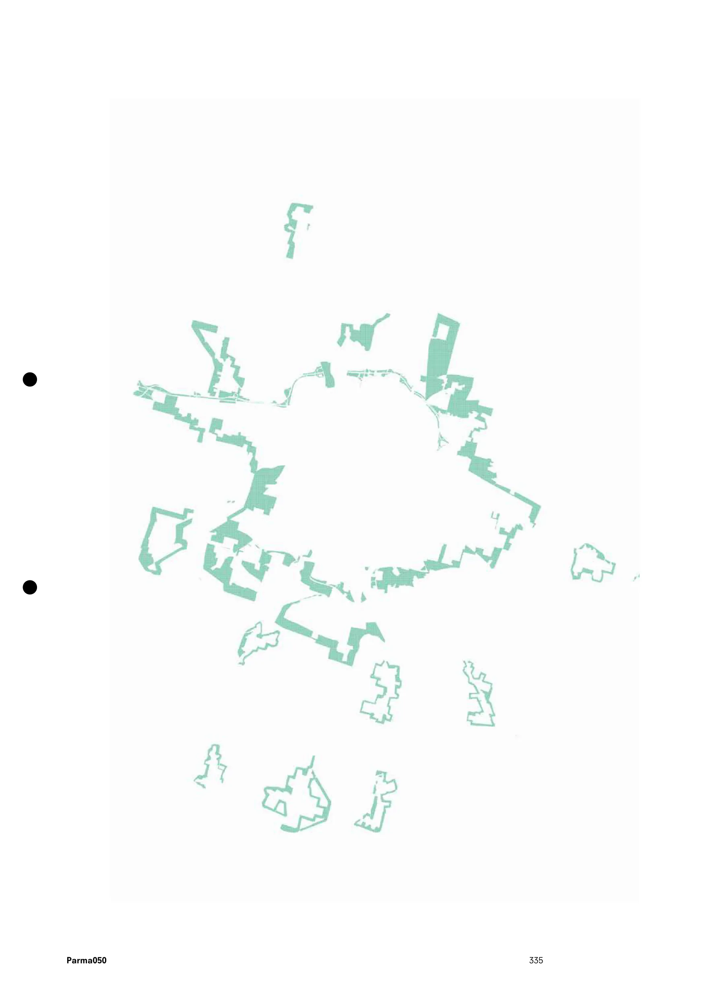
ST.PS.4.5.2
SCENARIO 3.7
“Natura Espansiva”
Luoghi e Progetti Strategici
4.7.1
Scala
1:15.000
“Oasi verde e blu della biodiversità”
Sviluppo della cassa di espansione del Torrente Parma
PR050
1. Descrizione
Il piano PR050 favorisce la trasformazione dello spazio infrastrutturale della cassa di espansione del Parma in un nuovo
dispositivo “verde e blu” alla scala di area vasta. La cassa di espansione sul Torrente Parma, spazio infrastrutturale,
verrà trasformato in “un’oasi verde e blu della biodiversità”1. Il piano PR050 propone la città di Parma come un
modello di territorio non antropocentrico, per una nuova convivenza tra uomo, animali e natura. Una visione di questo
tipo permette di spingere lo sviluppo verso il rimboschimento e la rinaturalizzazione di parti di territorio antropizzato
(territorio che è soggetto all’impatto antropico). L’immenso parco naturale intorno e dentro alla cassa di espansione di
Vigatto lungo il Parma diventerà un’oasi naturale per piante e animali selvatici. Sarà ricolonizzato da specie animali che
sono state espulse da queste zone. L’adozione di una prospettiva etica non antropocentrica proporrà logiche basate
sull’autolimitazione al consumo e allo stesso tempo di innestare su ciò che esiste già nuovi usi e significati. Il PUG
PR050 ripensa e definisce un sistema di aree protette (OASI) per la libera circolazione di specie che sono compatibili
con gli ecosistemi urbani. L’oasi verde e blu della biodiversità di Parma sarà un grande habitat controllato dalle leggi
della natura e dove la biodiversità diventerà l’attrazione primaria3. La riconquista di spazi da parte di animali selvatici
e natura diversificata producono nuove forme di scambio e nuove relazioni tra sistemi e questo può sostenere il mo-
vimento e la mobilità delle specie animali attraverso apposite aree di sosta per gli uccelli migratori nelle aree urbane.
Aree agricole con zone naturali protette, la creazione di corridoi verdi che possono occupare spazi anche residuali
permetteranno di rinnovare l’equilibrio “fragile” tra uomo4 e natura.
1. Aree agricole con zone naturali protette,
la creazione di corridoi verdi che possono
aumentare la biodiversità è un elemento
fondativo del Piano PR050. La graduale
demineralizzazione delle aree pavimentate in
ambito urbano e l’introduzione di spazi verdi
così come il potenziamento e l’efficientemente
dell’apparato vegetativo svolgeranno un ruolo
determinante per favorire la rigenerazione
dell’ambiente abitato. Il concetto di biodiversità
in ambito urbano va considerato anche
attraverso l’utilizzo dei “tetti verdi” degli edifici,
che possono favorie l’insediarsi di diversi tipi di
piante e di specie animali.
2. Criteri rigenerativi: tipologia di intervento
Il piano PR050 favorisce lo sviluppo dell’oasi della biodiversità anche attraverso il “FONDO” 2, ossia, il contributo alla
realizzazione della Città Pubblica attraverso gli interventi complessi.
2. Il “fondo vincolato alla città pubblica”
(FONDO), è uno dei principali strumenti di
collaborazione del privato alla realizzazione
e miglioramento della città pubblica e, con
questa, anche della città privata. I valori
economici e le modalità di contribuzione al
FONDO sono determinati:
a) possono essere indicati dal Comune, in sede
di manifestazione di interesse;
b) sono precisamente individuati in sede di
stipula dell’AO o PAIP, ai sensi dell’art. 38 della
LUR.
3. Disposizioni urbanistiche e Azioni
Tra le più importanti strategie riferite al progetto strategico “Oasi verde e blu della Biodiversità” rientrano l’implemeta-
zione e lo sviluppo espansivo dell’eco rete ambientale (Green Infrastructure), la mitigazione dei rischi ambientali e favori-
re l’attratività oltre all’avvio di processi economici legati al turismo sostenibile.
L’intervento è attuabile attraverso la redazione di un masterplan anche per lotti funzionali, comprendente le porzioni di
territorio intorno alle parti arginate della cassa di espansione. È fatto salvo il rispetto dei vincoli idraulici e idrogeologici
esistenti di cui alla tavola dei Vincoli del PUG.
In particolare, devono essere soddisfatte le condizioni di sostenibilità indicate nella “Strategia” e relative “Azioni”, qui
richiamate:
Strategia 3.1 - Azione 3.1.10 Estendere, implementare e gerarchizzare la rete ciclabile urbana e territoriale. Nel caso
specifico la ciclovia Colorno Parma Sala Baganza proposta dal Piano PR050 comprende la possibilità di estendere dalla
strada massese la ciclovia proprio per mettere in contatto della stessa l’oasi naturalistica. Azione 3.1.13 Promuovere
l’alta qualità del TPL e sviluppare linee di collegamento strutturali a livello territoriale. Strategia 3.4 - Azione 3.4.6 Qua-
lificazione e ridefinizione delle dotazioni, esistenti e proposte. Azione 3.4.12 Sviluppo di percorsi ciclo pedonali, sentieri
e ippovie alla scala territoriale. Strategia 3.7 - Azione 3.7.1 Salvaguardare ed implementare la biodiversità. Azione 3.7.2
Sviluppare la matrice ecosistemica valorizzando la centuriazione. Azione 3.7.4 Sviluppare e costruire la “green infra-
structure” a livello urbano e territoriale. Azione 3.7.5 Migliorare la qualità delle acque di falda e quelle superficiali. Azione
3.7.10 valorizzazione e qualificazione deli parchi territoriali. Azione 3.7.11 Favorire l’espansione delle aree naturalistiche
protette.
3. Monitoraggio e Manutenzione:
Programma di monitoraggio della biodiversità
per valutare l’efficacia degli interventi;
Manutenzione periodica per garantire la salute
delle nuove piantumazioni e la funzionalità
idraulica.
Benefici Attesi:
Aumento della biodiversità locale con la
creazione di nuovi habitat;
Miglioramento della qualità delle acque e del
microclima locale.
4. Vision e obiettivi del Piano
Le strategie individuate supportate dalle Azioni, richiamate precedentemente, concorrono al raggiungimento dei se-
guenti obiettivi dichiarati nella Vision: 2 - Parma città policentrica e dei quartieri; 6 - Parma città dello sviluppo e
delle opportunità; 1 - Parma città della biodiversità.
4. Fruizione pubblica sostenibile e
sensibilizzazione ambientale.
5. Obiettivi specifici del progetto
Il progetto mira a trasformare la cassa di espansione del torrente Parma in un’area multifunzionale che unisce la gestio-
ne idraulica alla promozione della biodiversità. L’intervento prevede la creazione di un’Oasi verde e blu che favorisca
l’equilibrio ecologico, aumenti la resilienza climatica e offra spazi di fruizione per la cittadinanza.
Potenziamento della funzione idraulica della
cassa di espansione grazie alla vegetazione
ripariale. Il progetto rappresenta un esempio
virtuoso di sinergia tra interventi di ingegneria
idraulica e naturalistica, contribuendo alla
transizione ecologica del territorio parmense.
•
Incrementare la copertura arborea e arbustiva lungo i bordi e le aree perimetrali.
•
Favorire la creazione di habitat per la fauna locale e migratoria.
•
Promuovere la connessione ecologica lungo il corridoio fluviale.
•
Aumentare la capacità di assorbimento delle acque meteoriche e mitigare il rischio di esondazioni.
•
Realizzare percorsi didattici e ricreativi che valorizzino l’ecosistema locale.
Le altre casse di espansione esistenti e da
costruire potranno essere soggette ad un
simile trattamento, tali da sviluppare nel
territorio un sistema ecologico attivo di “oasi”
e isole verdi e blu.
6. Interventi Previsti:
•
Forestazione e Vegetazione Ripariale lungo i bordi arginati e comunque all’esterno della cassa.
•
Messa a dimora di alberature autoctone (quercia, pioppo, ontano) lungo i bordi della cassa di espansione.
•
Creazione di fasce tampone vegetate per filtrare le acque e prevenire l’erosione.
•
Zone Umide e Laghetti Temporanei.
•
Realizzazione di aree umide con vegetazione idrofila (tife, canne palustri) per favorire la presenza di anfibi,
insetti e uccelli acquatici.
•
Aree Ricreative e Percorsi Naturalistici.
•
Individuazioni di sentieri che attraversano l’area, con pannelli informativi sulla flora e fauna locali.
•
Spazi per l’osservazione della fauna e aree di sosta immerse nel verde.
ST.PS.4.5.3
SCENARIO 3.7
“Natura Espansiva”
Luoghi e Progetti strategici
4.7.2
Scala
“Parma Green Ring”
PR050
1. Descrizione
Il Piano PR050 individua i viali che racchiudono il centro storico di Parma come un ambito da trasformare in “Green
Ring”. La ridefinizione della sezione a favore della mobilità pedonale e ciclabile favorisce la costruzione della città pub-
blica e trasforma un’infrastruttura in spazio pubblico integrando funzioni esistenti e nuove.
1. Ripensamento della Viabilità in coerenza con
le previsioni del PUMS.
Pedonalizzazione e Piste Ciclabili: progressiva
chiusura al traffico veicolare privato nei viali più
prossimi al centro storico. Creazione di piste
ciclabili lungo tutto l’anello con collegamenti
diretti ai quartieri limitrofi.
Viabilità a Senso Unico: istituzione di sensi
unici alternati per ridurre il traffico e facilitare la
convivenza tra ciclisti e automobilisti.
Zone a Traffico Limitato (ZTL): espansione delle
ZTL ai viali principali, limitando l’accesso solo
al TPL, ai residenti e ai mezzi di emergenza.
2. Criteri rigenerativi: tipologia di intervento
Il Green Ring è un progetto per trasformare lo spazio autocentrico in uno spazio per una nuova vocazione pubblica.
Con una lunghezza di 6 km si sviluppa lungo l’area delle ex mura, oggi i viali sono la principale circonvallazione attorno
alla città storica di Parma. Il Green Ring è uno dei più importanti progetti strategici di trasformazione complessiva, da
infrastruttura a spazio pubblico, che il Piano PR050 propone nella storia contemporanea di Parma . Il programma si basa
sul concetto movimento con mezzi di trasporto pubblico, prevedendo la riqualificazione e il rinnovamento delle strade
per fornire un ambiente più pedonale e ciclabile. Considerando le sezioni attuali, il Green Ring richiede la stesura di un
masterplan con risposte e soluzioni innovative in termini qualitativi e quantitativi a una serie di condizioni specifiche,
tra cui il diritto di passaggio, il potenziale del “design” del paesaggio stradale, l’attitudine ad ospitare un sistema di
trasporto pubblico di superficie rapido e di “alta qualità” e la configurazione spaziale degli incroci con le strade laterali.
I punti salienti del progetto si possono riassumere nel seguente modo:
1. un infrastruttura di 6 km che sarà trasformata da un nuovo “standard” di qualità urbana;
2. Approccio completo di progettazione stradale per un cambio di paradigma nella mobilità urbana a Parma;
3. Ridistribuzione dello spazio per un uso equo da parte di tutti gli utenti;
4. Possibilità di associare nuove funzioni degli edifici che affacciano sul Green Ring.
Il “RIMAGREEN” - RIgenerazione MArgini GREEN Ring - come evidenziato nella scheda dedicata (ST.AS.4.4.A1) defi-
nisce le possibilità trasformative dei margini urbanizzati lungo il percorso di 6 Km (o green ring). Gli interventi possono
contribuire alla realizzazione del “Green Ring” in modo diretto o attraverso il “FONDO”(Fondo vincolato alla città pub-
blica). Le aree per interventi di trasformazione strategica della città (indicati negli schemi di assetto strategico struttu-
rale, delle Trasformazioni” sono deputate a sostenere il “Fondo vincolato alla città pubblica”, creato dall’Amministra-
zione Comunale quale strumento in cui far confluire l’apporto economico degli operatori che propongono interventi
all’interno delle “Aree strategiche di trasformazione”, per realizzare le DO.TE. (DOtazioni TErritoriali).
2. Parcheggi e Mobilità in coerenza con le
previsioni del PUMS.
Parcheggi Intermodali: realizzazione di
parcheggi di scambio fuori dal Green Ring,
collegati con mezzi pubblici ecologici (bus
elettrici e tram leggeri).
Riduzione del Parcheggio su Strada:
eliminazione progressiva dei parcheggi su
strada lungo i viali e creazione di parcheggi
sotterranei e/o sopraelevati.
Micro-Mobilità: implementazione di sistemi di
bike-sharing e monopattini elettrici con stazioni
lungo il Green Ring.
3. Aree Verdi e Spazi Pubblici
Desigillazione di Aree: rimozione dell’asfalto e
creazione di parchi lineari, aree gioco e spazi
pubblici multifunzionali lungo i viali.
Sistema di Alberature: piantumazione di
alberi ad alto fusto lungo i viali per aumentare
l’ombreggiatura, ridurre l’isola di calore urbano
e migliorare la qualità dell’aria.
Aree di Socialità: realizzazione di piazze
pedonali, aree per mercati settimanali e spazi
per eventi culturali.
3. Disposizioni specifiche e Azioni
Tra le più importanti strategie urbane riferite al progetti strategici “Green Ring” parte dello sviluppo “infrastrutture
e città pubblica” rientrano la qualificazione degli spazi pubblici, la mitigazione dell’isola d calore, l’avvio di processi
di decarbonizzazione, di aumentare l’utilizzo da parte di mezzi pubblici e di corsie preferenziali per ciclisti, aumentare
la presenza vegetale di mitigazione come parte della sezione stradale; sviluppare la città di prossimità. In particolare,
devono essere soddisfatte le condizioni di sostenibilità indicate nella “Strategia” declinata dai 7 scenari e le relative
“Azioni”, qui richiamate:
Strategia 3.1 - Azione 3.1.1 Favorire la proliferazione di infrastrutture “smart mobility” con scambio mezzo, soprattutto
nei parcheggi pubblici. Azione 3.1.4 Nuove linee strutturali TP. Azione 3.1.5 Valorizzazione del sistema dei viali e delle
radiali. Azioni 3.1.7/3.1.8 Favorire la proliferazione di zone 30 e zone 20, e al contempo favorire opere di mitigazione
ambientale per ridurre l’impatto di infrastrutture stradali molto frequentate, riabilitando gli spazi interclusi. Azione 3.1.10
Estendere, implementare e gerarchizzare la rete ciclabile urbana e territoriale. Azione 3.1.11 “Favorire la ridefinizioni del-
lo spazio carrabile a favore della ciclo-pedonalità e congiuntamente aumentarne la sicurezza e l’accessibilità”. Azione
3.1.12 Incentivare il trasporto pubblico e privato elettrico. Strategia 3.3 - Azione 3.3.1 Desigillazione, deimpermeabiliz-
zazione, demiralizzazione dei suoli permeabili e antropizzati. Azione 3.3.2 Favorire processi di regolazione e mitigazione
dell’effetto “isola di calore”. Strategia 3.6 - Azione 3.6.1 Sviluppare e definire il ruolo delle nuove porte di accesso
alla città. Strategia 3.7 - Azione 3.7.1 Salvaguardare ed implementare la biodiversità. Azioni 3.7.3/3.7.4 Potenziare
l’infrastruttura verde urbana. Sviluppare e costruire la “green infrastructure” a livello urbano e territoriale. Azione 3.7.8
Sviluppare in ambito urbano una nuova infrastruttura ecologicamente attiva.
4.Trasporto Pubblico
Navette Elettriche: introduzione di linee di
navette elettriche che circolano lungo il Green
Ring con fermate frequenti.
Tram Circolare: studio di fattibilità per la
reintroduzione di un tram circolare che segue il
percorso dei viali.
5. Calcolo delle Superfici Permeabili Verdi e
Desigillate
Superficie Desigillata: circa 30.000 m² lungo i
viali principali, con un incremento del 25% della
permeabilità.
Aree Verdi: creazione di 15.000 m² di nuove
aree verdi e piantumazione di oltre 500 alberi.
Aree di Socialità e Spazi Multifunzionali: 10.000
m² destinati a piazze pedonali e aree per attività
comunitarie.
6. Effetti Previsti sull’Impronta Carbonica
Riduzione del Traffico: si prevede una
diminuzione del traffico automobilistico fino al
30%, con conseguente calo delle emissioni di
CO2.
Incremento della Copertura Verde: l’aumento
delle aree verdi può contribuire a ridurre fino al
20% l’isola di calore urbano.
Miglioramento della Qualità dell’Aria:
l’incremento dell’uso di trasporti pubblici
e biciclette ridurrà le emissioni nocive,
migliorando la salute dei cittadini.
Ritenzione Idrica: Le aree desigillate
contribuiranno a migliorare il drenaggio
urbano, riducendo il rischio di allagamenti e
aumentando la biodiversità.
4. Vision e gli obiettivi del Piano
Le strategie individuate supportate dalle Azioni, richiamate precedentemente, concorrono al raggiungimento dei se-
guenti obiettivi dichiarati nella Vision: 1 - Parma città della biodiversità; 2 - Parma città policentrica e dei quarteri;
3 - Parma città della mobilità condivisa e sostenibile; 5 - Parma città della qualità dell’abitare e cura delle perso-
ne.
Obiettivi specifici
La creazione di un Green Ring attorno al centro storico di Parma mira a:
•
Ridurre l’impronta carbonica della città;
•
Promuovere una mobilità sostenibile;
•
Incrementare le aree verdi e migliorare la qualità della vita urbana;
•
Riorganizzare la viabilità per dare priorità a pedoni e ciclisti;
•
Rafforzare il trasporto pubblico e diminuire l’uso dell’auto privata.
La trasformazione dei viali di Parma in un Green Ring rappresenta un’opportunità unica per ripensare la città in chiave
sostenibile. Attraverso interventi mirati e una forte partecipazione cittadina, il progetto contribuirà a ridurre l’impatto
ambientale, favorire la mobilità dolce e migliorare la qualità degli spazi pubblici.
Proposta progettuale:
Parco Lineare “Green Ring”
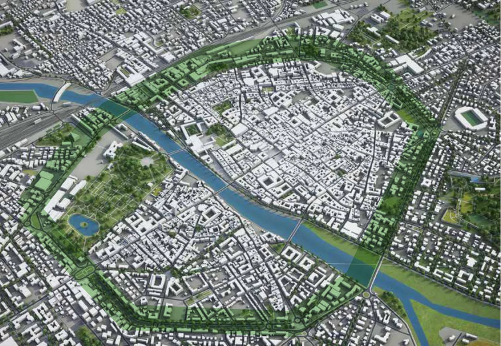
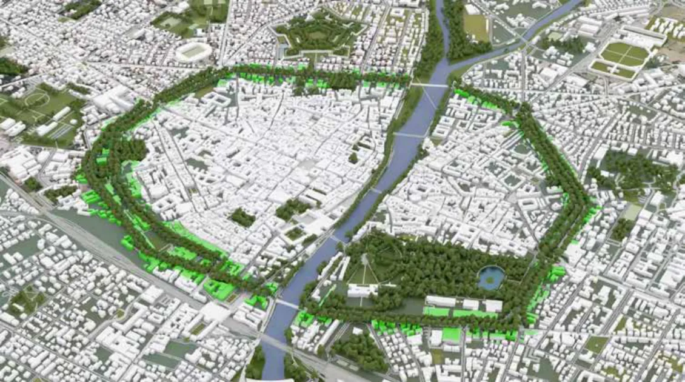
L’ampia sezione stradale permette il riassetto
degli spazi e delle sezioni stradali al fine di
garantire una rifunzionalizzazione del ring in
chiave ambientale. Si propone la riduzione delle
sezioni destinate al traffico veicolare a favore
di nuovi spazi per la mobilità alternativa nonchè
per lo svago e il tempo libero. La conversione
di alcuni sedimi stradali permetterà un utilizzo
differente dei materiali, promuovendo forme
di de-impermealizzazione del suolo con
pratiche di de-paving. L’occasione permetterà
il riassetto anche delle aree di sosta per i
residenti promuovendo la qualità scenografica
del contesto urbano.
Il network e il sistema “molecolare” dei luoghi
“verdi”
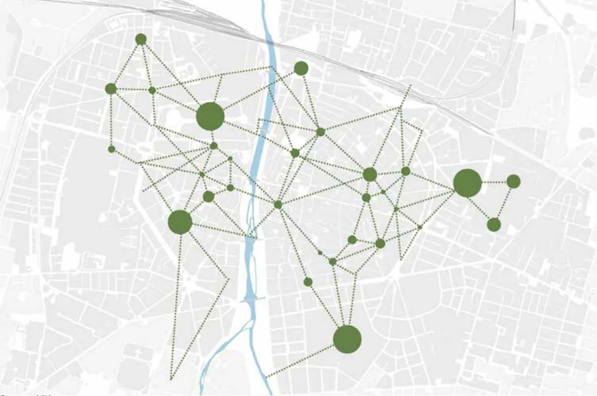
Tessuti storici di elevato pregio ambientale-architettonico ed urbanistico. Ambiti dove
concentrare le politiche di rinnovo del patrimonio edilizio privo di valore in coerenza
con l’ambiente storico e la morfologia del tessuto.
Ambito del Torrente Parma.
Stabilizzare e rinnovare il rapporto
tra città e spazi acquei e ripariali.
Parchi urbani e aree con elevate presenze vegetali
Aree ad elevata concentrazione di funzioni
Poli di interscambio e di accesso alla città storica. Spazi aperti dove con-
centrare interventi per l’intermodalità e favorire l’accesso alla città storica.
Ambiti di progetto coordinato degli spazi di relazione e delle funzioni.
Favorire l’aggregazione di funzioni terziarie e del commercio.
Ambito della città monumentale/emergenze storiche di
valore monumentale/landmarks
Rinforzo delle connessioni tra gli ambiti. Riduzione degli ostacoli all’isolamento
e rinnovo del rapporto interno allo spazio e con l’intorno. Favorire le attività che
alimentano il sistema.
Principali cortine edilizie di pregio. Favorire la conservazione degli elementi
di pregio e la eliminazione degli elementi di degrado, promuovendo gli
aspetti percettivi.
Sistema del verde pubblico/privato da configurare ad integrazione
della rete ecologica in ambito urbano.
Luoghi di relazioni con l’acqua.
Corridoio multimodale di connessione Nord-Sud.
Fronti con funzioni relazionate allo spazio pubblico. Ambiti lineari dove favorire il
recupero del patrimonio edilizio e della funzione “pubblica” degli elementi architetto-
nici; le relazioni con lo spazio pubblico e la concentrazione di attività commerciali.
Connessioni sovralocali
Green belt
Luoghi di ricucitura urbana
Luoghi privilegiati dalla rigenerazione
Hub
mobilità
Servizi
Pubblici
Terziario
avanzato
Parco Ducale
Mixitè
Polo
scolastico
Area
Storica
Parco
Ex-Eridania
Ambito del
commercio
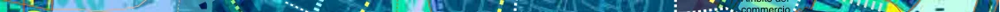
Hub Ospedaliero
Stadio
Tardini
Hub dello
sport
Parco Ferrari
La Cittadella
La città storica e le relazioni strategiche al di
fuori dei essa
Gli elementi urbani strategici all’interno e all’e-
sterno del “Gree Ring”
città verticale
W&L
Hub
della
mobilità
città W&L
Servizi pubblici
Parco
ex Eridania
Area
storica
Hub
ospedaliero
Ambito
del commercio
Stadio
hub dello sport
La Cittadella
SISTEMA AMBIENTALE NELLA CITTÀ STO-
RICA
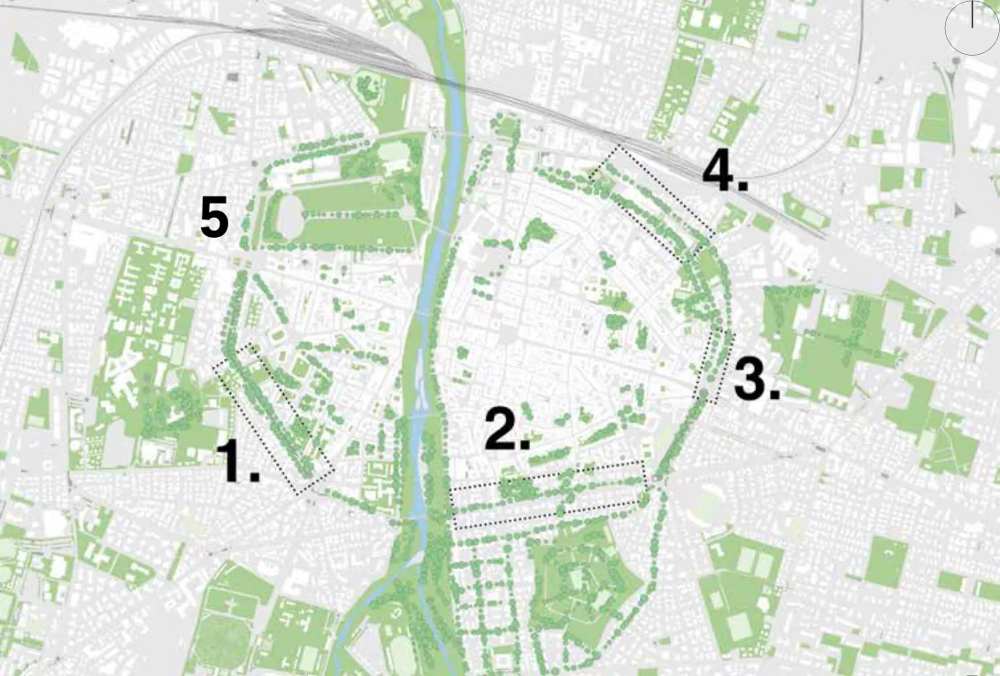
Il rapporto tra città e componente “green” si
rafforza attraverso la definizione degli ambiti
prossimi alle aree verdi e ai fronti prospicenti
i corsi d’acqua. Le macro-azioni mirano al
ripristino della continuità ecologica all’interno
e all’esterno della città storica, oltre alla
creazione di un sistema di aree verdi pubbliche
e giardini privati. Punto cruciale per questa
tematica riguarda la preservazione della vege-
tazione monumentale quale componente del
paesaggio urbano.
La componente “verde” si struttura in differenti
elementi: i grandi parchi e il torrente Parma, i
quartieri e i giardini privati ed infine gli elementi
di composizione dell’arredo urbano come
aiuole e isole spartitraffico. Da questi ne
discernono tre tipologie di funzioni del “verde”:
La funzione naturale-ecosistemica, garantita
dalla presenza di grandi corridoi ecologici
naturali ed antropici, nonchè dalla presenza di
stepping stone all’interno del tessuto compat-
to; la funzione sociale data dalla presenza di
ampi spazi e corridoi a favore dello sport e del
tempo libero ed infine la funzione dell’arredo
urbano come elemento qualificante della scena
urbana.
1. Proposta progettuale: Parco Lineare
L’ampia sezione stradale permette il riassetto
degli spazi e delle sezioni stradali al fine di
garantire una rifunzionalizzazione del ring in
chiave ambientale. Si propone la riduzione delle
sezioni destinate al traffico veicolare a favore
di nuovi spazi per la mobilità alternativa nonchè
per lo sport e il tempo libero. La conversione
di alcuni sedimi stradali permetterà un utilizzo
differente dei materiali, promuovendo forme di
de-impermealizzazione del suolo con pratiche
di devamping. L’occasione permetterà il rias-
setto anche delle aree di sosta per i residenti
promuovendo la qualità della scena urbana.
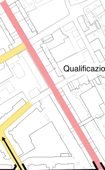
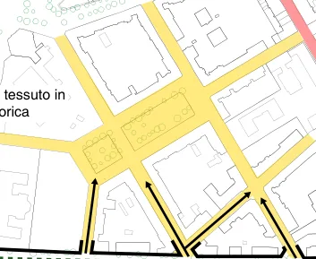
Qualificazione degli spazi pubblici nei tessuti storici
Aumento della porosità del tessuto in
connessione con la città storica
Rimodulazione degli
spazi della carreggiata
Aumento delle corsie per la
mobilità alternativa e TPL
Aree di sosta mitigate
2. Proposta progettuale: Parco Lineare
Scomposizione del viale al fine di permettere
una maggiore permeabilità tra città storica e
città contemporanea.
Promozione dell’uso degli spazi relazionandoli
con le attività e le funzioni già presenti
Diminuzione della carreggiata al fine di favorire
corsie per mobilità alternativa (bike, monopatti-
ni, pattini..), TPL e mobilità dolce.
Aumento della porosità del tessuto in
connessione con la città storica
Rimodulazione degli spazi
della carreggiata
Aumento delle corsie per la
mobilità alternativa e TPL
Riorganizzazione della
struttura insediativa
Riorganizzazione insediativa a
favore della Cittadella
3
Proposta progettuale: Parco Lineare
Scomposizione del viale al fine di permet-
tere una maggiore permeabilità tra città
storica e città contemporanea.
Promozione qualitativa delle connessioni
tra Cittadella e città storica.
Riappropriazione urbana del parco della
cittadella, aumentando la porosità della
città consolidata.
Diminuzione della carreggiata al fine di
favorire corsie per mobilità alternativa
(bike, monopattini, pattini..), TPL e mobili-
tà dolce.
Sevizi sportivi e del tempo
libero
Spazi per la partecipazione
agli eventi
Rimodulazione degli
spazi della carreggiata
Aumento delle corsie per
la mobilità alternativa e
TPL
Aree di sosta mitigati
4
Proposta progettuale: Parco Lineare
Riduzione delle sezioni stradali per la mobilità
privata
Creazione del “Corridoio Verde” su uno dei
due viali paralleli
Promozione di rapporti tra funzioni presenti e il
Corridoio Verde
Aumento delle relazioni tra boghi storici e città
contemporanea
Promozione delle attività al piano terra con
funzioni relazionate con lo spazio pubblico
Aumento della porosità del tessuto in
connessione con la città storica
Riduzione della sezione stradale
Corridoio verde
e qualificazione di
spazi pubblici lineari
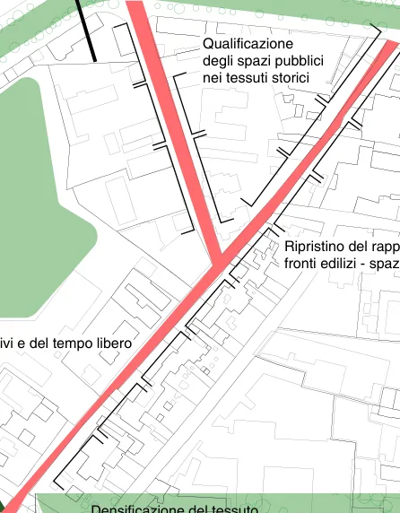
Qualificazione
degli spazi pubblici
nei tessuti storici
Ripristino del rapporto
fronti edilizi - spazio pubblico
Servizi sportivi e
del tempo libero
Servizi sportivi e del tempo libero
5
Proposta progettuale: i nodi
Densificazione del tessuto
promuovendo rapporto di qualità
dei fronti edilizi
Riassetto della struttura urbanistica
e densificazione dei tessuti
Aumento della porosità del tessuto
in connessione con le aree verdi
Spazi per la riorga-
nizzazione
della mobilità e della
sosta
Promozione degli usi
spazio pubblico per attività commerciali
Riassetto della struttura urbanistica
e densificazione dei tessuti
Riassetto dei viali in chiave green
con rimodulazione delle carreggiate
e promuovendo la multimodalità
Legenda
1. Green Ring
2. Qualificazione degli assi urbani ridisegno
degli spazi a terra funzioni in rapporto con lo
spazio
3. Riordino dei tessuti urbani
4. Nodo delle funzioni commerciali e accessi
alla città storica
5. Attrattori del commercio e del tempo libero
6. Aumento della porosità del sistema com-
merciale e delle connessioni
7. Assi urbani della qualità riconfigurazione
delle funzioni e del rapporto a terra
8. Mitigazione degli elementi architettonici ed
edilizi incoerenti
9. Elementi di pregio architettonico e paesag-
gistico da valorizzare
17
18
10. Rete ecologica da rafforzare
11. Barriere di mitigazione degli elementi de-
trattori della qualità paesaggistica
12. Pertinenze degli edifici di pregio da qualifi-
care e re-inserire nel contesto
8
9
10
13. Ambito dell’agricoltura urbana
14. Elementi detrattori di qualità paesaggistica
e urbana
15. Spazi dell’istruzione; riconfigurazione degli
elementi
16. Progressione controllata della città. ambito
delle attività temporanee
17. Integrazione delle attività con funzioni
18. Giardino sensoriale
19. Orti urbani da riqualificare
Barriere di mitigazione
visiva e sonora delle
infrastrutture e delgi
elementi detrattori di
qualità paesaggistica
Riqualificazione degli
orti urbani esistenti
Giardino sensoriale
promozione di culture
alternative
Orto degli odori
• Mitigazione degli elementi detrattori di qualità
paesaggistica
• Mitigazione dei fronti edilizi
• Riqualificazione degli orti urbani
• Spazi attrezzati con funzioni di servizio e di
supporto agli orti come la vendita di semenze,
coltivazioni specifiche, vendita dei prodotti,
formazione ecc..
• Estensione dell’area per la creazione di giardi-
ni “sensoriali”
• Rigualificazione delle pertinenze delle emer-
genze storiche
Insediamento di attività
complementari agli spazi espositivi
Diminuzione degli spazi pubblici e privati a
favore di usi temporanei che alimentino la
fruizione del parrco
Tessuti urbani da
ricomporre
Tessuti urbani da
preservare
Tessuti urbani da
ricomporre
Tessuti urbani da
ricomporre
Fotopiano dell’ambito di riferimento (Parco
ex-Eridania)
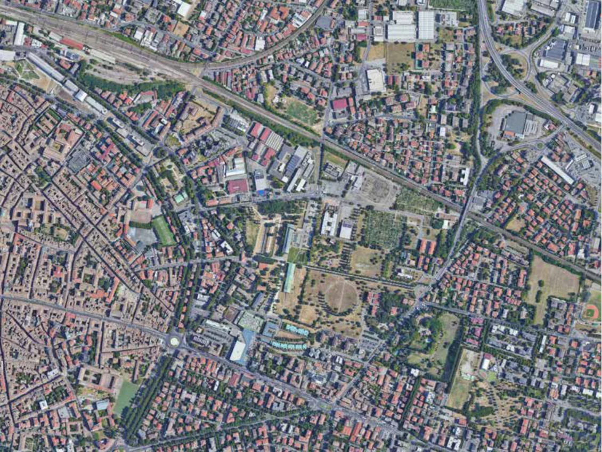
ST.PS.4.5.4
SCENARIO 3.7
“Natura Espansiva”
Luoghi e Progetti Strategici
4.7.10
Scala
“Parco Verde-Blu”: il Torrente Parma, come corridoio ecologico
per la biodiversità
PR050
1. Descrizione
Il Parma è un torrente attraente per la bellezza paesaggistica e la “naturalità stupefacente”1. delle sue rive, oltre che per il
suo deflusso variabile la temporalità e alternanza occasionale tra acque e suolo nel suo alveo.
Chi non vorrebbe vivere vicino al torrente Parma, beneficiando della natura e dei suoi servizi ecosistemici nel mezzo del
centro storico? Come beneficiare di questo ambiente naturale, consapevoli della fragilità della natura e del dovere di con-
servarla? Creare un nuovo fronte programmato e pubblico che possa interpretare le reali esigenze legate alla sicurezza e
le possibilità di usufruire dell’affaccio verso questo ambito fluviale, darebbe più importanza al torrente Parma nella città pur
nella consapevolezza che il Torrente Parma è anche corridoio ecologico, cioè luogo di connessione di elementi naturalistici
ed ecologici di particolare rilevanza a livello territoriale. Trasformare i viali che si affacciano sul torrente Parma, facenti parte
del “Green Ring”, in uno spazio pubblico di qualità e in sicurezza introdurrebbe una nuova scala di valori in città, tenendo
conto anche delle opportunità e dei possibili effetti positivi di interventi condotti in modo compatibile con la struttura na-
turale del paesaggio e dell’ecosistema. Il progetto favorisce l’insediamento sui viali del “Lungo Parma” di possibili piccole
attività di ristoro, playgrounds e spazi per la sosta e lo svago. Ripensare l’affaccio verso il Torrente Parma sembra così ovvio
(ma non lo è). Nello spirito dei tempi, il progetto dovrà essere in grado di articolare le richieste e le aspettative (talvolta con-
traddittorie), e allo stesso tempo riuscire a contemperare i molteplici vincoli normativi e naturalistici. Le “vie d’acqua” di Par-
ma sono caratteristiche essenziali del paesaggio ed elementi delle rete ecologica territoriale: ma come renderli “presenze”
integrate? La città, per troppo tempo, ha voltato le spalle alle vie d’acqua, diffidando dei loro capricci, e quando finalmente
si è avvicinata di nuovo, è stato per alimentare i processi industriali. I corsi d’acqua sono stati essenziali per l’economia
tradizionale, per i trasporti, il commercio. Sono stati necessari grandi sforzi per addomesticare il torrente (l’alluvione del
2014 ha fatto notare come la città sia vulnerabile)2. PR050 propone un nuovo rapporto con l’acqua favorendo, con percorsi
fruibili, la valorizzazione delle rive. Questo progetto strategico è la premessa per ripensare un nuovo (e rigenerante) rappor-
to con l’acqua, che sia comunque compatibile con la conservazione e il miglioramento delle caratteristiche ecologiche ed
ambientali direttamente connesse all’ambito fluviale, oltre che con i vincoli di tipo idraulico.
1. Vittorio Parisi, Animali tra i ponti. Invito all’os-
servazione della natura nella Parma cittadina.
PR, 2019.
2. A tal proposito le casse di espansione:
quella già costruita lungo il torrente Parma
(Vigatto) e quella in via di definizione a sud
lungo il torrente Baganza, saranno d’importan-
za strategica per la messa in sicurezza della
“macchia” urbanizzata. Il Piano PR050 propone
come uteriori progetti strategici la trasforma-
zione di tali casse di espansione come “Oasi
della Biodiversità”, luoghi in cui acqua e natura
possano trasformare un opera infrastrutturale
in uno spazio ecosistemico di nuovo tipo per la
campagna parmense. Si ricorda inoltre come
i torrenti Parma e Baganza siano a loro volta
oggetto di altre progettualità tra cui anche la
ciclovia Colorno-Parma-Sala Baganza con il
percorso che si snoda per gran parte lungo le
sponde e gli argini dei due torrenti.
2. Criteri rigenerativi: tipologia di intervento
Il progetto strategico propone di re-immaginare il torrente come un dominio pubblico sperimentale, dove caratterizzare l’i-
dentità della città futura. Il progetto per il segmento indicato (con la possibilità di estenderlo nel tempo in modo progressivo
ad altri tratti al di fuori del Green Ring) non viene definito da un programma specifico, ma dalla possibilità che offre in termini
di “incontri” tra persone, tra persone e animali, piante, minerali e da nuove opportunità di scoperta, azione e avventura.
Il progetto è un manifesto per dare forma a un nuovo tipo di spazio pubblico, dove il tempo libero diventa, letteralmente,
rigenerazione: un luogo in cui possono emergere nuove ritualità civiche, lungo nuovi modi di essere cittadini, un luogo dove
le persone non sono più viste come utenti, ma come, studenti, esploratori, ricercatori, ecc. Inoltre l’obiettivo di non trascu-
rare il riconosciuto valore ecologico del corso d’acqua interessato è questione prioritaria, volendo comunque perseguire
la salvaguardia della biodiversità vegetale e animale ed il mantenimento e miglioramento delle condizioni di connettività
degli elementi della rete ecologica. Lo sviluppo dell’area definita dalle rive del torrente deve infatti assumere come cifra
caratterizzante la resilienza ecologico-ambientale; livelli elevati di connettività ecologica all’interno di un paesaggio urbano
consentono infatti agli animali di muoversi tra risorse frammentate e agevolano la dispersione post-riproduttiva, mantenen-
do nel lungo periodo il flusso genico e la vitalità della popolazione animale e vegetale. Il segmento di torrente considerato
interseca un importante collegamento pedonale tra la Pilotta e il Parco Ducale.
Vi sono in totale cinque ponti che collegano l’“Oltretorrente” con la parte più antica di Parma. Oltre alla Pilotta molti sono
i luoghi di interesse posizionati lungo i waterfront di entrambe le rive. In contesto urbano, i corsi d’acqua hanno un valore
importante per lo svago di prossimità della popolazione. La pianificazione deve concentrarsi prioritariamente sul valore
ecosistemico e paesaggistico del corso d’acqua quale infrastruttura “verde e blu”, integrandolo, ove possibile, con il valore
educativo e con quello ricreativo. Il Piano propone lievi interventi sulla sponda sinistra con l’integrazione di sentieri pedonali,
Tutti gli interventi da realizzare nel tratto urbano del torrente, compresi quelli per la fruizione, dovranno essere pianificati (così
come emendato in aula) nel rispetto della sicurezza idraulica e dando priorità al valore ecologico del corso d’acqua in una lo-
gica tesa alla salvaguardia della biodiversità vegetale e animale nonché al mantenimento e miglioramento delle condizioni di
connettività degli elementi della rete ecologica. Nel caso specifico l’obiettivo è raggiungibile attraverso interventi progettati
e realizzati in modo da non ridurre la funzione di corridoio ecologico del torrente e delle sue sponde.
L’obiettivo è quindi quello di creare un nuovo “parco della biodiversità” proporre, attraverso l’attivazione dei previsti processi
di consultazione della cittadinanza e di convocazione degli enti interessati, una nuova “Area di Riequilibrio Ecologico” lungo un
asse ecosistemico pedonale particolarmente fruito (così come emendato in aula) che dovrà essere compatibile con le esi-
genze di sicurezza idraulica, di salvaguardia della biodiversità animale e vegetale e di salvaguardia del valore paesaggistico
dell’ambito territoriale interessato.
3. Disposizioni urbanistiche e Azioni
Il progetto dovrebbe essere sviluppato attraverso la redazione di un masterplan una proposta di Area di Riequilibrio Eco-
logico (L.R. n. 6/2005), (così come emendato in aula) che deve considerare lo sviluppo integrato degli ambiti urbani lungo
l’asta torrentizia e definirne le relazioni morfologiche e funzionali con le sponde/viali di ambo i lati. Il progetto deve neces-
sariamente essere predisposto con il supporto di esperti di ecologia e di paesaggio già nelle prime fasi di ideazione.
Tra le più importanti strategie urbane riferite ai progetti strategici “infrastrutture e città pubblica” rientrano la qualificazio-
ne degli spazi pubblici, la mitigazione dell’isola di calore, l’avvio di processi di decarbonizzazione, l’aumento della presen-
za vegetale di mitigazione come parte della sezione stradale. In particolare, devono essere soddisfatte le condizioni di
sostenibilità indicate nella “Strategia” declinata dai 7 scenari e le relative “Azioni”, qui richiamate:
Strategia 3.1 - Azioni 3.1.7/3.1.8 Favorire la proliferazione di zone 30 e zone 20 (riferite queste ultime alla parte di città
racchiusa all’interno del futuro “Green Ring”), e al contempo favorire opere di mitigazione e valorizzazione ambientale
per ridurre l’impatto di infrastrutture stradali molto frequentate, riabilitando gli spazi interclusi. Strategia 3.3 - Azione 3.3.3
Favorire processi di regolazione e mitigazione dell’effetto “isola di calore”. Strategia 3.4 - Azione 3.4.1 Garantire la dif-
fusione di una rete equilibrata di attrezzature e servizi. Azione 3.4.6 Qualificazione e ridefinizione delle dotazioni, esistenti
e proposte. Strategia 3.5 - Azione 3.5.3 Sviluppo del Distretto centrale (definizione futura di città storica). Strategia 3.7
- Azione 3.7.1 Salvaguardare ed implementare la biodiversità. Azioni 3.7.3/ 3.7.4 Potenziare l’infrastruttura verde urbana;
Sviluppare e costruire la “green infrastructure” a livello urbano e territoriale. Azione 3.7.8 Sviluppare in ambito urbano una
nuova infrastruttura ecologicamente attiva che sia funzionale alla mitigazione degli impatti climatici negativi.
4. Vision e Obiettivi del Piano
Le strategie individuate supportate dalle Azioni, richiamate precedentemente, concorrono al raggiungimento dei se-
guenti obiettivi dichiarati nella Vision: 1 - Parma città della biodiversità; 6 - Parma città dello sviluppo e delle oppor-
tunità; 5 - Parma città della qualità dell’abitare e cura delle persone.
IL TORRENTE PARMA COME
CORRIDOIO INTERFUNZIONALE
• Promozione della “Città dei 15 minuti attorno
ai nodi di interscambio tra i vari sistemi (Asse
Via Emilia, intersezioni con “Green Ring” e Polo
della mobilità - stazione)
• Densificazione delle funzioni sui nodi indivi-
duati
• Riqualificare il rapporto con il torrente Parma
e la promozione di attività e funzioni alternative
dell’uso degli spazi verdi lungo il torrente
Parma
• Stabilire connessioni tra funzioni esistenti
(Scuole ecc) e fruzione degli spazi disponibili
antistanti
• Valorizzazione di aree ad elevata naturalità
anche per scopi educativi
Segmenti di connessione con il
parco Verde-Blu quale corridoio
ecologico del torrente Parma
XXXXXXXXXXXXXX
Aree verdi principali
Asse della mobilità
Nord - Sud
Nodi principali di
interscambio modale e di
relazione con le funzioni
Linee di spostamento di
prossimità rispetto ai nodi
Sistemi: Green Ring, Asse
Via Emilia
Isocrone: 5’ e 10’
Dettagli tematici:
1
Scambio tra sistemi
Funzioni della mobilità: interscambio tra i diversi
sistemi (Green Ring, Via Emilia, Stazione). Con-
centrazione di funzioni nei nodi evidenziati
2
Funzionalità ecosistemiche
Rafforzamento del corridoio ecologico e
preservazione della vegetazione spontanea in
determinati ambiti
Spazi verdi del torrente da
valorizzare
Luoghi d’interesse
Green Ring
Asse via Emilia
1
2
3
SISTEMA DEGLI ACCESSI
ALLA CITTÀ STORICA
La conformazione urbanistica della città di Par-
ma, e lo sviluppo delle epoche più recenti ha
di fatto trasformato l’ambito delle mura rinasci-
mentali creando l’anello stradale che oggi ab-
braccia la città storica. L’assetto viario e delle
relazioni sovralocali si è mantenuta e rafforzata
creando una serie di nodi tra l’anello e le vie
di comunicazione di maggiore interesse. Gli
accessi alla città storica sono stati in ogni caso
mantenuti, creando una sorta di “porosità”
tra il dentro e il fuori le mura. In questi nodi la
porosità risulta maggiore. Grazie al PUG 2050
si presenta l’occasione di revisionare l’assetto
urbanistico dei nodi, rendendoli di fatto delle
piattaforme di interscambio modale oltre a
garantire una certa polarità dei singoli.
Il “Green Ring” attraverso il potenziamento del
TPL e la riduzione progressiva del carico veico-
lare privato potrà trasformare molte aree oggi
dedicate alla “macchina” in nuovi spazi pubbli-
ci verdi e di attraversamento ciclo-pedonale. I 6
Km di anello “circolare intorno alla città storica
diventerà una infrastruttura di supporto alla vita
pubblica della città.
La conformazione urbana della città fa emer-
gere la possibilità di trasformare i viali in uno
spazio “Green Ring” di nuovo tipo. Emerge
infatti, la necessità di creare un asse strutturale
intersecato alla via Emilia e di collegamento
con la stazione ferroviaria e dei bus. La capa-
cità di attraversamento agisce non solo da un
punto di vista della mobilità ma anche rispetto
ad uno sviluppo funzionale e percettivo della
qualità urbana lungo i margini (RIMAGREEN)
che nei nodi.
L’asse N-S (Parma Eco District - Campus) e
il segmento all’interno del Green Ring svolge
quindi una funzione di interscambio tra sistemi
funzionali, ambientali (ecosistemici) e pubblici.
Usi degli spazi e riconversione (funzione socia-
le) nonchè scena urbana/percettiva.
Ambiti di elevata concentra-
zione di funzioni
Assi stradali e della mobilità
esterna alla Città Storica
Nodi principali di inter-
scambio modale
Accessi minori alla città
storica
Asse circolare di mobilità
Principali assi di inseri-
mento alla città storica
ST.PS.4.5.5
SCENARIO 3.1
“Parma alta capacità”
Luoghi e Progetti Strategici
4.1.15
Scala
1:75.000
“Ciclovia e parco territoriale del Naviglio”:
Reggia di Colorno - Pilotta/Parco Ducale - Rocca di Sala Baganza
PR050
1. Descrizione
La ciclovia in oggetto è un’infrastruttura di scala vasta, che sarà in grado di collegare la Reggia di Colorno con Parma
lungo il canale Naviglio, attraverso il Parma Eco Disctrict (PED) e il parco del Naviglio, per poi entrare in città attraver-
so il DUC fino alla Pilotta/Parco Ducale. Continuando verso sud e costeggiando il waterfront (dx) fino al Campus per
poi scendere in direzione Corcagnano e collegandosi con l’oasi territoriale della biodiversità individuata dalla cassa di
espansione del torrente Parma. Continuando e attraversando Corcagnano il percorso continua fino alla Rocca di Sala
Baganza per poi risalire lungo la sponda sinistra del Torrente Baganza, per poi risalire lungo il waterfront (sponda sx)
del Parma collegando il Parco Ducale continuando fino a ricollegarsi con Colorno e la sua reggia. In un certo senso
il percorso ciclabile individuato collega parti di territorio molto diversi tra di loro e caratterizzati da elementi naturali
di assoluto pregio. Con una lunghezza di circa 78 km si configura come una vera e propria ciclovia che collega e
attraversa parti urbanizzate, “pezzi” di campagna e territori agricoli con valori ambientali ed ecologici differenti, centri
minori e insediamenti sparsi, ma soprattutto collega importanti elementi storici tra loro interconnessi e sostanzialmente
collegando il Po con gli appennini e i boschi di Carrega.
Lungo il suo tracciato si potranno sviluppare attrezzature ricreative di supporto compatibilmente alle condizionalità
infrastrutturali ed ambientali specifiche. Un percorso attrezzato che potrebbe ospitare attività, programmi e funzioni
educative, di ristoro e turistiche di nuova concezione, vista la portata della nuova infrastruttura.
1. Il progetto della “Ciclovia e Parco Territoriale
del Naviglio” mira a collegare la Reggia di
Colorno, il complesso della Pilotta e del Parco
Ducale di Parma, e la Rocca di Sala Baganza
attraverso un percorso ciclabile e pedonale.
Questo itinerario, noto anche come “Greenway
delle Residenze Ducali Parmensi”, si sviluppa
lungo l’asse nord-sud seguendo i corsi d’acqua
della Parma e del Baganza, attraversando il
centro di Parma e unendo i principali complessi
monumentali del territorio.
Inoltre, il progetto si inserisce nel contesto
della “Ciclovia Ti-Bre Dolce”, un percorso in-
terregionale di rilevanza nazionale che collega il
Mar Tirreno al Brennero, passando per diverse
località tra cui Verona, Mantova, Sabbione-
ta, Casalmaggiore, Colorno, Parma, Sala
Baganza, la Val Baganza, Berceto, il Passo della
Cisa, Pontremoli e Sarzana. Questo percorso è
attualmente in fase di progettazione e realizza-
zione, e il tratto parmigiano rappresentato dalla
Greenway delle Residenze Ducali ne costitui-
sce una parte significativa.
2. Criteri e tipologia di intervento
L’intervento classificato come “Progetto Strategico” potrà essere sviluppato attraverso il “FONDO”1 istituito per finan-
ziare la “città pubblica”, ma anche essere realizzato direttamente tramite finanziamenti pubblici.
Questo progetto riguarda, più precisamente, il disvelamento di antichi paesaggi agricoli, naturali e storici in una “scala
vasta”, attraverso la costruzione di un nuovo punto di vista. Il progetto cerca di definire un’infrastruttura leggera rica-
vata da una sequenza di luoghi e di opere infrastrutturali che, lungo il tracciato, hanno trovato diverse forme, ragioni
di permanenza e di identità riuscendo a vincere le trasformazioni territoriali che si sono succedute nella storia, anche
recente.
Considerato il valore delle risorse di questi territori si comprende come l’obiettivo generale del progetto non riguardi
solo il loro recupero ambientale, ma una sottile e più complessa operazione di ricostruzione di quegli invisibili legami
tra paesaggi, manufatti, reperti e storia, che possa stimolare una più ampia ri-generazione di risorse non più utilizzate
(manufatti contadini, beni monumentali e ambientali, paesaggi). In questo senso, lo sviluppo del tracciato come ciclovia
o percorso d’equitazione (o anche trekking, jogging, skate, pattini) e come “parco lineare” costituisce l’operazione
fondamentale per ricostruire un tessuto e una matrice ambientale di primo ordine a partire dalla “centuriazione”.
Si tratta di pensare questo percorso naturalistico attrezzato come un’infrastruttura leggera di nuova concezione, un
parco lineare sviluppato su segmenti infrastrutturati, si compone di percorsi “vialari”(ossia, viali affiancati da filari di
alberi), superfici compatte e variegate di arbusti piantati lungo i tratti caratteristici. Il progetto strategico sviluppa il tema
del paesaggio, intersecando due piani: la costruzione materiale del parco (i filari, le superfici, i giardini, i colori, gli odori,
l’acqua, le oasi etc.) e la costruzione dei modi di vedere e riconoscere i paesaggi storici, agricoli e naturali. Oggetti
di diversa scala e misura, collocati lungo la ciclovia, materializzano queste possibilità e si pongono sistematicamente
come elementi ripetuti e riconoscibili.
E’ stata così messa a punto una strategia complessiva fondata sulla possibilità di interventi in fasi diverse in un arco
temporale di lunga durata e costruita sulla definizione di un “materiale ambientale” e di operazioni precise. Questi ma-
teriali sono stati classificati in linee, punti e superfici, mentre le operazioni previste vanno dalla manutenzione al restauro
e dalla reintegrazione filologica alla nuova costruzione a partire dal collegamento dei 3 “epicentri” del percorso, ossia”
Reggia di Colorno, la Pilotta e Parco Ducale e la Rocca di Sala Baganza).
Il progetto si compone come un diagramma ordinanto di linee di diversa forma, significato e direzione. Linee che attra-
versano e dinamizzano punti e superfici trasformando i paesaggi in campi d’azione estetica, economica e sociale.
Il progetto della Greenway delle Residenze
Ducali è stato sviluppato in collaborazione con
diverse istituzioni locali e associazioni, tra cui
il Comune di Parma, il Comune di Colorno,
il Comune di Sala Baganza e la Federazione
Italiana Ambiente e Bicicletta (FIAB) di Parma.
Questa collaborazione ha permesso di definire
un percorso che valorizza il patrimonio storico,
culturale e naturale del territorio, promuovendo
la mobilità sostenibile e il turismo lento.
3. Disposizioni specifiche e Azioni
Il progetto della ciclovia dovrà essere oggetto di masterplan (anche per stralci funzionali) in rispetto del tracciato evi-
denziato dal Piano PR050 e con attenzione specifica alle valutazioni relative ad eventuali vincoli e necessità funzionali.
Tra le più importanti strategie urbane riferite al progetto strategico “infrastrutture e mobilità sostenibile” rientrano la
proliferazione di viabilità alternative soprattutto legate alla mobilità dolce, la qualificazione degli spazi pubblici e la rela-
tiva ridefinizione delle sezioni stradali, la mitigazione dell’isola d calore, di aumentare la presenza di corsie preferenziali
per ciclisti, con aumento della presenza vegetale di mitigazione come parte della sezione stradale; sviluppare la città
di prossimità. Aumentare le connessioni territoriali implementando ciclovie, piste ciclabili preferenziali qualificando al
contempo i sedimi e la mobilità dolce in genere. In particolare, devono essere soddisfatte le condizioni di sostenibilità
indicate nella “Strategia” declinata dai 7 scenari e le relative “Azioni”, qui richiamate:
Strategia 3.1 - Azione 3.1.1 Favorire la proliferazione di infrastrutture “smart mobility” con scambio mezzo, soprattutto
nei parcheggi pubblici. Azione 3.1.10 Estendere, implementare e gerarchizzare la rete ciclabile urbana e territoriale. Azio-
ne 3.1.11 “Favorire la ridefinizioni dello spazio carrabile a favore della ciclo-pedonalità e congiuntamente aumentarne
la sicurezza e l’accessibilità” Strategia 3.3 - Azione 3.3.1 Desigillazione, deimpermeabilizzazione, demiralizzazione dei
suoli permeabili e antropizzati. Azione 3.3.2 Favorire processi di regolazione e mitigazione dell’effetto “isola di calore”.
Azione 3.3.8 Riuso, riciclo e stoccaggio dei materiali da costruzione e di scavo incentivando l’uso in loco dei materiali
derivanti da eventuali scavi e/o demolizioni. Strategia 3.4 - Azione 3.4.1 Garantire la diffusione di una rete equilibrata di
attrezzature e servizi. Azione 3.4.12 Sviluppo di percorsi ciclo-pedonali, sentieri e ippovie alla scala territoriale Strategia
3.6 - Azione 3.6.1 Sviluppare e definire il ruolo delle nuove porte di accesso alla città. Strategia 3.7 - Azione 3.7.1 Sal-
vaguardare ed implementare la biodiversità. Strategia 3.7 - Azioni 3.7.3/3.7.4 - Potenziare l’infrastruttura verde urbana.
Sviluppare e costruire la “green infrastructure” a livello urbano e territoriale. Azione 3.7.8 Sviluppare in ambito urbano
una nuova infrastruttura ecologicamente attiva. Azione 3.7.10 Valorizzazione e qualificazione dei parchi terrotoriali.
4. Vision e gli obiettivi del Piano
Le strategie individuate supportate dalle Azioni, richiamate precedentemente, concorrono al raggiungimento dei se-
guenti obiettivi dichiarati nella Vision: 1 - Parma città della biodiversità; 3 - Parma città della mobilità condivisa e
sostenibile; 4 - Parma città della cultura e conoscenza diffusa 6 - Parma città; dello sviluppo e delle opportunità;
7 - Parma città dell’agricoltura come patrimonio, storico-ambientale e socio-culturale; 8 - Parma città capitale
del cibo e dell’alimentazione sostenibile.
Colorno
Parma
Sala Baganza
ST.PS.4.5.6
SCENARIO 3.1
“Parma alta capacità”
Luoghi e Progetti Strategici
4.1.1; 4.1.8; 4.1.9
Scala
1:25.000
“Urban Loops”: tangenziale Nord, Semi-Ring, piste ciclabili e il
progetto della città pubblica
PR050
1. Descrizione
Il Piano Urbanistico Generale PR050 introduce una serie di nuove infrastrutture legate alla mobilità sostenibile. La
tangenziale Nord una volta infrastruttura “esterna” alla città oggi cambia il suo ruolo, rapporto e significato con la
città “allargata”. Essa oggi attraversa dei sistemi urbani definiti dall’espansione della città. Lungo il suo tracciato viene
pensato lo sviluppo di un sistema verde di mitigazione e di attraversamento ciclo pedonale in modo da garantire le
connettività tra le urbanità all’interno e “all’esterno”. Il Semi ring è stato concepito come un sitema ciclopedonale e
di TPL “Green” con la possibilità in alcuni tratti dell’uso dell’automobile. Il tracciato ha come caratteristica principale
la possibilità di attraversare la città tra i diversi quartieri nati intorno al nucleo di antica formazione e precisamente
collegandoli a partire dallo svincolo della tangenziale con via Mantova a est fino all’innesto alla parte opposta a ovest
con la tangenziale, la via Emilia e via Cremonese. A tutti gli effetti questo “semi ring” costruisce con il segmento di
tangenziale nord un nuovo tipo di “anello” con diverse modalità di trasporto, velocità e movimento.
Il “Green Ring” trasforma il sistema dei viali intorno al centro storico compreso l’Oltretorrente, in un ring “verde”
ovvero un’infrastruttura pensata per funzionare come parco lineare accessibile ai mezzi del TPL, a cicli e motocicli a
motorizzazione elettrica e/o non inquinanti e al flusso pedonale. Possibile anche l’uso dell’automobile in alcuni tratti di
attraversamento. Un parco lineare di tipo circolare che individua il nucleo storico al quale si riconosce una dimensione
temporale: quella della città dei 15 minuti.
A questo sistema di mobilità si affiancano anche due tracciati individuati nella mappa chiamati “loop urbani” a cui
vengono ridefinite le sezioni stradali con il restringimento dello spazio dedicato all’automobile e il conseguente inseri-
mento di spazi ciclopedonali che ne aumentano l’efficienza sia come infrastruttura che come spazio pubblico. Inoltre
il progetto prevede l’inserimento di elementi naturali, alberature, filari e altri dispositivi verdi capaci di mitigare l’isola di
calore e alzare allo stesso tempo i valori qualititavi dello spazio pubblico.
Alle progettualità su citate si aggiungono le piste ciclabil urbane individuate. Esse concorrono allla riorganizzazione
della città di prossimità e contestualmente alla riduzione del carico veicolare sulle strade urbane interne. Tutti i sopraci-
tati dispositivi progettuali legati alla mobilità saranno allineati e in coerenza con il PUMS e altri piani di settore.
1. Visualizzazione del nuovo assetto infrastrut-
turale strategico: il “Green Ring” e del nuovo
“ring” definito dall’unione del “semi Ring” e
dal segmento di Tangenziale Nord che va dallo
snodo di via Mantova e via Cremonese.
2. Criteri rigenerativi e tipologia di intervento
Il PUG PR050 adotta un approccio rigenerativo basato su strategie integrate di mobilità sostenibile, riqualificazione
dello spazio pubblico e valorizzazione del verde urbano. I principali criteri rigenerativi favoriscono: 1. la riconnessione
urbana e la trasformazione della Tangenziale Nord in un’infrastruttura permeabile e connessa con il tessuto urbano per-
mettendo di superare la sua funzione originaria di barriera, favorendo l’integrazione tra i quartieri, 2. la mobilità soste-
nibile con l’introduzione di sistemi ciclopedonali, trasporto pubblico locale (TPL) ecologico e limitazione della viabilità
automobilistica in alcune aree contribuisce alla riduzione delle emissioni inquinanti e alla promozione di alternative
sostenibili, 3. il “parco circolare” e mitigazione ambientale con la creazione del “Green Ring” e dei percorsi ciclo-pe-
donali (anche lungo la Tangenziale Nord) incrementa la dotazione di spazi verdi urbani, migliorando la qualità dell’aria
e contribuendo alla mitigazione dell’isola di calore, 4. città della prossimità con l’adozione di un modello urbano che
garantisca l’accessibilità ai servizi essenziali entro un quarto d’ora a piedi o in bicicletta favorisce una città più vivibile e
inclusiva, 5. riduzione dello spazio destinato all’auto con a ridefinizione delle sezioni stradali nei “loop urbani” median-
te la riduzione dello spazio dedicato ai veicoli a motore e l’aumento delle aree pedonali e ciclabili potenzia la sicurezza
e la qualità degli spazi pubblici, 6. Incremento del verde urbano con l’inserimento di alberature, filari e dispositivi verdi
lungo le nuove infrastrutture migliora il comfort climatico e contribuisce alla biodiversità urbana.
La trasformazione delle infrastrutture permetterà la riqualificazione delle aree periferiche con Interventi di densificazio-
ne sostenibile e mixitè funzionale per favorire una maggiore integrazione tra residenza, servizi e mobilità dolce.
La rigenerazione dei quartieri lungo la Tangenziale Nord permetterà la creazione e l’inserimento di nuovi spazi pubblici,
potenziamento del verde urbano e realizzazione di percorsi pedonali e ciclabili per migliorare la connessione con il re-
sto della città. Riqualificazione degli assi viari storici: Adeguamento delle infrastrutture per garantire una maggiore sicu-
rezza stradale e un miglior bilanciamento tra viabilità veicolare, ciclopedonale e spazi verdi. Recupero e trasformazione
degli spazi sottoutilizzati: Conversione di aree dismesse o degradate in spazi pubblici attrezzati e parchi urbani per
migliorare la qualità della vita nei quartieri. Integrazione di servizi di prossimità: Potenziamento della rete commerciale e
dei servizi pubblici per garantire un’elevata accessibilità agli abitanti senza necessità di spostamenti con mezzi privati.
Valorizzazione dell’Oltretorrente e del centro storico: Interventi di pedonalizzazione e arredo urbano per potenziare
l’attrattività turistica e la vivibilità locale.
3. Disposizioni specifiche e Azioni
Tra le più importanti strategie urbane riferite ai progetti strategici “infrastrutture e città pubblica” rientrano la quali-
ficazione degli spazi pubblici, la mitigazione dell’isola d calore, l’avvio di processi di decarbonizzazione, di aumentare
la presenza di corsie preferenziali per ciclisti, aumentare la presenza vegetale di mitigazione come parte della sezione
stradale; sviluppare la città di prossimità. In particolare, devono essere soddisfatte le condizioni di sostenibilità indicate
nella “Strategia” declinata dai 7 scenari e le relative “Azioni”, qui richiamate:
Strategia 3.1 - Azione 3.1.1 Favorire la proliferazione di infrastrutture “smart mobility” con scambio mezzo, soprattutto
nei parcheggi pubblici. Azione 3.1.4 Nuove linee strutturali TPL. Azione 3.1.5 Valorizzazione del sistema dei viali e delle
radiali. Azioni 3.1.7/3.1.8 Favorire la proliferazione di zone 30 e zone 15 e al contempo favorire opere di mitigazione
ambientale per ridurre l’impatto di infrastrutture stradali molto frequentate, riabilitando gli spazi interclusi. Azione 3.1.10
Estendere, implementare e gerarchizzare la rete ciclabile urbana e territoriale. Azione 3.1.11 “Favorire la ridefinizioni del-
lo spazio carrabile a favore della ciclo-pedonalità e congiuntamente aumentarne la sicurezza e l’accessibilità”. Azione
3.1.12 Incentivare il trasporto pubblico e privato elettrico. Strategia 3.3 - Azione 3. 3. 1 Desigillazione, deimpermeabiliz-
zazione, demiralizzazione dei suoli permeabili e antropizzati. Azione 3.3.2 Favorire processi di regolazione e mitigazione
dell’effetto “isola di calore”. Strategia 3.6 - Azione 3.6.1 Sviluppare e definire il ruolo delle nuove porte di accesso
alla città. Strategia 3.7 - Azione 3.7.1 Salvaguardare ed implementare la biodiversità. Strategia 3.7 - Azioni 3.7.3/3.7.4
Potenziare l’infrastruttura verde urbana. Sviluppare e costruire la “green infrastructure” a livello urbano e territoriale.
Azione 3.7.8 Sviluppare in ambito urbano una nuova infrastruttura ecologicamente attiva.
4. Vision e gli obiettivi del Piano
Le strategie individuate supportate dalle Azioni, richiamate precedentemente, concorrono al raggiungimento dei seguenti
obiettivi dichiarati nella Vision: 1 - Parma città della biodiversità; 2 - Parma città policentrica e dei quarteri; 3 - Parma
città della mobilità condivisa e sostenibile; 5 - Parma città della qualità dell’abitare e cura delle persone.
LEGENDA
Anello ciclabile di progetto
Semi-Ring
Semi-Ring (tratti da completare)
Rete ciclabile esistente
Estensione rete ciclabile
nuovo attraversamento
“Green Ring”
Parco Tangenziale Nord
10
09
02
01
Schemi e indirizzi progettuali
01. via Casa Bianca: esistente / progetto
02. via Casa Bianca: esistente / progetto
03. strada Santa Margherita: esistente / pro-
getto
04. via Fermo Ognibene: esistente / progetto
05. via Chiavari: esistente / progetto
06. via Silvio Pellico: esistente / progetto
07. via Volturno: esistente / progetto
08. via Volturno: esistente / progetto
09. Interno Ospedale - via Osacca: esistente /
progetto
10. via Anselmi - via G. Cesare esistente /
progetto
due sensi di marcia
Marciapiede < 100
Marciapiede < 80
Marciapiede < 80
Corsia Veicolare
Corsia Veicolare
Corsia Veicolare
Corsia Veicolare
Pista Ciclabile a
>350
>350
>280
>280
Pista ciclabile <150
Marciapiede < 80
Fermata Bus non
Corsia Veicolare
Corsia Veicolare
Corsia Veicolare
Corsia Veicolare
Ampliamento
Fermata Bus
Marciapiede
aiuola verde
Parcheggio
permeabile
protetta
protetta
>350
>350
>350
>350
due sensi di marcia
permeabile > 150
Corsia Veicolare
Corsia Veicolare
Corsia Veicolare
Corsia Veicolare
Pista ciclabile a
Marciapiede
pari a 350
pari a 350
>350
>350
due sensi di marcia
Parcheggio in linea
Parcheggio in linea
Marciapiede < 150
Marciapiede < 150
permeabile >150
Corsia Veicolare
Corsia Veicolare
Corsia veicolare
Corsia veicolare
Pista ciclabile a
Amplaimento
Marciapiede
aiuola verde
> 350
> 350
>280
>280
die sensi di marcia
Marciapiede < 150
Marciapiede < 150
Corsia Veicolare
Corsia Veicolare
permeabile < 150
permeabile < 150
Corsia veicolare
Corsia veicolare
Aiuola aleberata
Pista ciclabile a
Marciapiede
Marciapiede
> 350
> 350
> 280
> 280
Fermata bus protetta
Marciapiede < 150
Marciapiede < 150
Corsia Veicolare
Corsia Veicolare
due sensi di marcia
Aiuola incremento
Corsia Veicolare
Corsia Veicolare
Fermata del bus
sup. peremabile
con alberature
con alberature
Pista ciclabile a
Fermata bus
Fermata bus
non protetta
ciclo-pedonale
con alberature
Marciapiede
protetta
Aiuola
> 350
> 350
protetta
Aiuola
=285
=285
Incremento superficie
Fermata bus protetta
Fermata busprotetta
Fermata busprotetta
Parcheggio in linea
Pista ciclabile a due
Parcheggio in linea
Marciapiede < 150
Marciapiede < 150
Corsia Veicolare
Corsia Veicolare
permeabile >150
permeabile >150
Corsia veicolare
Corsia veicolare
sensi di marcia
Fermata bus
non protetta
Marciapiede
Marciapiede
Aiuola con
permeabile
alberature
> 350
> 350
>280
>280
Fermata Bus protetta
Fermata Bus protetta
Fermata Bus protetta
Parcheggio in linea
due sensi di marcia
Parcheggio in linea
Marciapiede > 150
permeabile >150
permeabile >150
Marciapiede >150
Corsia Veicolare
Corsia Veicolare
Corsia Veicolare
Corsia Veicolare
Pista ciclabile a
Fermata Bus
Marciapiede
Marciapiede
Incremento
non protetta
permeabile
alberature
Aiuola con
superficie
> 280
> 280
>350
>350
due sensi di marcia
permeabile > 150
> 280 per svolta
> 280 per svolta
Marciapiede > 150
> 280 per svolta
> 280 per svolta
Piazza pedonale
> 280 per svolta
> 280 per svolta
Pista ciclabile a
Corsia veicolare
Corsia veicolare
Corsia veicolare
Corsia veicolare
Corsia veicolare
Corsia veicolare
permanente
Aiuole con
Marciapiede
Aiuole con
Parcheggio
permeabile
Parcheggio
alberature
Aiuola con
permeabile
alberature
alberature
Parcheggio
a sinistra
a sinistra
a sinistra
Mercato
a destra
a destra
a destra
Aiuola con alberature
Pista cicabile a due
Maciapiede >150
Maciapiede >150
Corsia Veicolare
Corsia Veicolare
Permeabile >150
Corsia Veicolare
Corsia Veicolare
sensi di marcia
Maciapiede
>350
>350
>280
>280
11. via Venezia: esistente / progetto
12. via Toscana: esistente / progetto
13. via Mantova: esistente / progetto
Fermata Bus Protetta
Aiuola con alberature
Marciapiede < 150
Marciapiede < 150
Marciapiede < 150
Corsia Veicolare
Corsia Veicolare
permeabile < 150
Corsia Veicolare
Corsia Veicolare
Pista Ciclabile
Pista Ciclabile
Marciapiede
> 350
> 350
> 280
> 280
due sensi di marcia
Corsia Veicolare
Corsia Veicolare
Pista Ciclabile a
Fermata Bus
non protetta
Aiuola
Aiuola
=285
=285
Fermata Bus Protetta
Pista Cicalbie a due
Permeabile >150
Permeabile >150
Corsia Veicolare
Corsia Veicolare
Permeabile >150
Permeabile >150
Corsia Veicolare
Corsia Veicolare
sensi di marcia
Fermata Bus
Marciapiede
Marciapiede
Marciapiede
Marciapiede
non protetta
Aiuole
Aiuole
>350
>350
>280
>280
depavimentare e piantumare: nuove
razionalizzazione della distribuzione
degli impianti per garantire la posa
limite velocità (15,20 o 30 km/h)
con le caratteristiche del luogo
ottimizzare la corsia veicolare,
scegliere specie compatibili
garantire la ciclabilità
moderare la velocità:
di nuove alberature
in entrambi i sensi
sosta residenti
Schemi e indirizzi progettuali
Isole ambientali - ambiti residenziali
(Sx: stato di fatto tipico)
Isole ambientali - ambiti residenziali
(Dx: scenario di miglioramento)
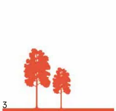
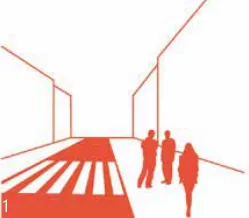
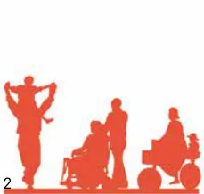
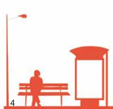
Schemi e indirizzi progettuali
1. Riequilibrio tra carreggiata e marciapiede
2. Sicurezza per gli utenti della strada
3. Piantumazione per miglioramento microclima
4. Arredo urbano
1
2
3
4
Disassamenti di corsia
Rialzare l’attraversamento
Alternare le estensioni del marciapiede in modo tale da definire un percorso ad “S”, è un utile
espediente per abbassare la velocità veicolare.
Il dosso o attraversamento rialzato riduce la velocità veicolare, moderandola in prossimità di un
passaggio pedonale.
Lmin (no TPL) = 4-5m
Lmin (TPL) = 7m
Riferimento schemi:
1.Global street design guide, Global Designing Cities Initiative&National Association of City Transportation Officials (2016)i
Lmin (no TPL) = 4-5m
Lmin (TPL) = 7m
Compattare l’intersezione - riduzione angoli di svolta
Rialzare (evidenziare) l’intersezione
Ridurre al minimo le dimensioni del raggio di curvatura permette un abbassamento della velocità di
svolta, una maggiore visibilità e quindi incroci più compatti e sicuri.
Rialzare ed evidenziare le aree di intersezione permette la moderazione del flusso automobilistico
garantendo sicurezza per tutti gli utenti della strada e contribuisce all’eliminazione delle barriere
architettoniche. *Soluzione da relazionare con tipo di strada/rilevanza nella rete stradale.
Nota:
Le intersezioni devono consentire le svolte e il passaggio inostacolato dei mezzi consentiti per tale strada.
Riferimento schemi:
I raggi di curvatura modificati sono soggetti alle verifiche con apposito software e, prima della costruzione, alla prova su strada con
1.Global street design guide, Global Designing Cities Initiative&National Association of City Transportation Officials (2016)
il mezzo rilevante.
Aumentare lo spazio pedonale
Estendere i marciapiedi in prossimità degli incroci migliora la pedonabilità, riducendo di conseguenza la
velocità di svolta veicolare, e contribuisce a creare un ambiente qualitativamente migliore.
ST.PS.4.5.7
SCENARIO 3.1
“Parma alta capacità”
Luoghi e Progetti Strategici
4.1.11
Scala
14.000
Aree pedonali, zone 30 e zone 20
PR050
Progetto Strategico Viabilistico del Centro Storico (CS)
1. Descrizione
La strategia del PUG PR050 ripensa la viabilità del tessuto urbano definito Centro Storico (CS) come evidenziato nello
“schema di assetto delle correlazioni, dotazioni e servizi” (ST.SAS.4.2). Attraverso una rappresentazione ideogrammatica
sono state indicate 2 aree. L’ambito che definisce il cosiddetto “castrum” (impianto urbano della Parma romana), nucleo
di antica formazione attraversato dalla via Emilia e con al centro piazza Garibaldi (figura 1), viene considerato come area
primaria da pedonalizzare progressivamente nel tempo e possibilmente ripensarne una sua sistemazione a livello di pavi-
mentazione e segnaletica. La restante parte racchiusa all’interno dei viali (Progetto Strategico “Green Ring”) viene indicata
coma zona 20.Lo sviluppo e inserimentento di tale limitazione è il risultato di un’importante evoluzione nella gestione della
mobilità all’interno delle città: in un contesto urbano particolare, caratterizzato dalla presenza di contenuti di rilievo come il
CS, anche in termini di compresenza di attività, programmi e usi (abitazioni, attività commerciali, uffici, scuole, servizi ecc.) e
da un’elevata presenza (anche potenziale) di pedoni, è possibile favorire la coesistenza tra i diversi vettori di mobilità e uten-
ti, a vantaggio di una maggiore sicurezza e di una maggiore attrattività e fruibilità dello spazio pubblico (le strade). Il PUG
definisce le zone 20 come “aree d’incontro” in cui:
1. Analisi e Diagnosi Preliminare:
•
Rilievo dettagliato dell’area con mappa-
tura delle emergenze archeologiche e
urbanistiche esistenti;
•
Studio della viabilità attuale, dei flussi
pedonali e veicolari;
•
Analisi microclimatica per individuare le
isole di calore urbane e i punti di criticità.
•
Inventario delle superfici impermeabili e
delle aree potenzialmente convertibili in
spazi verdi.
2. Interventi di Mobilità e Viabilità:
•
Riduzione del traffico veicolare privato,
con creazione di percorsi pedonali e cicla-
bili che attraversano il castrum;
•
Definizione di aree di parcheggio limitato
e incentivazione all’uso di mezzi pubblici e
condivisi;
•
Realizzazione di pavimentazioni drenanti
che richiamano le geometrie originarie del
castrum.
•
la velocità massima consentita è di 20 km/h;
•
i pedoni possono utilizzare l’intera area di traffico e hanno la precedenza rispetto ai veicoli;
•
i pedoni non possono ostacolare inutilmente la circolazione dei veicoli;
•
il parcheggio è permesso unicamente nei luoghi designati e demarcati;
•
lo scopo è moderare in modo incisivo il traffico veicolare senza tuttavia impedirlo del tutto. Coerentemente
le zone con limite di velocità massimo di 30 km/h e le “zone d’incontro” (o zone 20) dovrebbero essere
disciplinate e definite nel dettaglio attraverso specifici piani di settore (PUMS, PGTU) disposizioni, requisiti
tecnici e legali necessari per la messa in opera di una zona d’incontro. Un’ordinanza consente di introdurre
limitazioni a 20 km/h all’interno delle aree individuate e, di regola, su strade di interesse locale (orientate
all’insediamento), dove la necessità di relazioni trasversali alla strada è elevata e dove appare ampiamente
giustificato favorire l’uso misto dello spazio stradale (per esempio in zone centrali o dove la presenza di pedoni
è importante). Le strade principali, prevalentemente orientate al traffico, possono essere incluse in zone
d’incontro solo in via eccezionale, ad esempio:
•
su strade dove i flussi di traffico sono contenuti e il traffico di transito può beneficiare di altri percorsi attrattivi
e funzionali;
•
in particolari situazioni locali, come nei centri delle località e nei centri storici;
•
dove è presente un importante flusso di pedoni e dove la necessità di un utilizzo condiviso dello spazio
pubblico prevale sulle necessità di viabilità, come ad esempio in corrispondenza di edifici di forte interesse e
richiamo pubblico (stazioni, piazze, luoghi di aggregazione svago ecc.) oppure davanti a una scuola;
•
Si rileva che l’introduzione di una “zona d’incontro” su strade principali resta coerente con l’impostazione
generale del modello “50/30”, nel senso che tale modello lascia la possibilità di favorire la coesistenza tra
utenti diversi dello spazio pubblico nei comparti o settori del tessuto edificato dove tale necessità è giustificata
e riconosciuta, sia lungo strade di interesse locale, sia lungo strade principali.
3. Incremento delle Aree Verdi e Permeabili:
•
Creazione di giardini urbani e micro-parchi
ispirati al disegno del castrum, con inseri-
mento di aree a prato permeabile;
•
Rimozione progressiva di superfici asfal-
tate non necessarie e sostituzione con
materiali drenanti o zone verdi;
•
Introduzione di tetti verdi su edifici di nuo-
va costruzione o ristrutturazioni.
•
Creazione di spazi di sosta e aggregazio-
ne alberati.
4. Forestazione Urbana e Aumento delle Albe-
rature:
•
Piantumazione di alberi autoctoni lungo
i percorsi principali e nelle piazze interne
del castrum;
•
Creazione di “cinture verdi” lungo i confini
del castrum per mitigare l’effetto isola di
calore;
•
Utilizzo di specie vegetali che favoriscono
la biodiversità e garantiscono ombreggia-
mento;
•
Piani di manutenzione e irrigazione effi-
ciente per garantire la sopravvivenza delle
nuove alberature.
2. Criteri ri-generativi e tipologia di intervento
I criteri rigenerativi e le tipologie di intervento previsti dal PUG PR050 trattandosi di un progetto di città pubblica si inseri-
scono in una strategia urbana qualificante, che tiene conto delle indacazione del PUMS e che ripensa la viabilità del Centro
Storico (CS) in un’ottica di sostenibilità e valorizzazione dello spazio pubblico. L’approccio adottato tiene conto del conte-
sto urbano esistente, mirando a un equilibrio tra le esigenze di mobilità e la qualità della vita cittadina. La riorganizzazione
include interventi sulla pavimentazione, segnaletica e arredo urbano per migliorare la fruibilità e l’attrattività dell’area. Nelle
note a fianco viene riportato un regesto dettagliato delle varie modalità e approccio ai principi rigenerativi e di intervento
5. Valorizzazione Archeologica e Culturale:
•
Illuminazione artistica che valorizzi i reperti
archeologici durante la sera, creando
un’atmosfera suggestiva;
•
Installazione di pannelli informativi e realtà
aumentata per raccontare la storia del
castrum ai visitatori;
•
Organizzazione di eventi culturali e mercati
temporanei nelle aree verdi.
3. Disposizioni specifiche e Azioni
Tra le più importanti strategie urbane riferite al progetto strategico “Viabilità e Spazio Pubblico Centro Storico” rientrano
la qualificazione degli spazi pubblici, la progressiva limitazione di circolazione veicolare, la mitigazione dell’isola di calore
provvedendo a desigillazioni progressive di parti impermeabili a partire da strade che cambiano rango, l’avvio di processi
di economia circolare, di aumentare la presenza vegetative in aree storiche di pregio (anche in forma temporanea) senza
comprometterne la loro configurazione e aumentare la biodiversità nel centro storico.
Gli elementi vegetativi potranno essere associati a strutture di arredo urbano tra cui elementi per la seduta capaci di pre-
disporre atrezzature per la sosta di persone. In particolare, devono essere soddisfatte le condizioni di sostenibilità indicate
nella “Strategia” declinata dai 7 scenari e relative “Azioni”, qui richiamate: Strategia 3.1 - Azione 3.1.7/3.1.8 Favorire la pro-
liferazione di zone 30 e zone 20, e al contempo favorire opere di mitigazione ambientale per ridurre l’impatto di infrastrutture
stradali molto frequentate, riabilitando gli spazi interclusi. Strategia 3.2 - Azioni 3.2.3/3.2.4 Favorire la piccola produzione in
aree urbane e sostenere i processi di economia circolare e cicli virtuosi. Azione 3.2.7 Implementare le funzioni insediate con-
tribuendo al loro rafforzamento promuovendo interventi di mitigazinone e desigillazione”. Azione 3.2.9 Favorie una logistica
urbana sostenibile. Strategia 3.3 - Azione 3.3.1 Desigillazione, deimpermeabilizzazione, demiralizzazione dei suoli permeabili
e antropizzati. Azione 3.3.3 Favorire processi di regolazione e mitigazione dell’effetto “isola di calore”. Strategia 3.4 - Azio-
ne 3.4.1 Garantire la diffusione di una rete equilibrata di attrezzature e servizi. Strategia 3.4 - Azione 3.4.6 Qualificazione e
ridefinizione delle dotazioni, esistenti e proposte. Strategia 3.5 - Azione 3.5.3 Sviluppo del Distretto centrale (definizione
futura di città storica). Strategia 3.7 - Azione 3.7.1 Salvaguardare ed implementare la biodiversità. Strategia 3.7 - Azioni
3.7.3/3.7.4 Potenziare l’infrastruttura verde urbana. Sviluppare e costruire la “green infrastructure” a livello urbano e territo-
riale. Strategia 3.7 - Azione 3.7.8 Sviluppare in ambito urbano una nuova infrastruttura ecologicamente attiva.
6. Coinvolgimento della Comunità e Stakehol-
der:
•
Percorsi partecipativi con cittadini e asso-
ciazioni per la co-progettazione delle aree
verdi e dei percorsi;
•
Collaborazione con enti di tutela archeolo-
gica e ambientale;
•
Monitoraggio continuo degli interventi con
feedback periodici dalla comunità locale.
7. Monitoraggio e Valutazione:
•
Definizione di indicatori di successo (ridu-
zione delle temperature locali, incremento
delle aree verdi, aumento della biodiver-
sità);
•
Controllo periodico dello stato di avanza-
mento e della qualità degli interventi;
•
Piani di manutenzione integrata per garan-
tire la durabilità del progetto.
4. Vision e obiettivi
Le strategie individuate supportate dalle Azioni, richiamate precedentemente, concorrono al raggiungimento dei seguenti
obiettivi dichiarati nella Vision: 1 - Parma città della biodiversità; 3 - Parma città della mobilità condivisa e sostenibile;
6 - Parma città dello sviluppo e delle opportunità; 5 - Parma città della qualità dell’abitare e cura delle persone.
La trasformazione del “castrum romano” situato nel centro storico di Parma in una Zona 20 ha l’obiettivo di valorizzare l’im-
portante patrimonio storico e archeologico, favorendo al contempo la creazione di uno spazio urbano più sostenibile e resi-
liente. La Zona 20 (area a traffico moderato con velocità massima di 20 km/h) punta a migliorare la qualità della vita urbana,
incentivando la mobilità dolce, la socialità e la sostenibilità ambientale. Inoltre tale area “Zona 20” non solo restituirà alla
città un pezzo importante della sua storia, ma contribuirà anche a rendere il centro storico più vivibile, verde e sostenibile,
contrastando attivamente il fenomeno delle isole di calore e promuovendo una nuova cultura urbana.
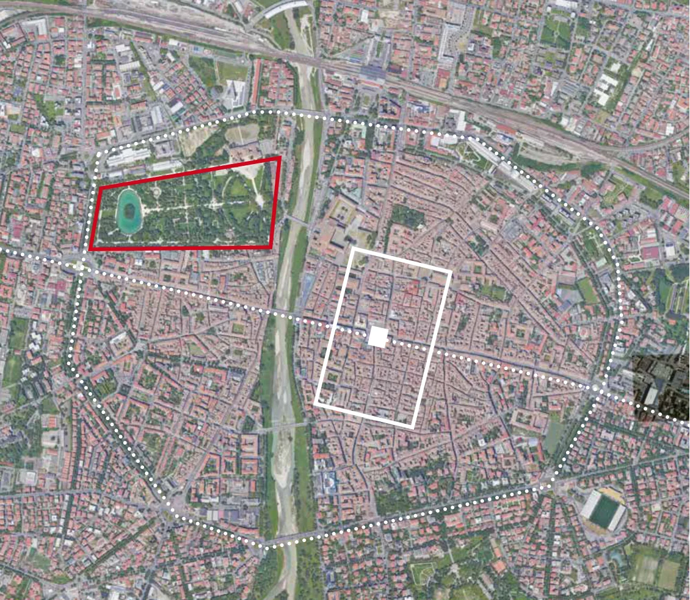
1. L’area pedonale del “Castrum” romano
attraversata dalla via Emilia viene comparata al
parco Ducale (rosso). In puntinato bianco viene
evidenziata l’area del Centro Storico definito
dal “Green Ring” (progetto strategico PUG
PR050) come ambito potenziale dove inserire
zone 20.
2. Immagine a lato: Area pedonale del “Castrum”
sovrapposta allo schema delle correlazioni e dei
servizi (ST.SAS. 4.2.3).
I viali ossia il “Ring verde” definisce l’area
di’interesse per lo sviluppo della mobilità
sostenibile del centro storico di Parma al cui
interno si evidenziano servizi e attrezzature
pubbliche di rilievo. Un sistema multicentrico alla
scala di quartiere in cui si evidenziano elementi
strategici tra cui il nuovo parco ecosistemico
del Parma ossia lo spazio definito dal torrente
Parma e compreso all’interno del Green ring:
nuovo dispositivo ecologico denominato parco
Parma. Entrambe le progettualità viabilistiche
dovranno essere testate e inserite in modo
progressivo, consentendo nell’area pedonale
l’attraversamento veicolare in alcune ore del
giorno e sempre ai mezzi di soccorso.
4.4.C.13
4.4.C.12
4.4.C.3
4.4.A.6
4.4.C.4
4.4.A.1
4.4.A.1
4.4.A.1
4.4.A.1
4.4.A.1
4.4.A.1
4.4.A.7
4.4.A.1
4.4.C.1
4.4.A.1
4.4.A.1
4.4.A.8
4.4.A.7
4.4.A.1
4.4.A.1
4.4.A.1
4.4.A.8
4.A.4
4.4.A.1
4.4.A.1
4.4.A.8
4.4.A.4
4.4.A.1
4.4.A.1
4.4.A.1
4.4.A.1
4.4.A.3
4.4.A.2
4.4.A.10
4.4.A.3
4.4.C.9
4.4.A.10
4.4.A.3
4.4.A.3
4.4.A.10
ST.PS.4.5.8
SCENARIO 3.3
“Parma Eco-city”
Luoghi e Progetti Strategici
4.3.4
Scala
1:2.500
Piazza Garibaldi e spazi pubblici pregiati
PR050
Verde Temporaneo: Parma Vivaio Mobile
1. Descrizione
Il “Verde temporaneo”1 è una nuova categoria di verde che introduce il PUG PR050 e che potrà essere sviluppato
nella città di Parma, inteso come sistema mobile che si contrappone a quello “fisso”, pensato per introdurre una
nuova forma di vivaio di tipo “mobile”, ossia, di ospitare piante in vaso, che trascorsi due anni possono trovare fissa
dimora in parti appropriate in città e nel paesaggio. Questo tipo di “verde” ha una duplice funzione, dotare degli spazi
rappresentativi e istituzionali (ma non solo) con alberature capaci di apportare nuovi contenuti estetici senza incidere
permanentemente e comprometterne i caratteri compositivi e visuali originali.
Allo stesso tempo saranno in grado di formare, attraverso concentrazioni discrete, zone ombreggiate e quindi diminu-
ire sensibilmente l’isola di calore senza quindi interferire con le visuali e la percezione dello spazio pubblico specifico.
La mobilità del Verde cosente di configurare differenti disposizioni all’nterno dello spazio di riferimento e quindi acco-
modare diverse esigenze rispetto all’uso dello spazio pubblico stesso.
1. Il concetto di “Verde Temporaneo”, intro-
dotto dal PUG PR050 per la città di Parma,
si configura come un’innovativa strategia di
mitigazione ambientale e valorizzazione dello
spazio pubblico, basata sulla mobilità della
vegetazione. Questo sistema, in contrappo-
sizione al verde fisso, prevede l’adozione di
piante in vaso che, dopo un periodo di due
o tre anni, possono essere ricollocate in aree
idonee del tessuto urbano o paesaggistico. Tale
approccio genera una soluzione dinamica per
l’integrazione del verde nella città, garantendo
sia un impatto estetico e ambientale positivo sia
la salvaguardia delle visuali e delle caratteristi-
che storiche dei luoghi. Il “Verde Temporaneo”
rappresenta un modello di gestione innovativo
per la città di Parma, capace di coniugare la
necessità di verde urbano con la tutela dei suoi
spazi storici e architettonici. Questa soluzione
consente di migliorare la qualità della vita
dei cittadini senza alterare il tessuto urbano
consolidato, favorendo un approccio flessibile,
sostenibile e adattivo alla gestione dello spazio
pubblico. Il progetto, oltre a rispondere a
esigenze climatiche e ambientali, diventa così
un’opportunità per ridefinire il ruolo del verde
nella città contemporanea, trasformandolo in un
elemento dinamico e rigenerativo.
Piazza Garibaldi è uno spazio che viene esplicitato dal suo perimetro. Esso definisce e allo stesso tempo costruisce
una “quinta” urbana di grande prestigio. Un perimetro e “scenografia urbana” fatta di edifici appartenenti ad epoche
storiche differenti e da valori materici importanti.
Piazza Garibaldi insieme a pochi altri luoghi nella città storica non può essere pensato come uno spazio dove pian-
tumare alberi o arbusti dall’alto fusto, perchè ostacolerebbero la vista e nasconderebbero, compromettendo il vero
valore di questo spazio. Per questo motivo il PUG propone l’utilizzo di “vegetazione mobile” o “Verde temporaneo”
in alcuni spazi della città (non solo nel centro storico). Questo lo si può ottenere attraverso l’utilizzo di piante, arbusti
e alberi su vaso che potrebbero fungere da arredo urbano qualora vi fossero contenitori con dispositivi per la seduta.
Il principio qui indicato segue le linee guida della strategia per aumentare la natura in città senza comprometterne le
qualità. Questo favorisce l’attrattività, ma allo stesso tempo diventando un dispositivo per diminuire sensibilmente
(almeno in alcune parti della piazza) l’effetto isola di calore. La possibilità di muovere costantemente la distribuzione
degli alberi su vaso consente di riconfigurare la piazza come fosse un “set” cinematografico in cui la natura diventa il
soggetto protagonista.
Questo progetto propone quindi una cernita di tutti gli spazi dove si può e deve inserire del verde in modo stabile e
fisso, e dove invece conviene utilizzare il verde mobile “temporaneo”. Il “verde temporaneo” sarà una nuova categoria
di “verde” nella città di Parma.
Il verde temporaneo può assumere in questo contesto le sembianze di un “vivaio urbano” in continua evoluzione.
Dopo 2/3 anni le piante e gli alberi invasati posso essere trapiantati lungo strade, nei parchi o altri luoghi in modo per-
manente ma avendo assolto il compito di mitigare aree senza comprometterne le qualità estetiche.
Inoltre il progetto strategico di “verde temporaneo” potrà essere esteso ad altre parti di città, per esempio, in corri-
spondenza di tratti di canali esistenti, oggi tombati, come “segni” storici da conservare e valorizzare nell’ambito degli
spazi pubblici della città.
2. Gli elementi vegetali saranno collocati in con-
tenitori mobili progettati per armonizzarsi con
il contesto urbano, alcuni dei quali potranno
integrare dispositivi per la seduta e altre funzioni
di arredo urbano. La presenza di alberature
temporanee creerà zone d’ombra funzionali alla
riduzione del surriscaldamento degli spazi aperti
senza compromettere le visuali architettoniche
e monumentali, inoltre la possibilità di spostare
le piante consente di modificare l’assetto dello
spazio pubblico in funzione delle necessità
stagionali, degli eventi o delle dinamiche di
fruizione cittadina. Le piante che raggiungono la
maturità verranno progressivamente trapiantate
in aree verdi permanenti, come parchi, viali albe-
rati e altre zone urbane carenti di vegetazione.
Estensione del modello ad altri contesti urbani: il
principio del “Verde Temporaneo” potrà essere
applicato anche in aree periferiche, lungo i
tracciati dei canali urbani tombati, come ele-
mento di valorizzazione del patrimonio storico e
ambientale della città.
2. Criteri ri-generativi e tipologia di intervento
Il “Verde Temporaneo” si inserisce in un più ampio processo di rigenerazione urbana che mira a: 1.*Riduzione dell’isola
di calore urbana: le alberature mobili, posizionate strategicamente in punti critici della città, contribuiscono a mitigare
l’innalzamento delle temperature e a migliorare il microclima locale. 2. Incremento della biodiversità urbana: l’utilizzo di
essenze vegetali differenziate, compatibili con l’ecosistema locale, favorisce la presenza di insetti impollinatori e altre
specie utili. 3. Flessibilità dell’uso dello spazio pubblico: grazie alla mobilità delle piante in vaso, è possibile riconfigurare
l’assetto urbano a seconda delle esigenze funzionali, culturali e sociali. 4. Miglioramento del benessere urbano: la pre-
senza di aree verdi, anche temporanee, contribuisce a migliorare la qualità dell’aria e il comfort visivo e psicologico dei
cittadini. 5. Sostenibilità del verde: il progetto si configura come un vero e proprio “vivaio urbano” in continua evoluzio-
ne, evitando l’abbattimento di piante per ragioni di incompatibilità spaziale e permettendo il reimpiego del verde in altre
aree della città. Per quanto riguarda la modalità e tipologia d’intervento in questo caso il progetto prevede l’adozione di
specifiche strategie per la gestione e la collocazione del “Verde Temporaneo”2.
3. Disposizioni specifiche e Azioni
Tra le più importanti strategie urbane riferite al progetto strategico “verde temporaneo/vivaio mobile” rientrano la
qualificazione degli spazi pubblici, la mitigazione dell’isola d calore, l’avvio di processi di economia circolare, di au-
mentare la presenza vegetative in aree storiche di pregio senza comprometterne la loro configurazione e aumentare la
biodiversità nel centro storico.
Gli elementi vegetativi potranno essere associati a strutture per la seduta capaci di predisporre atrezzature per la sosta
di persone. In particolare, devono essere soddisfatte le condizioni di sostenibilità indicate nella “Strategia” declinata
dai 7 scenari e le relative “Azioni”, qui richiamate:
Strategia 3.1 - Azione 3.1.7/3.1.8 Favorire la proliferazione di zone 30 e zone 15, e al contempo favorire opere di miti-
gazione ambientale per ridurre l’impatto di infrastrutture stradali molto frequentate, riabilitando gli spazi interclusi. Stra-
tegia 3.2 - Azioni 3.2.3 /3.2.4 Favorire la piccola produzione in aree urbane e sostenere i processi di economia circolare
e cicli virtuosi. Azione 3.2.9 Favorie una logistica urbana sostenibile. Strategia 3.3 - Azione 3.3.3 Favorire processi di
regolazione e mitigazione dell’effetto “isola di calore”. Strategia 3.4 - Azione 3.4.1 Garantire la diffusione di una rete
equilibrata di attrezzature e servizi. Strategia 3.4 - Azione 3.4.6 Qualificazione e ridefinizione delle dotazioni, esistenti e
proposte. Strategia 3.5 - Azione 3.5.3 Sviluppo del Distretto centrale (definizione futura di città storica). Strategia 3.7 -
Azione 3.7.1 Salvaguardare ed implementare la biodiversità. Strategia 3.7 - Azioni 3.7.3/3.7.4 Potenziare l’infrastruttura
verde urbana. Sviluppare e costruire la “green infrastructure” a livello urbano e territoriale. Strategia 3.7 - Azione 3.7.8
Sviluppare in ambito urbano una nuova infrastruttura ecologicamente attiva.
4. Vision e gli obiettivi del Piano
Le strategie individuate supportate dalle Azioni, richiamate precedentemente, concorrono al raggiungimento dei se-
guenti obiettivi dichiarati nella Vision: 1 - Parma città della biodiversità; 6 - Parma città dello sviluppo e delle oppor-
tunità; 5 - Parma città della qualità dell’abitare e cura delle persone.
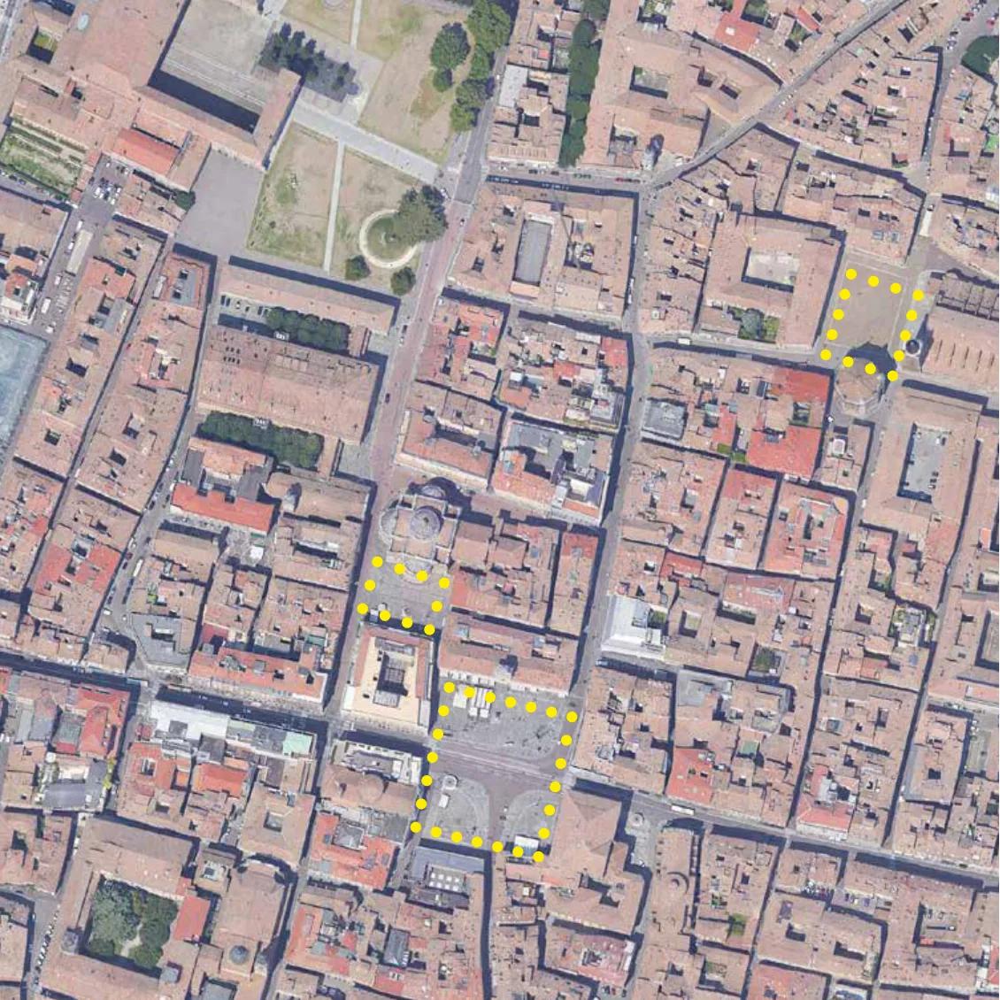
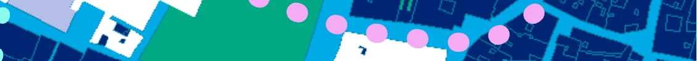
Gli ambiti evidenziati insieme a Piazza
Garibaldi possono attuare dei progetti di verde
temporaneo e trasformarsi in “vivai urbani” in
cui far crescere alberature di varie dimensioni
(per un periodo non superiore ai due anni) per
poi essere trapiantate in parti specifiche della
città. Il progetto del verde temporaneo passa
anche attraverso la possibilità di coltivare
in città i futuri alberi apportando benefici di
comfort ambientale ed estetici.
In azzurro sono evidenziati gli spazi pubblici e
in blu gli isolati urbani. In giallo si ipotizzano
possibili aree dove inserire il verde temporaneo.
In bianco gli edifici e servizi pubblici.
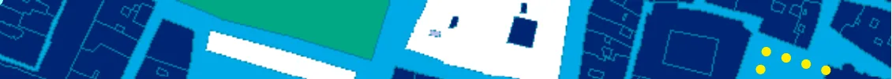
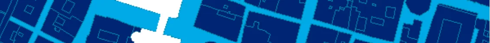
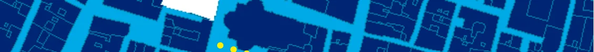
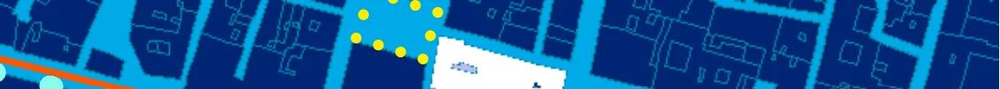
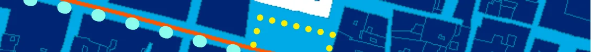
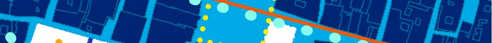
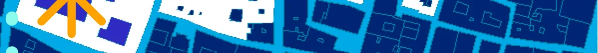
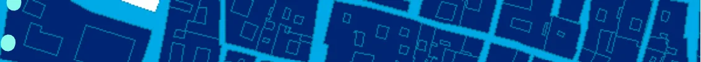
ST.PS.4.5.9
SCENARIO 3.6
“Super Parma”
Luoghi e Progetti Strategici
4.6.1
Scala
La “Superquadra”: il “bioparco” di Parma
PR050
1. Descrizione
Il “fuso” definito a nord dall’autostrada del sole (A1) insieme alla linea ferroviaria dell’alta velocità e la via Emilia a
sud costituisce una “strip” territoriale di notevole interesse (vedasi a tale riguardo lo “Schema di assetto strategico
strutturale - ST. SAS.4.2.1”). All’interno di esso si collocano altre infrastrutture di rilievo a partire dall’aeroporto, la linea
ferroviaria e la “tangenziale nord”, alle quali si alternano brani di città, piccoli insediamenti dispersi, tessere industriali
ed edifici della logistica di grande portata come l’interporto di Fontevivo. Ma troviamo anche pezzi di campagna e
natura. E’ proprio questa frammistione di “elementi” che rende questa fascia così attraente. L’area contiene una ricca
diversità di elementi alcuni naturali di grande portata, come il Torrente Taro e la fascia di connessione ambientale ad
esso riferito, aree di biodiversità e zone di tutela della struttura centuriata (art. 21 del PTPR - Zone ed elementi di inte-
resse storico ed archeologico). L’aeroporto di Parma è posizionato a est, ortogonalmente rispetto le due infrastrutture
di riferimento e allo stesso tempo si posiziona a nord ovest della città, nelle immediate vicinanze del centro storico.
Questa vicinanza lo rende una peculiarità importante e strategica per la città di Parma, che dovrebbe essere valorizza-
ta da un punto di vista di funzionalità urbane e accessibilità.
La “Superquadra”, quindi, è in una posizione unica e strategica, definita da sistemi infrastrutturali di diverso livello.
A nord l’A1 con la linea alta velocità a sud la via Emilia che con la linea ferroviaria definisce a sua volta un altra “strip”,
a ovest il torrente Taro e l’interporto di Fontevivo mentre a est si trova l’aeroporto, il quale in una versione aggiorna-
ta, dovrebbe potenziare lo scalo passeggeri ed contestualmente pensare ad una nuova relazione, eventualmente più
“dinamica” con la città.
1. “A city or ecosystem, or complex structure
of any kind, is sustainable if its conditions of
production do not destroy over time the condi-
tions of its reproduction”; (Manuel Castells,
2000, definisce il concetto di sostenibilità).
2. Massimo Cacciari, “La città“, Pazzini
Editore ... “Allora i luoghi non possono essere
quelli della Polis greca e nemmeno quelli della
metropoli industriale. Dobbiamo inventare dei
nuovi luoghi che siano questa volta connessi
alle mobilità.
Il corpo umano è un luogo e ha bisogno di luo-
ghi. A meno che la città post metropolitana non
voglia metamorfosi in anime che non hanno
bisogno di luoghi fisici.
La “Superquadra” è stata pensata come ambito di riferimento per sperimentare forme alternative di attività legate
all’agricoltura, al paesaggio, all’agrifotovoltaico, all’agroecologica, alla produzione integrata circolare e all’ agricoltura
rigenerativa, ossia capace di invertire l’esaurimento delle risorse naturali causato dall’agricoltura industriale a favore
della sostenibilità1. L’agricoltura rigenerativa punta inoltre ad ottenere un terreno in salute per gli anni a venire, ad au-
mentare la biodiversità, ripristinare l’equilibrio tra gli ecosistemi e mitigare il cambiamento climatico. La “Superquadra”
definisce il “bioparco” della città-territorio3.
3. Il concetto di sostenibilità riprende la defi-
nizione precedente (1), continuando: “so it is
sustainable when the creations do not have a
negative influence on the balance of the physi-
cal, social, economic and environmental state.
The Brundtland commission stated that sustain-
ability means that it ensures that development
meets the needs of the present generation
without compromising the future generations in
their own needs (WCED, 1987).
Quindi un’area con ottimi collegamenti con l’hinterland, nelle immediate vicinanze di un interporto di grandi dimensioni
(Fontevivo) e collegato alla rete autostradale e ferroviaria che potrebbe collegarsi al retroporto di La Spezia a sud
lungo il Taro. Ciò fornisce molte sinergie e vantaggi ambientali. In questo modo, le aziende di entrambi i siti possono
utilizzare la “superquadra” per funzioni a valore aggiunto. In generale la “superquadra” sarà il luogo dell’industria
innovativa e produzione dall’alto valore aggiunto. Allo stesso tempo si potranno ottenere vantaggi anche nel campo
della gestione del bioparco incluso all’interno.
Il piano PR050 individua la “Superquadra” come un dispositivo territoriale di nuova formazione, al cui interno si trova
declinato, un nuovo concetto di luogo urbano, rurale e ambientale; il primo “Bioparco” della città-territorio (della post-
metropoli) emiliana. L’ambito individuato dalla Superquadra è un area da riservare alla produzione quantitativa legata
al soddisfacimento della richiesta di produzione di cibo in caso di necessità rendendo Parma autosufficiente dal punto
di vista alimentare e quindi capace di provvedere in caso di emergenza alla produzione e distribuzione di cibo ai propri
abitanti
Il bioparco agricolo stabilisce una nuova modalità di agricoltura sostenibile con possibilità di sperimentare nuove for-
me di coltivazione e produzione, stoccaggio e vendita in collegamento con il Parma Food Port (struttura che aggiorna
e implementa il mercato agroalimentare esistente nella zona annonaria), EXPO e le aree commerciali a est.
La fascia a sud compresa tra la via Emilia e la ferrovia potrà ospitare forme produttive di media dimensione e capacità,
tali da compensare mancanze in termini di settori, diversificando l’offerta necessaria per essere apprezzata dal merca-
to. Lungo l’autostrada viene previsto il KM Verde, opera di mitigazione e parte integrante della “Green Infrastructure”
per abbattimento degli agenti inquinanti derivanti dal traffico veicolare dell’autostrada A1.
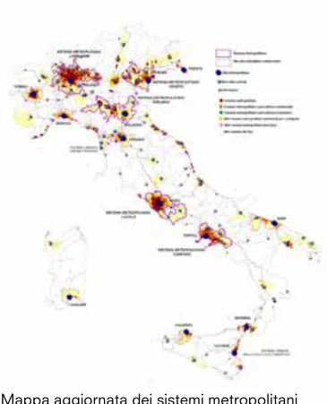
2. Criteri ri-generativi e tipologia di intervento
La Superquadra rappresenta l’opportunità reale (senza precludere ad altre parti del territorio di cambiare) per atti-
vare un’agricoltura circolare nel territorio parmense. È evidente la necessità di organizzare diversamente il sistema
agroalimentare. L’agricoltura circolare produce il minor numero possibile di rifiuti, l’emissione di sostanze nocive è la
più ridotta possibile e le materie prime e i prodotti finali vengono utilizzati con il minor numero possibile di perdite; in
poche parole sostenibile2. L’agricoltura circolare riveste un ruolo strategico. Il Piano PR050 svolge un’esplorazione
spaziale sulle opportunità per sviluppare l’agricoltura circolare nell’ambito definito “Superquadra”. In questo ambito il
piano favorisce l’insediamento di attività virtuose legate allo sviluppo agricolo di nuova concezione capace di costruire
un nuovo paesaggio produttivo, educativo, ricreativo e naturalisto allo stesso tempo. Del resto, gli obiettivi dell’agri-
coltura circolare possono essere raggiunti attraverso percorsi sostanzialmente diversi, dall’intensivo all’estensivo, dal
piccolo al grande, dal low-tech all’high-tech. Esistono percorsi che si rifanno all’agricoltura dei tempi lenti, oppure altre
forme di agricoltura ipermoderne e tecnologiche che fanno un uso più intelligente del suolo, dei flussi energetici e dei
materiali di scarto. Sulla base delle cosiddette “tessere agricole”, vengono visualizzate forme di agricoltura (circolare)
adatte al suolo. A seguito di questi elementi costitutivi, è stata quindi delineata una stimolante prospettiva di sviluppo
della superquadra che potrebbe istituire un futuro paesaggio agricolo circolare.
Favorire la formazione di un territorio sperimentale legato a nuove forme produttive legate alla natura, all’agricoltura e
alla produzione energetica “pulità” e/o da fonti rinnovabili (agrofotovoltaico) è una priorità del Piano PR050.
La valorizzazione del sistema centuriato e il reticolo idrico da integrare nel ciclo virtuoso di utilizzo dell’acqua nella
superquadra può generare la definizione di un nuovo tipo di paesaggio produttivo attivando sistemi circolari di produ-
zione e distribuzione di prodotti agricoli e naturali.
La Superquadra favorisce Il riuso degli scarti prodotti dalle coltivazioni e piante al fine di fertilizzare il suolo e aumen-
tarne le qualità minerali e la proliferazione dei filari come segmenti di biodiversità del nuovo paesaggio.
Mappa aggiornata dei sistemi metropolitani
e urbani in Italia (elaborazioni Cresme su dati
ISTAT, 2016). http://www.cittasostenibili.it/html/
scheda%2016/scheda_16.htm
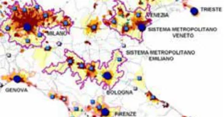
Dettaglio mappa dei sistemi metropolitani e
urbani in Italia. (vedi sopra)
3. Disposizioni specifiche e Azioni
Tra le più importanti strategie urbane riferite all’ambito di trasformazione rientrano l’insediamento di forme alternative di
sviluppo ambientale con attenzione alla rigenerazione del suolo inteso come bene non riproducibile. Questo, da attuarsi
anche attraverso strategie che prevedono l’insediamento di nuove forme di produzione agricola, il contestuale sviluppo
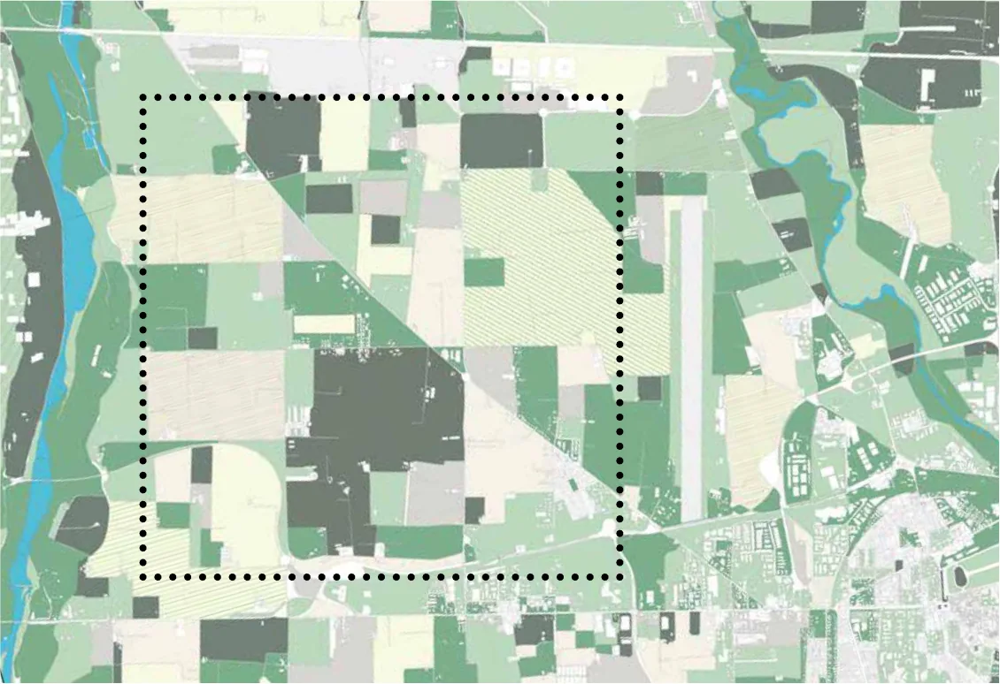
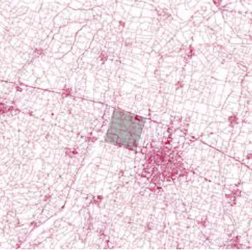
Sopra: Immagine da DTB regionale con
evidenziata la “Superquadra” all’interno
del fuso definito dall’autostrada A1 e AV
con la via Emilia a sud.
A lato: ambito interno della “Superqua-
dra” indicato come il futuro Bioparco di
Parma. L’immagine a lato sotto evidenzia
le fasce perimetrali della “Superqua-
dra”. La strip nord si configura come un
sistema misto produttivo, commercia-
le, espositivo, mentre quello a sud si
configura per vicinanza e vocazione alle
infrastrutture presenti come area legata
ad una articolazione produttiva urbana e
processi di mixitè.
Edificio
Stazione
Alta
Capacitá
E X P O
Logistica
dei servizi
Aeroporto
AEROPORTO
passeggeri
cargo
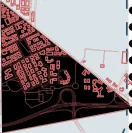
Interporto
Fontevivo
interporto
Fontevivo
Lore
Fascia 2
Logistica tipo
dell’eco-rete ecologico-ambientale, urbana e territoriale, la mitigazione dei rischi ambientali e la transizione energetica
oltre all’avvio di processi di economia circolare.
Gli interventi devono concorrere alla definizione di un nuovo “campione” territoriale. Devono essere realizzate le infra-
strutture per l’urbanizzazione degli insediamenti, ivi compresi i parcheggi pubblici previsti per ogni uso e le eventuali
opere di loro adeguamento come correlate agli interventi stessi. In particolare, devono essere soddisfatte le condizioni
di sostenibilità indicate nella “Strategia” declinata dai 7 scenari e le relative “Azioni”, qui richiamate:
Strategia 3.1 - Azione 3.1.1 Favorire la proliferazione di infrastrutture “smart mobility” con scambio mezzo, soprattutto
nei parcheggi pubblici. Azione 3.1.2 Aeroporto da sviluppare in rapporto sinergico e in relazione con la città, aumentan-
done l’accessibilità e i collegamenti da e per la città storica. Strategia 3.1 - Azioni 3.1.4/3.1.9/3.1.13 Nuove linee struttu-
rali TP (Trasporto Pubblico). Strategia 3.1 - Azione 3.1.10 Estendere, implementare e gerarchizzare la rete ciclabile urba-
na e territoriale. Strategia 3.2 - Azione 3.2.4 Sostenere i processi di economia circolare e cicli virtuosi, con il riciclo dei
rifiuti e valorizzazione delle filiere corte. Strategia 3.2 - Azione 3.2.5 Favorire l’insediamento di aziende innovative e pro-
muovere centri dell’innovazione. Nel caso specifico della superquadra eventuali nuovi insediamenti produttivi altamente
sostenibili devono essere dislocati nel fuso nord lungo l’autostrada A1 oppure nel fuso sud tra la linea ferroviaria e la via
Emilia. Altre forme insediative possono essere inserite all’interno se altamente compatibili con le attività di rigenerarione
rurale e ambientale (agrifotovoltaico, serre autosufficienti, agricoltura biodinamica e coltivazioni idroponiche). Strategia
3.2 - Azione 3.2.11 Favorire flessibilità burocratiche per sviluppo di dispositivi a favore dell’ambiente e all’efficientamen-
to degli edifici produttivi e commerciali. Strategia 3.3 - Azioni 3.3.3/3.3.4 Introduzione di misure finalizzate all’adat-
tamento climatico degli edifici, Mitigare l’esposizione agli inquinanti anche acustici e a rischi antropici. Strategia 3.3
- Azione 3.3.6 Rendere accessibili i servizi energetici a basso impatto ambientale Strategia 3.3 - Azione 3.3.9 - Favorire
il riciclo e la diminuzione di rifiuti. Strategia 3.4 - Azione 3.4.1 Diffusione di una rete equilibrata di attrezzature e servizi di
qualità. Strategia 3.4 - Azione 3.4.12 Sviluppo di percorsi ciclo pedonali, sentieri e ippovie alla scala territoriale. Stra-
tegia 3.6 - Azioni 3.6.5/3.6.9 Sperimentare nuove forme di “working & living” e sviluppo di attività produttive innovative
nel fuso tra ferrovia e via Emilia. Strategia 3.6 - Azione 3.6.10 Potenziare EXPO in connessione con AV (nel caso venisse
deciso) e l’area che scorre lungo l’autostrada lato sud. Strategia 3.7 - Azione 3.7.1/3.7.2 Salvaguardare ed implementa-
re la biodiversità e sviluppare la matrice ecosistemica valorizzando la centuriazione ove presente. Strategia 3.7 - Azione
3.7.5 Migliorare la qualità delle acque di falda e quelle superficiali. Strategia 3.7 - Azione 3.7.9 Sviluppare e favorive
pratiche sperimentali di agricolura estensiva. Strategia 3.7 - Azione 3.7.11 Favorire l’espansione delle aree naturalistiche
protette.
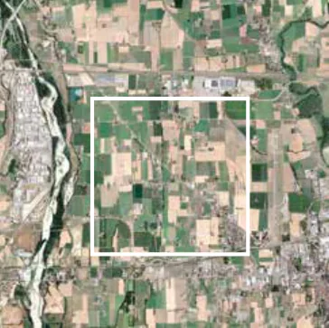
4. Vision e gli obiettivi del Piano
Le strategie individuate supportate dalle Azioni, richiamate precedentemente, concorrono al raggiungimento dei
seguenti obiettivi dichiarati nella Vision: 1 - Parma città della biodiversità; 6 - Parma città dello sviluppo e delle
opportunità; 7 - Parma città dell’agricoltura come patrimonio storico-ambientale e socio-culturale; 8 - Parma città
capitale del cibo e dell’alimentazione sostenibile; 9 - Parma città dell’energia rinnovabile.
Vista planimetrica della “Superquadra”. L’area
dell’ambito misura circa 1.260 ha.
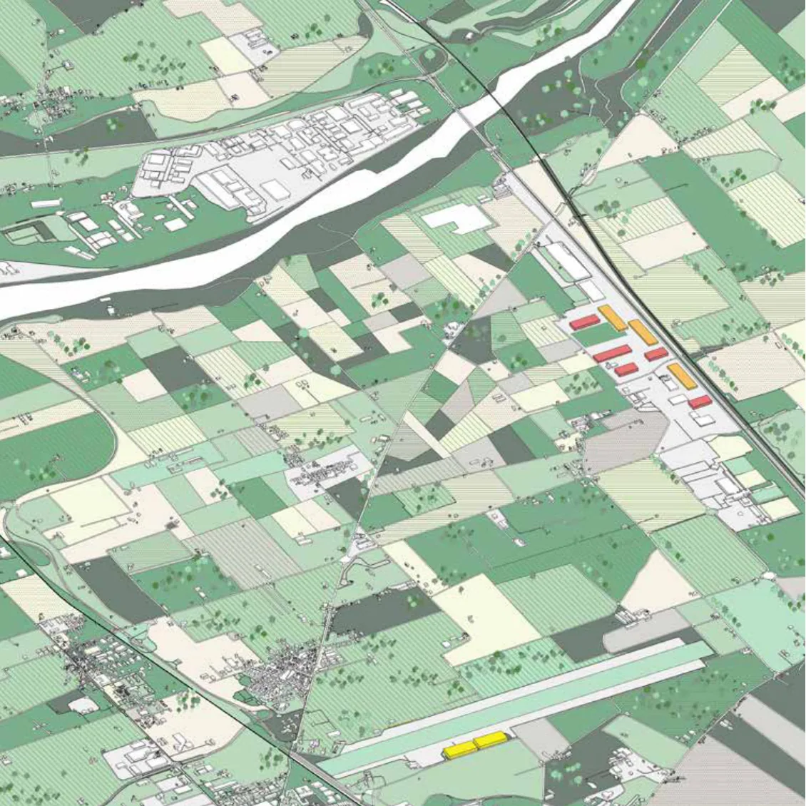
A fianco: immagine tridimensionale
dell’ambito referente alla “superquadra”.
ST.PS.4.5.10
SCENARIO 3.1
“Parma alta capacità”
Luoghi e Progetti Strategici
4.1.18
Scala
Dalla fermata “Alta Velocità” allo “Smart Mobility Hub”
PR050
1. Descrizione
La stazione ferroviaria è un luogo speciale. È un luogo della città, snodo di più reti dove passano ogni giorno migliaia
di viaggiatori. La società nel futuro, sarà sempre più connessa e nel caso specifico della stazione i viaggiatori, traspor-
tatori, residenti locali e utenti “abiteranno” letteralmente l’infrastruttura stazione. La stazione cambia continuamente.
(...) I viaggiatori vogliono “cambiare” più comodamente. I governi nazionali hanno piani climatici sempre più ambiziosi
e la transizione energetica avverrà anche nelle stazioni. Per fornire una risposta adeguata a questi cambiamenti, le
stazioni subiranno nuovamente una metamorfosi nei prossimi anni. Infatti la stazione ferroviaria alta velocità di Parma
potrà essere più di una stazione, un luogo, un pezzo di città/urbanità capace di attivarsi all’occorrenza anche come
stazione. La nuova fermata infatti potrà trasformarsi da “stazione” Alta Velocità ad “luogo ad alta capacità”, ossia con
la possibilità di ospitare funzioni e programmi capaci di trasformarla in un cluster unico per caratteristiche e relazioni
con il contesto in cui viene collocata (superquadra). La vicinanza non solo all’aeroporto ma anche all’expo con il
“fuso” urbanizzato lungo l’autostrada e alla “superquadra” (giardino della metropoli emiliana), rende questa stazione
un luogo del futuro.
Obiettivi specifici:
1. Complementarità con Reggio Emilia AV:
•
Posizionare la stazione come un hub spe-
cializzato nella connessione tra Alta Veloci-
tà, fiere internazionali e mobilità locale,
•
Offrire servizi che rispondano a bisogni
specifici di viaggiatori business e turisti
diretti alle Fiere di Parma, all’aeroporto e
alla città.
2. Sviluppo di uno Smart Mobility Hub:
•
Integrare tecnologie digitali per gestire
flussi di traffico, parcheggi e connessioni
intermodali;
•
Creare spazi dedicati a soluzioni di mo-
bilità condivisa, veicoli elettrici e navette
autonome.
Da questo punto di vista, il progetto strategico dello “smart mobility hub” (fermata AV), si inserisce nello scenario
“Parma alta capacità” e non può che essere un tentativo per capire i vantaggi, di riconoscere le potenzialità, per
andare oltre al pensiero di un’altro luogo capace di assolvere solamente alla funzione ferroviaria. L’operazione fon-
damentale è capire che questo luogo prima di essere landmark e far transitare i passeggeri è un dispositivo urbano e
territoriale.
3. Integrazione Territoriale e Connessione con
la Città:
•
Progettare la stazione come nodo strate-
gico di collegamento tra la città di Parma,
l’aeroporto Giuseppe Verdi e le principali
aree industriali;
•
Facilitare l’accesso ai visitatori delle fiere,
riducendo la congestione sulla rete locale.
Per questo motivo, il piano PR050 propone – prima ancora che un progetto – un modo di guardare la città, un impegno
a osservare, la possibilità non tanto di costruire un edificio ma di costruire un nuovo pezzo di città. In questo senso, la
sfida della stazione alta velocità è anzitutto una sfida geografica e relazionale.
Il mondo contemporaneo sollecita iniziative di nuovo corso e capaci di inserirsi esse stesse nell’era del cambiamento,
della transizione non solo ecologica, ma anche sociale ed economica. La nuova tecnologia consente già oggi di co-
struire e gestire le future “stazioni” in modo diverso. Le stazioni saranno delle “città nella città” clusters di programmi
aggregabili e trasformabili, saranno costruite con nuovi materiali e progettate in modo “circolare”, diventeranno più
“intelligenti” attraverso l’uso di sensori, genereranno la propria energia e formeranno un “cuscinetto” climatico per
l’ambiente. I cambiamenti tecnologici a cui riferiamo stanno andando a un ritmo molto veloce. Internet of Things,
Bio-economia, blockchain, intelligenza artificiale, nanotecnologia. Guardare avanti è fondamentale per non perdere
occasioni e poter scrivere un pezzo di storia urbana del XXI secolo.
4. Sostenibilità e Innovazione:
•
Puntare su un’architettura sostenibile con
soluzioni a basso impatto ambientale.
•
Prevedere la produzione di energia rinno-
vabile (pannelli solari, sistemi geotermici)
per alimentare la stazione.
5. Azioni Chiave:
•
Analisi di fattibilità: Studio di impatto eco-
nomico, territoriale e ambientale.
•
Collaborazione con stakeholder locali e
nazionali: Coinvolgimento di istituzioni,
enti fieristici e operatori ferroviari;
•
Progettazione Architettonica e Ingegneri-
stica: Creazione di un’icona architettonica
che rappresenti l’innovazione e l’identità
territoriale;
•
Fasi di sviluppo: Implementazione gradua-
le del progetto, con focus iniziale sulla
connessione con le Fiere di Parma.
Parma non è alternativa a Reggio Emilia, e non è neanche Reggio Emilia ad essere alternativa a Parma. Le due sono
complementari e non competono tra di loro, perchè sono fondamentalmente due cose concepite in modalità e tempi-
stiche differenti.
La stazione di Parma non potrà essere la stazione così come si è pensata nel passato anche recente. Essa è piuttosto
un’infrastruttura capace di trasformarsi in “spazio”. Le stazioni attuali sono spazi molto frequentati e poco vissuti
esattamente perchè assolvono alla funzione richiesta. La fermata di Parma AV avrebbe la possibilità di diventare uno
spazio frequentato e anche molto vissuto grazie alla capacità di “aggiornarsi” alle possibili necessità in relazione alle
funzione di grande portata come le Fiere di Parma. Uno spazio sinergico legato alla trasformabilità delle funzioni e alla
capacità di adattamento rispetto condizioni programmatiche necessarie e future (sistema resiliente).
Parma dovrebbe e deve puntare su un’altra idea di stazione ferroviaria. Il contesto nel quale potrebbe inserirsi con-
corre alla definizione di uno spazio che non assolve solamente al transito (come avviene per Reggio Emilia e le altre
stazioni) ma potrebbe e dovrebbe collegarsi alle attività “EXPO” tale da diventare un ambiente adattivo e resiliente
al cambiare delle condizioni e capace di rispondere a un quadro esigenziale che nel tempo sarà comunque chiamato
a cambiare. Per questo Parma non entra in competizione con Reggio Emilia e non diventa neanche la sua alternativa.
Essa può coesistere senza produrre conflitti e allo stesso tempo sarà capace di allargare la dotazione di luoghi innova-
tivi relativi al “cluster” fieristico e commerciale.
Emerge quindi la possibilità di configuare uno spazio “on demand” capace di attivarsi in momenti precisi (durante per
esempio eventi quali “cibus” etc.), ma anche, di essere in grado di vivere di vita propria e non solo attivarsi a seconda
delle necessità. Stiamo parlando di un nuovo archetipo urbano di “un’oasi urbana” capace di produrre energia per sè
e per le altre strutture quando necessario. Questo tipo di spazi saranno sempre più importanti nel contesto postmetro-
politano, capaci di offrire vantaggi e garantire nuovi servizi alla comunità in senso lato.
Una stazione così concepità, in un certo senso più “leggera” non ha bisogno di un bacino di utenza ma è in grado
di essere allo stesso tempo autosufficiente e capace di “scambiare” per osmosi servizi e ambienti necessari ad altri
scopi e programmi temporanei con le Fiere.
6. Benefici Attesi:
•
Aumento dell’attrattività del territorio per
eventi e fiere internazionali.
•
Riduzione dei tempi di viaggio e miglio-
ramento della connettività tra Parma e le
principali città italiane.
•
Rafforzamento del tessuto economico
locale attraverso nuove opportunità logi-
stiche e turistiche.
2. Vision Generale:
L’obiettivo è creare una “Hub Alta Velocità” a Parma, nella zona delle Fiere, con un approccio innovativo e comple-
mentare alla stazione Mediopadana di Reggio Emilia. Questo progetto mira a rafforzare l’accessibilità territoriale e
favorire la connessione con le infrastrutture fieristiche e produttive locali, senza entrare in competizione diretta con le
infrastrutture esistenti. Questo progetto rappresenta un’opportunità per proiettare Parma nel futuro della mobilità e
delle connessioni infrastrutturali, in linea con le esigenze di sostenibilità e innovazione che caratterizzano le città euro-
pee più avanzate.
A fianco: Diagramma tridimensionale della fu-
tura infrastruttura “Alta Capacità”. Piattaforma
che combina al proprio interno programmi,
spazi, luoghi e funzioni capaci di “reagire” a
necessità e futuri cambiamenti.
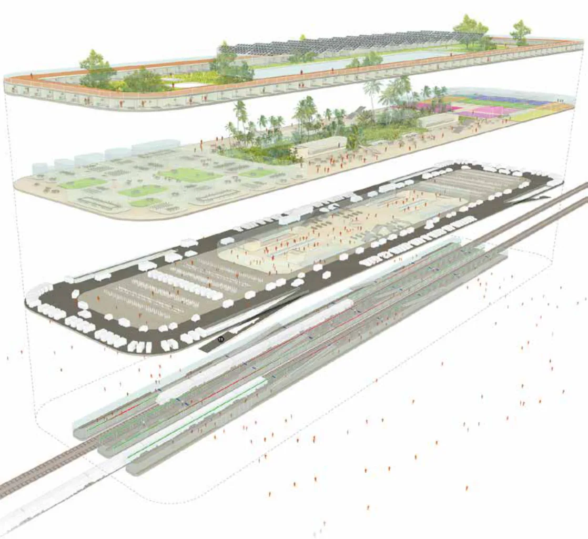
ST.PS.4.5.11
SCENARIO 3.2
“Parma città produttiva”
Luoghi e Progetti Strategici
4.2.1
Scala
PED - Parma Eco District e il Parco Centrale
PR050
1. Descrizione
Il Parma Eco District (PED) è localizzato in corrispondenza dell’area denominata SPIP e comprende anche la fascia ter-
ritoriale a sud dell’autostrada che include tra l’altro l’area “Chiesi”, l’area Barilla e l’insediamento commerciale (Ikea).
L’area in questione è attraversata dall’autostrada A1 e dalla linea ferroviaria dell’alta velocità (Bologna-Milano) ed è
ben collegata con l’area “fiere” e l’aeroporto; si trova nelle immediate vicinanze dell’ingresso autostradale. Inoltre l’a-
rea a nord dell’autostrada denominata SPIP (ora PED) s’inserisce in un paesaggio naturale e agricolo di grande pregio
dovuto dalla presenza di segni e tracce appartenenti alla centuriazione romana. Ciò fornisce molte sinergie e vantaggi
ambientali. Il Piano PR050 propone di sviluppare il comparto come un Eco Distretto (Parma Eco District), ossia, un di-
stretto capace di rispondere in modo adeguato alle necessità e alle sfide legate alla produzione, riducendo allo stesso
tempo le esternalità a favore di una trasformazione capace di rispondere efficacemente alla transizione energetica ed
ecologico ambientale.
Il Piano PR050 concepisce il Parma Eco District come “productive smart neighborhood”: un unico sistema generato
dall’integrazione tra 4 componenti strutturali: produzione, natura, sostenibilità e socialità. Il PED, per sua definizione,
sarà un comparto in grado di sviluppare una propria produzione e indipendenza energetica derivante da fonti non fos-
sili ad impatto zero. Inoltre, PR050 propone un sistema di aree verdi che funzionano da dispositivi ambientali, corridoi
ecologici, rain gardens, bioswales e “smart walls” per il miglioramento della qualità delle acque e dell’aria. Le aree
vegetative favoriscono la biodiversità e aumentano il comfort dello spazio urbano anche attraverso thermal-bus per la
climatizzazione di aree e percorsi pubblici. PR050 favorisce l’insediamento di un sistema di spazi per lo stoccaggio, il
riuso e il drenaggio delle acque meteoriche, per una loro regimentazione sostenibile, con l’obiettivo di una completa
invarianza idraulica dell’intera area. L’energia termica può essere interamente fornita mediante una rete di riscaldamen-
to e raffreddamento a partire da centrali tecnologiche alimentate da sistemi di scambio (connesse al fotovoltaico o
altre forme di produzione energetica da fonti rinnovabili). Alla scala architettonica il Parma Ecodistrict dovrà ridurre la
domanda energetica degli edifici a partire dalle caratteristiche fisiche delle masse e delle facciate perimetrali, dovrà
utilizzare materiali e colorazioni che permettano un alto albedo e quindi che riducano l’effetto isola di calore, materiali
catalitici ad alta percentuale di componente riciclata, integrare ricettori fotovoltaici nei sistemi di facciata e coperture;
materiali che riducano il tasso di smog ambientale. Come riportato nella scheda relativa al quartiere di appartenenza
(Unità Strutturale CS Martino - SPIP), il Piano prevede lo sviluppo di un masterplan specifico che dovrà prioritariamen-
te seguire le linee guida e indirizzi utilizzando il formato “DOCA” (Data, Opportunities, Challenges, Anecdotes) anzi-
chè “SWOT” (Strengths, Weaknesses, Opportunities, Threats) e definire i metabolismi capaci di innescare cicli virtuosi
circolari riguardo gli aspetti energetici, di riciclo e riuso dei rifiuti, degli scarti “verdi” da trattare in loco ad alto valore
aggiunto derivanti per la manutenzione del verde. Il Piano propone l’utilizzo delle coperture dei capannoni industriali
come un “territorio” e spazio disponibile per l’insediamento di coperture verdi e fotovoltaiche per la produzione di
energia elettrica da utilizzare in modalità condivisa e alternata così come indicato nel protocollo PED (Positive Energy
District). Parma Eco District potrà quindi diventare un produttore di energia “pulita” e costituire un “Parco Solare”
lungo l’autostrada del SOLE come continuazione della stessa infrastruttura.
Il conseguente parco solare sarà in grado di fornire energia elettrica e anche “calore” che eventualmente potrà essere
utilizzato come fonte di energia per altri scopi o edifici. Un sistema di mobilità “leggera” di attraversamento affian-
cherà la rete stradale esistente che dovrà essere ridimensionata a dovere, in grado di raccogliere le acque piovane
e smistarle nei futuri “water pounds” attivandone il filtraggio naturale e il possibile conseguente stoccaggio per il
riuso. Le sezioni stradali di tutto il comparto dovranno contemplare l’innesto di filari alberati soprattutto in presenza di
percorsi pedonali. Per questo motivo viene identificata via Forlanini come nuovo “boulevard urbano”. Inoltre, il nuovo
percorso ciclo-pedonale che collega la Reggia di Colorno con la città storica di Parma attraversando il PED lungo il
canale Naviglio, prosegue a sud attraverso il campus e scende lungo la “massese” per poi collegarsi con la Rocca di
Sala Baganza. Sull’area PED e lungo viale Forlanini sarà possibile insediare un “landmark” come elemento verticale
definendo un “centro servizi” di nuova concezione capace non solo di diventarne il totem ma di ospitare una serie di
funzioni anche a carattere produttivo e da collegare ad attività e necessità al piano di campagna.
L’area produttiva così concepita potrà ospitare attività produttive tali da sviluppare il PED con principi del “Cradle to
Cradle” (C2C). La strategia del Piano PR050 considera il PED come area idonea in cui installare nuove produzioni di
energia da fonti rinnovabili tra le quali anche l’idrogeno. Inoltre potrà essere di assoluto livello considerare il termovalo-
rizzatore come ulteriore possibilità per rendere il PED un comparto non solo autosufficiente ma che possa divenire nel
tempo produttore ed esportatore di energia elettrica e calore.
2. Criteri ri-generativi e tipologia di intervento
Il piano riconosce il distretto produttivo nord come un tessuto produttivo di nuova concezione chiamato PED “Parma
Eco District”. Esso ingloba la SPIP e ne incorpora tutti gli elementi ambientali presenti trasformandoli in parte innovati-
va del distretto stesso. La Strategia propone possibilità trasformative uniche se comparate ad altre parti del TU. Viene
infatti concesso in regime ordinario la possibilità di aumentare la superficie produttiva degli edifici esistenti, fino al
limite consentito, ossia, nel rispetto delle distanze dalla proprietà e/o dagli edifici confinanti, con l’obbligo di apportare
migliorie di carattere prestazionale non solo della nuova parte aggiunta ma dell’intero edificio. In particolare devono
essere attivati i “FATE” ossia utilizzare la copertura per il fotovoltaico e la conseguente produzione di energia elettrica.
A questo dovrebbe essere associato anche il tetto verde (da integrare al fotovoltaico) e il riciclo delle acque piovane
per scopi irrigui e non potabili. I nuovi insediamenti all’interno del PED saranno definiti in base alla sti- pula di AO e
dovranno anch’essi rispondere in modo adeguato ai FATE e DECODICO, ossia, provvedere ad interventi compatti, fa-
vorire e innescare cicli virtuosi riguardo gli aspetti energetici, di riciclo delle acque, dei rifiuti, isola di calore. Allo stesso
tempo dovranno diminuire l’impatto delle grandi superfici coperte dei fabbricati che insistono all’interno dell’aerale e
correlare l’intervento stesso alla realizzazione del “Parco Centrale PED e di isole ambientali ecologicamente attive oltre
che collegare in rete gli spazi verdi interclusi.
PROGETTI STRATEGICI:
P1: Progetto dell’ECOPARK,ovvero del seg-
mento di parco del Naviglio che attraversa il
comparto con relativa pista ciclabile e attrez-
zature.
P2: fermata della linea TPL SPIP-CAMPUS
(intersezione Naviglio e via E. Forlanini).
P3:Landmark da installare in prossimità dell’au-
tostrada e/o all’ingresso del PED, Elemento
riconoscibile che interpreti l’immagine del
nuovo distretto.
PROGETTI PILOTA:
P1: De-impermeabilizzazione di ambiti permea-
bili a partire dai parcheggi e piazzali.
P2: Riqualificazione del Parco del Naviglio e
realizzazione di uno spazio educativo e co-
working di nuova generazione che sia in grado
di comunicare e aggregare le qualità del PED
PROGETTUALITÁ SPECIFICHE:
Da fonti statistiche emerge che una percentua-
le elevata di imprenditori veda nell’installazione
di impianti fotovoltaici sui tetti dei capannoni
un investimento interessante, ma sono ancora
pochi coloro che sono passati all’azione,
principalmente a causa dei costi, che stanno
comunque man mano diminuendo.
Una soluzione a questo problema viene fornita
da alcune società di gestione di impianti foto-
voltaici, che prevedono la sottoscrizione di un
contratto con il titolare del capannone per la
cessione del diritto d’uso della superficie
del tetto. In questo modo, sarà l’impresa di
gestione dell’impianto che si incaricherà delle
spese per la creazione e la manutenzione
dell’impianto fotovoltaico, riconoscendo all’im-
prenditore una rendita annuale. Il contratto di
cessione del diritto d’uso ha una durata pre-
determinata, al termine della quale la proprietà
dell’impianto passa in automatico al titolare del
capannone.
La scelta di creare un impianto fotovoltaico sul
tetto di un capannone industriale rappresenta
dunque una opzione che non ha solo riper-
cussioni positive dal punto di vista ambientale
(minori emissioni di anidride carbonica e
occupazione produttiva di spazi inutilizzati), ma
anche in prospettiva economica.
È infatti una soluzione che, aumentando l’ef-
ficienza energetica dell’impresa, ne riduce le
spese correnti.
Un’ulteriore considerazione: è plausibile
ipotizzare per il futuro un aumento del prezzo
del petrolio, e gas, dovuto alla riduzione della
quantità a disposizione, e altre problemati-
che, con un conseguente aumento del prezzo
dell’energia ricavata da fonti fossili. Da questo
punto di vista, quindi, poter disporre di un im-
pianto fotovoltaico che permette la creazione
in autonomia dell’energia elettrica necessaria
allo svolgimento delle operazioni industriali può
rivelarsi una scelta strategica estremamente
vantaggiosa.
Parma Eco District (Immagine a lato)
3. Disposizioni specifiche e Azioni
Tra le più importanti strategie urbane riferite al progetto strategico “Parma Eco District” rientrano la qualificazione
degli spazi pubblici e verdi presenti nel comparto, la mitigazione dell’isola d calore, l’avvio di processi di decarboniz-
zazione, il favorire l’innesto di corsie preferenziali per ciclisti, l’incremento della presenza vegetale di mitigazione come
parte della sezione stradale; la possibilità di sviluppare la produzione di energia elettrica sfruttando la grande superficie
di copertura dei capannoni esistenti e nuovi. Particolare attenzione dovrà essere posta per rafforzare la funzione cen-
trale del Naviglio come infrastruttura blu (elemento di biodiversità attiva), potenziare il verde di mitigazione rispetto alle
barriere infrastrutturali (ferrovia e autostrada), potenziare la dotazione di spazi naturali che caratterizzi specificatamente
il comparto e congiuntamente potenzi forme di produzione circolare. Gli interventi devono concorrere alla definizione
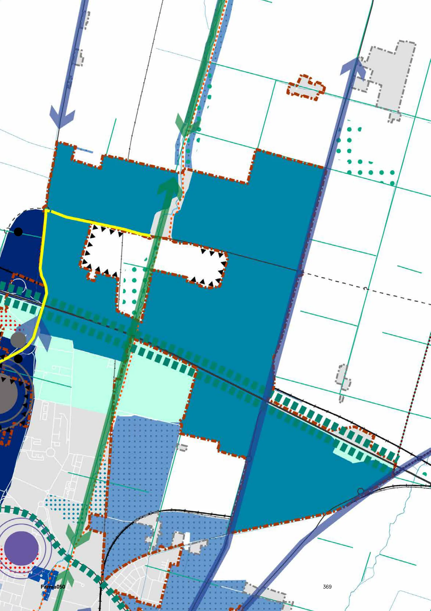
di un nuova “entità” territoriale. Dovranno essere realizzate le infrastrutture per il corretto flusso veicolare: “pesante” e
“leggero”, degli insediamenti, ivi compresi i parcheggi pubblici previsti per ogni uso e le eventuali opere di adeguamen-
to come correlate agli interventi stessi In particolare, devono essere soddisfatte le condizioni di sostenibilità indicate
nella “Strategia” declinata dai 7 scenari e le relative “Azioni”, qui richiamate:
Strategia 3.1 - Azione 3.1.1 Favorire la proliferazione di infrastrutture “smart mobility” con scambio mezzo, soprattutto
nei parcheggi pubblici. Azione 3.1.8 3.1.8 Favorire opere di mitigazione ambientale per ridurre l’impatto di infrastrutture
stradali molto frequentate, riabilitando gli spazi interclusi. Azione 3.1.13 Nuove linee strutturali TP (Trasporto Pubbli-
co). Azione 3.1.10 Estendere, implementare e gerarchizzare la rete ciclabile urbana e territoriale. Azione 3.2.11 Favorire
flessibilità burocratiche per sviluppo di dispositivi a favore dell’ambiente e all’efficientamento degli edifici produttivi e
commerciali. Strategia 3.2 - Azione 3.2.4 Sostenere i processi di economia circolare e cicli virtuosi, con il riciclo dei
rifiuti e valorizzazione delle filiere corte. Azione 3.2.5 Favorire l’insediamento di aziende innovative e promuovere centri
dell’innovazione. Nel caso specifico del PED eventuali nuovi insediamenti produttivi altamente sostenibili dovranno pos-
sibilmente essere dislocati da poter contribuire alla realizzazione dell’infrastruttura di supporto energetica. Altre forme
insediative possono essere inserite all’interno se altamente compatibili con le attività di produzione di energia “pulita”
Azione 3.2.11 Favorire flessibilità burocratiche per sviluppo di dispositivi a favore dell’ambiente e all’efficientamento
degli edifici produttivi e commerciali. Strategia 3.3 - Azioni 3.3.3/3.3.4 Introduzione di misure finalizzate all’adattamen-
to climatico degli edifici, Mitigare l’esposizione agli inquinanti anche acustici e a rischi antropici. Azione 3.3.6 Rendere
accessibili i servizi energetici a basso impatto ambientale. Azione 3.3.9 Favorire il riciclo e la diminuzione di rifiuti. Nel
caso specifico in connessione al Termovalorizzatore. Azione 3.3.10 Favorire lo sviluppo dei sottoservizi tra cui banda
larga e disporre nuovi sistemi per la ricarica elettrica dei mezzi di trasporto Strategia 3.4 - Azione 3.4.1 Diffusione di una
rete equilibrata di attrezzature e servizi di qualità. Azione 3.4.12 Sviluppo di percorsi ciclo pedonali, sentieri e ippovie
alla scala territo- riale. Strategia 3.6 - Azioni 3.6.5/3.6.9 Sperimentare nuove forme di “working & living” e sviluppo di
attività produttive innovative, nel caso specifico nelle vicinanze e nell’intorno del “Parco Centrale: del PED. Strategia
3.6 -Azione 3.6.7 Predisporre e costruire una rete infrastrutturazione adeguata per ospitare nuove necessità. Strategia
3.7 - Azioni 3.7.1/3.7.2 Salvaguardare ed implementare la biodiversità e sviluppare la matrice ecosistemica valorizzando
la centuriazione ove presente. Azione 3.7.5 Migliorare la qualità delle acque di falda e quelle superficiali. Azione 3.7.11
Favorire l’espansione delle aree naturalistiche protette.
4. Vision e gli obiettivi del Piano
Le strategie individuate supportate dalle Azioni, richiamate precedentemente, concorrono al raggiungimento dei
seguenti obiettivi dichiarati nella Vision: 1 - Parma città della biodiversità; 6 - Parma città dello sviluppo e delle
opportunità; 7 - Parma città dell’agricoltura come patrimonio storico-ambientale e socio-culturale; 8 - Parma città
capitale del cibo e dell’alimentazione sostenibile; 9 - Parma città dell’energia rinnovabile.
L’obiettivo della trasformazione della SPIP di Parma in un Positive Energy District (PED) è creare un’area industriale ca-
pace di generare più energia di quanta ne consuma, contribuendo alla riduzione dell’impronta carbonica e promuoven-
do la sostenibilità energetica. Questo progetto mira a incrementare l’efficienza energetica, integrare fonti rinnovabili e
ottimizzare le risorse esistenti, garantendo al contempo la competitività delle aziende presenti.
Obiettivi specifici
•
La trasformazione del comparto in un ecodistric (capace di innescare cicli virtuosi riguardo gli aspetti
energetici, di riciclo delle acque, dei rifiuti, isola di calore...).
•
Diminuire l’impatto del grande rapporto di copertura dei fabbricati che insistono all’interno dell’aerale
evidenziato e dei futuri edifici.
•
Realizzare isole ambientali ecologicamente attive e collegare in rete gli spazi verdi interclusi.
•
Rafforzare la funzione centrale del Naviglio come infrastruttura blu (vale a dire come elemento di biodiversità
attiva).
•
Utilizzo delle grandi superfici delle coperture per fotovoltaico, tetti verdi e bianchi.
•
Potenziare il verde di mitigazione rispetto alle barriere infrastrutturali (ferrovia e autostrada).
•
Rafforzare la funzione produttiva C2C (Cradle to Cradle).
•
Potenziare la dotazione di spazi naturali che caratterizzi specificatamente il comparto e congiuntamente potenzi
forme di produzione circolare.
•
Migliorare le connessioni e movimenti all’interno del PED.
•
Naturalizzazione del sito.
•
Opportunità di sviluppare un carattere distintivo, recuperando le tracce e seguendo la naturale suddivisione del
parco agricolo centuriato.
•
Migliorare accessibilità e links con il TPL.
•
Valorizzazione degli ambiti pregiati naturali, ambientali e urbani, (indentificare nella topografia esistente le aree
più alte e più basse per la raccolta e/o concentrazione acque piovane. Eventualmente crearne di nuove per
costituire “water ponds” (stagni d’acqua) e Bioswales (canali di scolo con vegetazione).
•
Progettare il “green framework” per il PED per costruire la dorsale ecologica centrale e portare le persone dalla
città in contatto con la natura.
•
Circolazione interna pedonale e ciclabile oltre al potenziamento del TPL. Trasformazione di viale Forlanini in
un boulevard di nuovo tipo con dotazioni urbane, ecologico ambientali. Selezione di elementi vegetativi per
costruire una sequenza specifica di biodiversità, e contestualmente diminuire isola di calore e recuperare acque
piovane per usi igienico sanitar (proposta di usare pavimentazioni drenanti con raccolta delle acque attraverso
canali laterali di raccolta).
•
Costituire un network di attività per lo sport attività fisica, educazione, servizi sociali, lo svago in clusters
integrati al contesto esistente incoraggiando stili di vita salutari e sostenibili per i futuri fruitori.
“Key elements”
•
Definizione del “Central Park” del “Parma Eco District” (PED). Il nuovo parco del PED definisce il “Green
Core” del PED, il quale potrà ospitare attrezzature sportive un grande spazio per attività ricreative, di
giardinaggio sperimetale per utenti locali e visitatori, spazi educativi, giardini botanici, water ponds per la
raccolta acque, oasi naturale ricreativa - cassa di laminazione, percorsi ciclopedonali).
•
Formazione di micro aree umide per attività chiave e costituire un “leisure asset” per futuri fruitori.
•
Una “civic square”, dotazione con ruolo di spazio per eventi.
•
Vasche di raccolta acque meteoriche.
•
Aree e spazi a servizio dei lavoratori e autotrasportatori.
•
Centro riciclo rifiuti non pericolosi, recupero circolare dei rifiuti all’interno del PED.
•
Rivestimento del termovaslorizzatore con o senza funzioni (vedi Copenhagen).
•
Definizione della “Forest Valley” del PED, lungo il Naviglio.
•
Sviluppo di un “Transport Interchange Hub” infrastruttura di nuovo tipo (come alternativa allo “smart mobility
hub” concepito invece per la città).
•
Nuova stazione e fermata ferroviaria (Parma-Brescia), in connessione con il Parco.
•
Potenziale aggiunta di altre funzioni per formazioni di cluster con sport educazione ricerca.
•
“Identity system” dell’ecodistrict con risvolti alla sicurezza dell’ED.
•
Nella cassa di espansione sviluppo di un “Adventure Park” con playground innovativi.
•
Landmark dell’ecodistrict (torre produttiva simbolo e “Core” del PED).
•
Nuovo layout e suddivisione del suolo con evidenze del recupero e trattamento delle acque non solo
meteoriche.
Le APEA (Aree Produttive Ecologicamente Attrezzate) e i PED
(Positive Energy Districts) sono due concetti legati alla piani-
ficazione sostenibile. Il PED aggiunge in più alle APEA alcuni
elementi chiave per spingere in avanti il concetto di sostenibilità
delle aree e distretti produttivi.
1. APEA – Aree Produttive Ecologicamente Attrezzate
Le APEA sono aree industriali e produttive organizzate in modo
da minimizzare l’impatto ambientale attraverso la condivisione
di infrastrutture e servizi ecologici. Il loro obiettivo è migliorare
la sostenibilità delle attività produttive grazie all’Efficientamento
energetico e uso di fonti rinnovabili; Gestione sostenibile delle
risorse idriche e dei rifiuti; Mobilità sostenibile e infrastrutture
comuni; Riduzione delle emissioni e dell’inquinamento; Coope-
razione tra imprese per la simbiosi industriale
5. Interventi Prioritari
•
Produzione di Energia Rinnovabile
•
Installazione di pannelli fotovoltaici sui tetti degli edifici industriali e in aree inutilizzate.
•
Sviluppo di infrastrutture “smart” per l’energia.
•
Implementazione di impianti di geotermia per riscaldamento e raffrescamento.
•
Recupero di calore industriale e installazione di sistemi di cogenerazione.
•
Implementazione teleriscaldamento da termovalorizzazione.
I PED sono distretti urbani e/o produttivi progettati per produrre
più energia di quanta ne consumano. Si tratta di un concetto
più legato alla pianificazione urbana sostenibile, con l’obiettivo
di:
•
Massimizzare l’autosufficienza energetica attraverso
rinnovabili (fotovoltaico, geotermia, etc.)
•
Migliorare l’efficienza energetica di edifici e infrastrutture
•
Integrare sistemi di accumulo energetico e reti intelligenti
(smart grids)
•
Promuovere la mobilità elettrica e la gestione intelligente
dei consumi
•
I PED sono un elemento chiave delle politiche europee
per la decarbonizzazione delle città e sono spesso
sperimentati nell’ambito di programmi di innovazione e
finanziamenti europei.
•
Efficienza Energetica e Riduzione dei Consumi
•
Riqualificazione energetica degli edifici esistenti con isolamento termico e sostituzione di serramenti.
•
Illuminazione LED e sistemi di controllo automatizzati per la gestione dell’illuminazione pubblica e industriale.
•
Ottimizzazione dei processi produttivi per ridurre il consumo energetico.
•
Installazione di sensori IoT per monitoraggio e gestione dinamica dell’energia.
•
Mobilità Sostenibile
•
Infrastrutture per la mobilità elettrica: stazioni di ricarica per veicoli elettrici.
•
Car sharing elettrico per le aziende e trasporto pubblico a emissioni zero.
•
Potenziamento delle piste ciclabili e creazione di percorsi pedonali per incentivare la mobilità dolce.
•
Reti Intelligenti e Integrazione Energetica
•
Creazione di una microrete energetica per condivisione e scambio di energia tra le aziende.
•
Sistemi di accumulo energetico (batterie di grande capacità) per garantire stabilità e continuità.
•
Utilizzo di blockchain per la gestione trasparente e decentralizzata dell’energia.
•
Economia Circolare e Gestione dei Rifiuti
•
Implementazione di impianti di biogas per il trattamento dei rifiuti organici industriali.
•
Riciclo e riuso dei materiali di scarto industriale.
•
Recupero delle acque piovane e trattamento delle acque reflue per riutilizzo.
6. Potenziale Impatto sull’Impronta Carbonica
•
La trasformazione della SPIP in un PED avrà i seguenti impatti positivi sull’impronta carbonica.
•
Riduzione delle emissioni di CO2 del 40-50% nei primi 5 anni grazie all’efficientamento energetico.
•
Produzione di energia rinnovabile pari al 120% del fabbisogno energetico dell’area entro 10 anni.
•
Abbattimento delle emissioni di trasporto del 30% grazie alla mobilità sostenibile.
•
Recupero e riutilizzo di rifiuti con una riduzione del 25% delle emissioni derivanti dalla gestione dei rifiuti.
7. Conclusioni
La realizzazione di un PED nella SPIP di Parma rappresenta una grande opportunità per il territorio, non solo in termini
ambientali ma anche economici, promuovendo un modello di sviluppo industriale sostenibile e replicabile in altre aree
urbane e produttive.
Parma Eco District (PED)
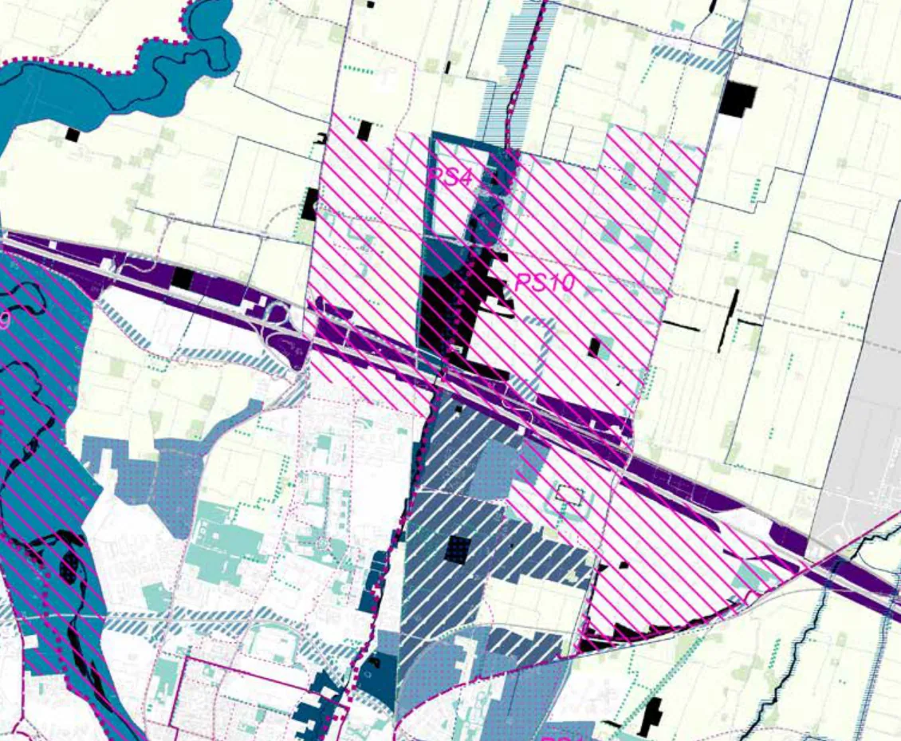
L’obiettivo generale è quello di sviluppare un
modello sostenibile di crescita per il distretto
produttivo nord, conosciuto come “SPIP”,
e che il PUG definisce con il nome “PED“ -
Parma Eco District. Considerando i principi
di sviluppo introdotti da “PR050”, il sistema
produttivo nord sarà così allineato alle sfide
ecologiche ed ambientali che contraddistin-
guono i nostri tempi: conciliare il sempre più
necessario sviluppo economico con il rispetto
e la tutela dell’ambiente.
Il PED dovrà essere in grado di generare e
sviluppare nuovi sistemi ambientali integrati
all’area industriale definita dal piano, prevedere
funzionalità e utilizzi diversificati, per offrire alla
città un plesso di servizi qualificati in grado di
rispondere ai bisogni dei lavoratori, cittadini e
dei city-users attraverso un processo di rige-
nerazione insediativa e ambientale attualmente
connotata da una situazione di marginalizzazio-
ne e sottoutilizzo.
Il sito di circa 350 ha, fornirà spazio per nuove
alberature, arbusti e altre piante per ricreare un
paesaggio caratteristico e unico nel genere.
Un nuovo parco denominato “Parma Parco
Centrale” diventerà lo spazio ambientale di ri-
ferimento per tutta l’area, un filtro attivo contro
inquinanti e polveri sottili, ma anche “piazza
blu” in corrispondenza della cassa di laminazio-
ne lungo il Naviglio, lato sud.
Il Parma Eco District stabilisce una posizione
unica sia in un contesto locale che a livello
internazionale; una cultura di ambizione, inno-
vazione e imprenditorialità ha plasmato la città
in quella che è oggi e che nel prossimo futuro
potrà divenire una candidata per il titolo di città
europea dell’energi. il PED potrà funzionare
non solo come un forte centro produttivo di
nuovo tipo e una destinazione per attività diver-
sificate e attrezzata ecologicamente, ma diven-
tare una “macchina” ambientale e infrastruttura
energetica integrata del nuovo millennio.
piazza d’acqua (vasca di raccolta e
stoccaggio
coperture piane con SRI > 76
bioswales
pozzi geotermici
energia da fonti rinnovabili
centrale tecnologica
edificio autonomo
edficio autonomo
vasca di depurazione
acque meteoriche
sistemi per produzione
di energia rinnovabile integrativa
vasca interrata di accumulo
acque meteoriche (uso outdoor)
collettori acque meteoriche
a dispersione graduale
teleriscadamento /
teleraffrescamento
facciate con gradiente
di emissività
Sostenibilità
dell’Ecodistrict
Gestione integrata delle acque meteoriche
Riscaldamento e raffrescamento a
cessione controllata
Comparto energeticamente autosufficiente
Ambiente purificato tramite filtri verdi
Qualità urbane, ecologico e am-
bientali dell’Ecodistrict
1. Produzione di energia da fonti
rinnovabili
2. Produzioni differenziate (da cibo
a tecnologia)
3. Biodiversità
4. Riciclo delle acque
5. Passaggio della fauna selvatica
6. Ricreazione
7. Sport
8. Raccolta acque piovane
9. Connettività ciclo-pedonale
10. Nuovi habitat per fauna e flora
vasca di laminazione
PED “Central Park”
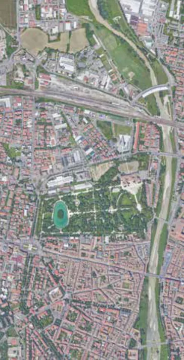
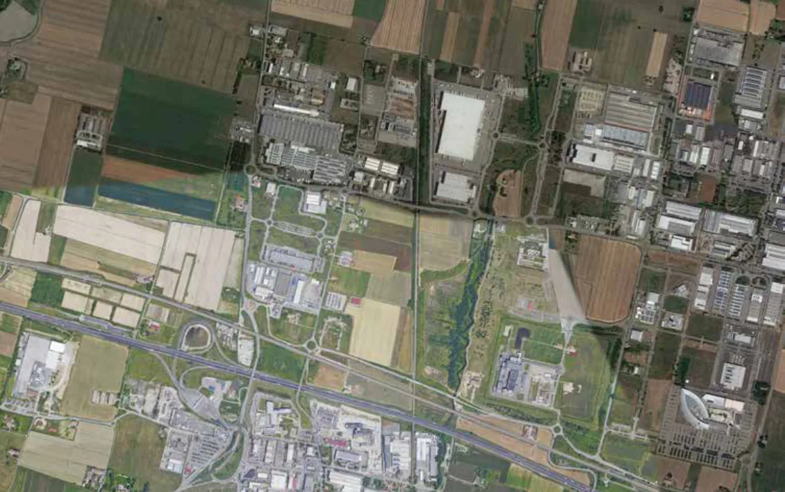
Viste zenitali tratte da Google Earth (aventi
la stessa scala) del Parco Ducale e dell’area
Produttiva Nord denominata “SPIP”.
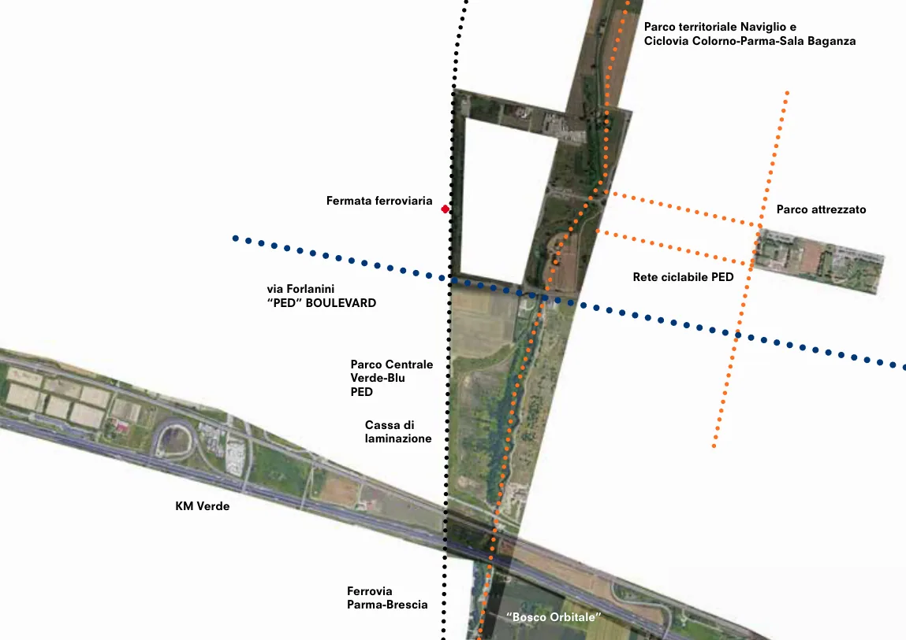
Diagramma degli elementi verdi
caratterizzanti il PED (Parma Eco District) e
gli elementi principali di relazione.
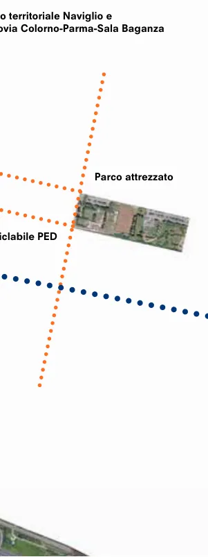
Parco territoriale Naviglio e
Ciclovia Colorno-Parma-Sala Baganza
Fermata ferroviaria
Parco attrezzato
Rete ciclabile PED
via Forlanini
“PED” BOULEVARD
Parco Centrale
Verde-Blu
PED
Cassa di
laminazione
KM Verde
Ferrovia
Parma-Brescia
“Bosco Orbitale”
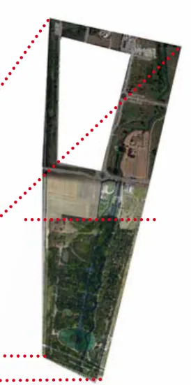
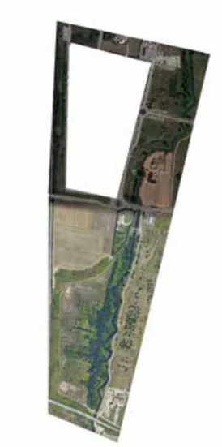
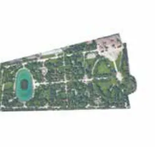
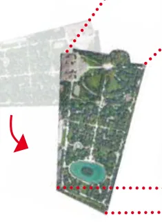
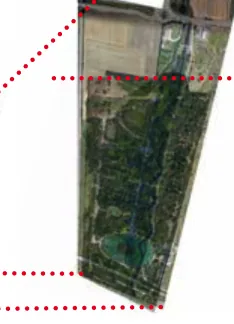
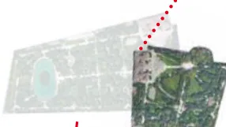
Diagramma comparativo tra il Parco Ducale
e il Parco Centrale del futuro PED.
Parco Ducale
21 ha
Parco Centrale PED
52,8 ha
Il nuovo Parco Centrale PED come
gigantografia del Parco Ducale
Diagramma dei sistemi caratterizzanti il PED
(Parma Eco District)
Viali alberati
Nuovo Boulevard “verde”
del PED
Sistemi verdi caratterizzanti
(Bosco Orbitale, KM verde)
Percorsi ciclabili
Sistemi verdi e trattamento
delle acque
Direzione di espansione delle
attività produttive
Sistema verde caratterizzante
il PED
Sistema verde di protezione
del corridoio ecologico lungo
il Naviglio
Sistema verde caratterizante
la biodiversità del PED e di
protezione ecologica ed
ambientale
Possibili aree di mitigazione
ambientale e/o produzione
energia da fotovoltaico
ST.PS.4.5.12
SCENARIO 3.2
“Parma città produttiva”
Luoghi e Progetti Strategici
4.2.2
Scala
1:9.500
“PARMA FOOD PORT”
Nuovo mercato agro-alimentare
PR050
1. Descrizione
Insieme al Parma Eco District (PED), il Parma Food Port vuole essere la prima area a Parma ad applicare i princi-
pi di Cradle to Cradle (C2C). La prossima fiera CIBUS potrebbe diventare la premessa per ospitare una fiera mondiale
del cibo e dell’alimentazione sostenibile (evento che dovrebbe appartenere alla capitale della Food Valley), ma in gene-
rale l’industria del cibo (produttiva), la logistica e l’agroalimentare esistenti sono particolarmente adatti all’applicazione
con successo dei principi C2C. Il progetto strategico in questione propone di collocare il “Food Port” a nord-ovest
della città di Parma, lungo la strada appena dopo l’ex-scalo ferroviario (via Reggio) a ovest. In questa vasta area do-
vrebbe essere sviluppata una zona dinamica di attività che ripensi e implementi il concetto di vendita di alimenti, oggi
mercato agroalimentare.
Note:
Il Food Port fornisce un’immagine completa
dell’industria alimentare e sui suoi processi,
ricollocando molti programmi tipicamente
separati in un nuovo comparto della città.
Definisce un nuovo modello e al tempo stesso
ridefinisce il rapporto tra consumatore e
produttore e affronta la domanda di mercato
non ancora “catturata” con l’ambizione di
eliminare le inefficienze all’interno dell’industria
alimentare locale.
Il nuovo sviluppo dovrebbe fondersi con il paesaggio dando vita ad un equilibrio armonioso e sostenibile nella
fusione tra economia ed ecologia. (L’area attualmente ha una grande area impermeabile e per questo dovrebbe essere
ripensata nel suo complesso, anche l’edificio del mercato agroalimentare).
Indicazioni tecniche relative agli edifici del
Food Port
In fase di progetto verrà richiesta particolare
attenzione alle prestazioni dell’edificio e/o
edifici, in riferimento non solo ai consumi e
all’efficienza energetica, ma prendendo anche
in considerazione il suo impatto ambientale.
L’obiettivo è quello di favorire la realizzazione di
edifici sempre più innovativi, a consumo ener-
getico quasi zero, con un ridotto consumo di
acqua, nonché realizzati con materiali che nella
loro produzione comportino bassi consumi
energetici e che allo stesso tempo garanti-
scano un elevato comfort per gli occupanti.
L’utilizzo di materiali naturali e riciclati/ricicla-
bili, l’adozione di tecniche innovative e fonti
energetiche rinnovabili, l’installazione di sistemi
che sfruttino il più possibile l’energia solare,
il recupero e riutilizzo delle acque piovane, la
facilità di manutenzione nonché, più in genera-
le, l’inserimento di tecnologie volte a ridurre le
elevate dispersioni di calore ed orientate all’ef-
ficientamento della struttura, rappresentano i
punti cardine per la realizzazione dell’intervento
progettuale. Tali soluzioni dovranno essere
quanto più possibile integrate nell’architettura
dell’edificio.
Nel masterplan, devono essere riorganizzate le varie funzioni e orientate verso la definizione di un nuovo Agro-
Business Park. Questo spazio dovrà essere in grado di combinare un gran numero di funzioni logistiche (distribuzio-
ne, commercio, stoccaggio, lavorazione e vendita) con strutture per la produzione. L’obiettivo non è solo il trasporto
delle merci, ma anche quello di aggiungere valore, di commerciarlo direttamente e di sviluppare competenze in questi
settori. Ciò significa che vengono create combinazioni tra aziende ad alta intensità di conoscenza e innovazione in un
unico sito e la formazione di un nuovo tipo di cluster: il “Parma Food Port”. Oltre alle combinazioni programmate, altre
combinazioni possono naturalmente essere implementate per esempio nella gestione dell’acqua, nei sistemi energetici
e nelle infrastrutture. Il Food Port è destinato a diventare un hub internazionale del cibo dove non solo produttori e
consumatori finali posso incontrarsi ma diventare una infrastruttura che estende nel tempo le potenzialità di CIBUS e
costruire sistemi e rete, 365 giorni all’anno.
La capitale del cibo deve avere una struttura rappresentativa che agirà come nuovo epicentro catalizzatore, un
magnete urbano (che potrà essere replicato in altre parti del territorio anche per esempio vicino ad EXPO), incarnan-
do efficacemente il significato della complessa relazione fra Architettura e Cibo, alla quale il nostro tempo deve forza-
tamente ricomprendere. Il nuovo complesso provvederà a sistematizzare, la vendita e la distribuzione alimentare delle
aziende locali (con particolare attenzione a quanto prodotto all’interno della “superquadra”) alla comunità di Parma.
Gli spazi dell’insediamento includeranno laboratori di cucina, mercati e aree adibite a ‘giardini del cibo’.
3. Disposizioni specifiche e Azioni
Tra le più importanti strategie urbane riferite al progetto strategico “Parma Food Port” rientrano la qualificazione degli
spazi pubblici e verdi presenti nel comparto, la mitigazione dell’isola d calore, l’avvio di processi di decarbonizzazione,
di favorire l’innesto di corsie preferenziali per ciclisti, aumentare la presenza vegetale di mitigazione come parte della
sezione stradale; sviluppare la produzione di energia elettrica sfruttando la grande superficie di copertura degli edifici
esistenti e nuovi. Particolare attenzione dovrà essere posta al rafforzamento della funzione centrale del mercato agro-
alimentare introducendo funzioni tali da aggiornarne i contenuti in termini di uso non solo ristretto alla funzione com-
merciale. La dotazione di spazi legati alla riciclo, ricerca, educazione alimentare, R&D (Research and Development)
che caratterizzi specificatamente il comparto e congiuntamente potenzi forme di produzione circolare. Gli interventi
devono concorrere alla definizione di un nuova “entità”urbana. Dovranno essere realizzate le infrastrutture per il cor-
retto flusso veicolare: “pesante” e “leggero”, degli insediamenti, ivi compresi i parcheggi pubblici previsti per ogni uso
e le eventuali opere di adeguamento come correlate agli interventi stessi In particolare, devono essere soddisfatte le
condizioni di sostenibilità indicate nella “Strategia” declinata dai 7 scenari e le relative “Azioni”, qui richiamate:
Strategia 3.1 - Azione 3.1.1 Favorire la proliferazione di infrastrutture “smart mobility” con scambio mezzo, soprattutto
nei parcheggi pubblici. Azione 3.1.8 3.1.8 Favorire opere di mitigazione ambientale per ridurre l’impatto di infrastrut-
ture stradali molto frequentate, riabilitando gli spazi interclusi. 3.1.13 Nuove linee strutturali TP (Trasporto Pubblico).
Nel caso specifico quella che dal centro città collegherà l’area delle Fiere.. Azione 3.1.10 Estendere, implementare e
gerarchizzare la rete ciclabile urbana e territoriale 3.2.11 Favorire flessibilità burocratiche per sviluppo di dispositivi a
favore dell’ambiente e all’efficientamento degli edifici produttivi e commerciali.. Strategia 3.2 - Azione 3.2.4 Sostenere
i processi di economia circolare e cicli virtuosi, con il riciclo dei rifiuti e valorizzazione delle filiere corte. Azione 3.2.5
Favorire l’insediamento di aziende innovative e promuovere centri dell’innovazione. Nel caso specifico del PFP (Parma
Food Port” eventuali nuovi insediamenti dovranno essere altamente sostenibili possibilmente essere dislocati in modo
da poter contribuire alla realizzazione dell’infrastruttura di supporto energetica. Altre forme insediative possono essere
inserite all’interno se altamente compatibili con le attività legate alla valorizzazione della filiera del “cibo” Azione 3.2.11
Favorire flessibilità burocratiche per sviluppo di dispositivi a favore dell’ambiente e all’efficientamento degli edifici pro-
duttivi e commerciali. Strategia 3.3 - Azioni 3.3.3/3.3.4 Introduzione di misure finalizzate all’adattamento climatico degli
edifici, Mitigare l’esposizione agli inquinanti anche acustici e a rischi antropici.Azione 3.3.6 Rendere accessibili i servizi
energetici a basso impatto ambientale. Azione 3.3.9 - Favorire il riciclo e la diminuzione di rifiuti. Nel caso specifico in
connessione al Termovalorizzatore. Azione 3.3.10 Favorire lo sviluppo dei sottoservizi tra cui banda larga e disporre nuo-
vi sistemi per la ricarica elettrica dei mezzi di trasporto Strategia 3.4 - Azione 3.4.1 Diffusione di una rete equilibrata di
attrezzature e servizi di qualità. Azione 3.4.12 Sviluppo di percorsi ciclo pedonali, sentieri e ippovie alla scala territoriale.
Strategia 3.6 - Azioni 3.6.5/3.6.9 Sperimentare nuove forme di “working & living” e sviluppo di attività produttive inno-
vative, nel caso specifico nelle vicinanze dell’aeroporto e stazione ferroviaria Strategia 3.6 -Azione 3.6.7 Predisporre e
costruire una rete infrastrutturazione adeguata per ospitare nuove necessità.
Il cibo definisce chi siamo e da dove veniamo.
Storicamente, lo sviluppo delle città è stato
indissolubilmente legato alla sua produzione,
fornitura e distribuzione. Ma con la migrazione
delle comunità rurali verso le città urbane, la
popolazione umana è diventata sempre più
lontana dai siti di produzione agricola e meno
consapevole di come viene prodotto il cibo. Il
rapporto diretto tra produttore e consumatore
è ora separato da una linea in continua espan-
sione di entità intermediarie tra cui distributori,
trasformatori e rivenditori. Il movimento ali-
mentare locale dimostra che la domanda dei
consumatori individuali e commerciali vogliono
cambiare questo rapporto, ma le dimensioni
della maggior parte delle aziende agricole locali
e delle loro reti di distribuzione rendono difficile
per i fornitori soddisfare le crescenti richieste.
I centri alimentari hanno il potenziale per
alleviare questo collo di bottiglia di inefficienza
consolidando le forniture in strutture condivise
per gli agricoltori locali e localizzandole stra-
tegicamente. Storicamente conosciuta come
la “capitale della food valley” con un fertile
collegamento con il torrente Parma, Parma ora
è la sede di uno dei più grandi eventi dedicati al
cibo, “CIBUS” in primis.
Essendo una delle infrastrutture innovative per
valorizzare il territorio, i prodotti, ma anche il
know-how, il Food Port ha il potenziale di svol-
gere un ruolo importante nella rivitalizzazione
della comunità locale di Parma e aprirsi al
mondo ancor di più. Infatti il Parma Food Port
potrebbe operare come qualcosa di più del
tipico hub alimentare con l’aggiunta di diversi
programmi chiave che servono e forniscono
tutte le fasi della catena alimentare, dall’agricol-
tura, alla lavorazione, agli spazi condivisi della
cucina comunitaria, alla vendita al dettaglio e al
riciclo. Il Food Port si inserisce in una posizione
storica della città in un importante nodo urbano
e di collegamento con l’areoporto e la tangen-
ziale e al centro storico nelle vicinanze della
stazione ferroviaria.
4. Vision e gli obiettivi del Piano
Le strategie individuate supportate dalle Azioni, richiamate precedentemente, concorrono al raggiungimento dei se-
guenti obiettivi dichiarati nella Vision: 6 - Parma città dello sviluppo e delle opportunità; 7 - Parma città dell’agricol-
tura come patrimonio storico-ambientale e socio-culturale; 8 - Parma città capitale del cibo e dell’alimentazione
sostenibile; 9 - Parma città dell’energia rinnovabile.
Il FOOD PORT rimpiazzerà il vecchio mercato
agroalimentare in modo tale da qualificare
l’angolo formato dalla strada comunale Cor-
nocchio con Strada dei Mercati.
1. Area “PARMA FOOD PORT”
2. Area DISTRETTO EMERGENZE TERRITORIALI
3. Area CONSORZIO AGRARIO
4. Area UNIVERSITA’ DI MEDICINA VETERINARIA
5. Area COMPENSAZIONE ECOLOGICA ATTIVA
5
4
6. Area AEROPORTO
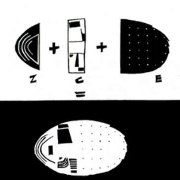
4.4.B.5
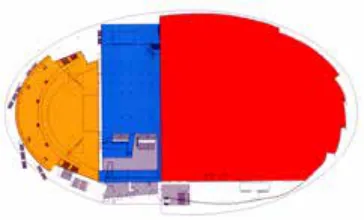
4.4.C.13
Sopra: immagine di riferimento:
rapporto dimensionale con congrexpo Lille
(OMA) - Ovale giallo
4.4.C.13
Immagine a lato: ritaglio cartografico dello
schema di assetto delle trasformazioni
4.4.C.13
4.4.A.6
ST.PS.4.5.13
SCENARIO 3.5
“Living Parma”
Luoghi e Progetti Strategici
4.5.8
Scala
1:7.500
“Parco lineare Ex-Pontremolese” e rigenerazione dei bordi
PR050
1. Descrizione
La “RIGENERAZIONE URBANA A SEGUITO DELLA DISMISSIONE DELLA FERROVIA EX-PONTREMOLESE” costituisce
una importante possibilità per trasformare la cesura ferroviaria in uno spazio pubblico “verde” e quindi possa costruire
continuità tra i sistemi urbani che affacciano su di essa.
4.4.C.13
4.4.C.13
4.4.A.6
2. Criteri ri-generativi e tipologia di intervento
Realizzazione della continuità viaria tra strada Buffolara e via Bernini.
Valorizzazione degli orti urbani come luogo di aggregazione per il quartiere.
Riutilizzo del sedime dei vecchi binari come parco e percorso ciclabile.
Realizzazione di corridoi verdi tra le aree di concentrazione volumetrica capaci di portare la natura sulla soglia
degli agglomerati residenziali.
Collocazione di un servizio pubblico pregiato che diventi un polo attrattore del quartiere.
Riqualificazione urbana che favorisca l’alternanza di spazi pubblici, privati e semipubblici.
Realizzazione di manufatti edilizi a basso impatto energetico.
L’area è collocata ai margini di una dorsale principale del TPL ed è al limite di un’area con alta accessibilità ciclabile.
Il contesto del quartiere San Pancrazio è caratterizzato da una buona dotazione quantitativa di aree per servizi e attrez-
zature, con carenze puntuali sul fronte dei servizi sociosanitari e in parte scolastici; la fruibilità dei servizi è condizionata
da una accessibilità ciclopedonale, confortevole e sicura, poco adeguata e segnata da condizioni di marginalità.
L’area si colloca come “cerniera” tra il quartiere San Pancrazio e Pablo.
L’intervento deve quindi concorrere a:
- integrare l’offerta dei servizi del quartiere San Pancrazio, a beneficio anche del quartiere Pablo;
- garantire percorsi sicuri casa-scuola e casa-lavoro;
- garantire interventi di traffici calming e park and ride per limitare il traffico di attraversamento;
- riqualificare la Via Emilia.
La maggiore criticità dell’area è costituita dall’inquinamento acustico determinato dalla presenza di due linee ferroviarie
in prossimità del comparto, di una delle quali è comunque previsto in parte l’interramento. L’intervento di riqualificazione
permetterà il contenimento dell’inquinamento acustico residuo.
4.4.A.6
4.4.A.6
4.4.A.1
4.4.A.4
.4.B.1
4.4.A.1
4.4.A.6
4.4.A.6
4.4.A.4
4.4.A.4
4.4.C.21
4.4.
4.4.A.4
3. Disposizioni urbanistiche, Linee guida, Azioni
Prediligere l’orientamento degli edifici in direzione est - ovest lungo la linea ferroviaria.
In caso di previsioni di insediamenti residenziali, assicurare interventi di contenimento dell’inquinamento acustico in gra-
do di garantire la Classe acustica IV:
- barriere acustiche lungo la ferrovia / tunnel artificiale;
- divieto di aperture degli edifici sul fronte ferrovia;
- previsione di edifici passivi.
Prevedere una fascia verde filtro lungo il lato ovest dell’area, in corrispondenza dello svincolo della tangenziale e lungo
il lato nord, in corrispondenza della linea ferroviaria.
Valgono, inoltre, le azioni di mitigazione riportate nelle Schede tematiche di approfondimento nelle pagine seguenti con
Individuazione di aree di riqualificazione urbana all’interno del tessuto consolidato intorno al parco lineare a seguito della
dismissione della ferrovia.
PARCO LINEARE DELLA
PONTREMOLESE
La dismissione del tracciato ferroviario consen-
te la realizzazione di un parco lineare in grado
di rafforzare l’ecosistema urbano incremen-
tando l’attrattività dell’intero comparto grazie
alle ricadute attese dalla rigenerazione urbana
che questo nuovo elemento potrà innescare.
AREE STRATEGICHE
GOVERNO DELLE
TRASFORMAZIONI URBANE
Gli obiettivi prioritari che il PUG, in questa por-
zione del tessuto urbano persegue, attraverso
il governo delle trasformazioni urbane sono (a)
la ricucitura degli isolati attraverso connessioni
per la mobilità dolce e corridoi verdi, (b) il
riordino compositivo del costruito attraverso
interventi di sostituzione edilizia e riqualificazio-
ne degli spazi interstiziali, (c) l’aumento della
mixitè urbana attraverso la
TESSUTO URBANO ORDINARIO
progressiva riduzione degli isolati connotati
da elevata monofunzionalità (d) la tutela della
matrice ambientale (suolo, acqua, aria) e
delle componenti biotiche attraverso la pro-
gettazioni di aree per l’invarianza idraulica e la
permeabilità dei suoli, la riduzione delle isole di
calore e i corridoi verdi.
AREE STRATEGICHE E TESSUTO URBANO
ORDINARIO
Il PUG riconosce ad alcuni isolati (aree strate-
giche) del tessuto urbano consolidato una par-
ticolare valenza “pivotale” nel raggiungimento
degli obiettivi indicati.
CORRIDOIO EX PONTREMOLESE
Per questi isolati (evidenziati nello schema
planimetrico allegati in colore grigio) vengono
fornite alcune indicazioni specifiche atte ad
orientare la iniziative di trasformazione puntuale
del costruito con l’obiettivo di promuovere più
efficacemente la riqualificazione del tessuto
urbano ordinario.
INTERVENTI EDILIZI
L’applicazione degli indirizzi forniti per il governo
delle trasformazioni puntuali del tessuto edilizio
nelle aree strategiche dipende dall’entità dell’in-
tervento proposto e/o dalla ubicazione del lotto
di intervento in relazione al tessuto connettivo
esistente nell’intorno.
Tali indirizzi, esplicitati nelle rappresentazioni
allegate, hanno lo scopo di orientare la negozia-
zione tra soggetto proponente ed amministra-
zione nel raggiungimento degli obiettivi sanciti
dal PUG PR2050 individuando la procedura
amministrativa più adeguata per conciliare inte-
resse particolare e interesse generale.
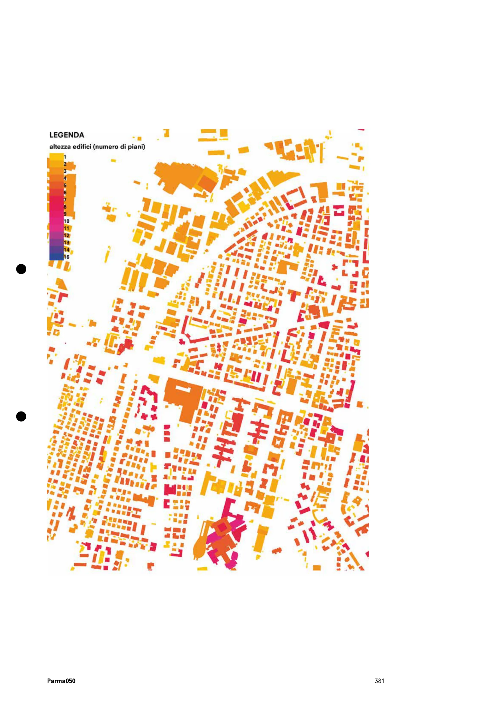
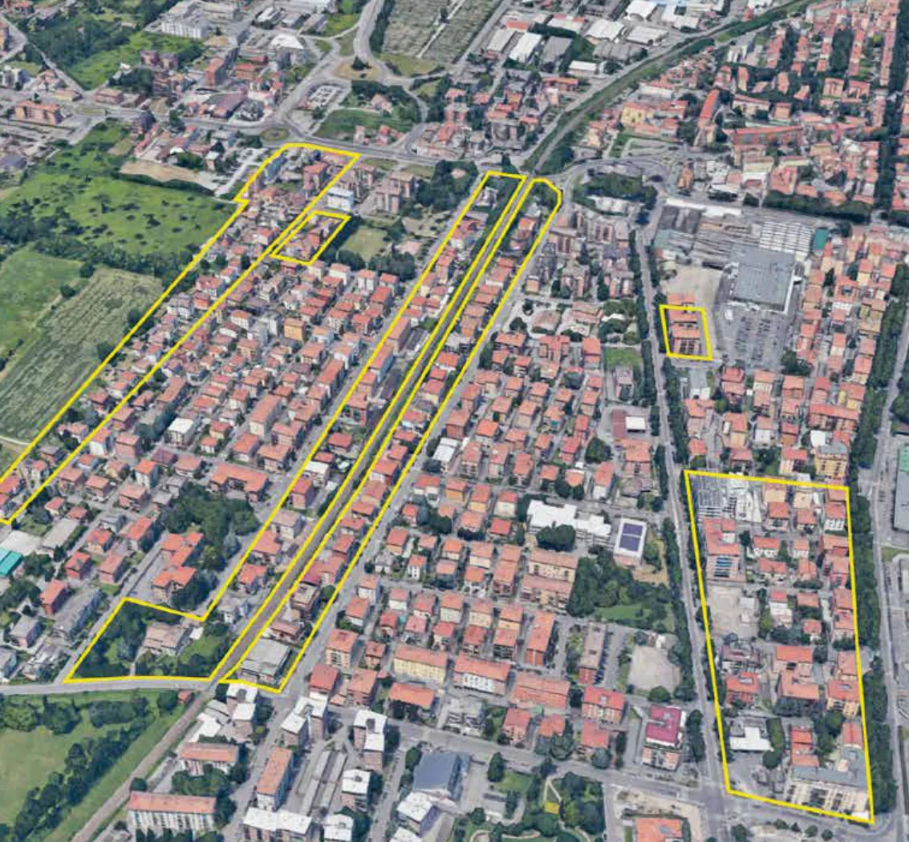
L’area strategica lungo la linee ferroviaria che si
trasformerà in un “parco lineare”, sarà definata
da un progetto di rigenerazione complessivo e
delimitata da una nuova cortina edilizia.
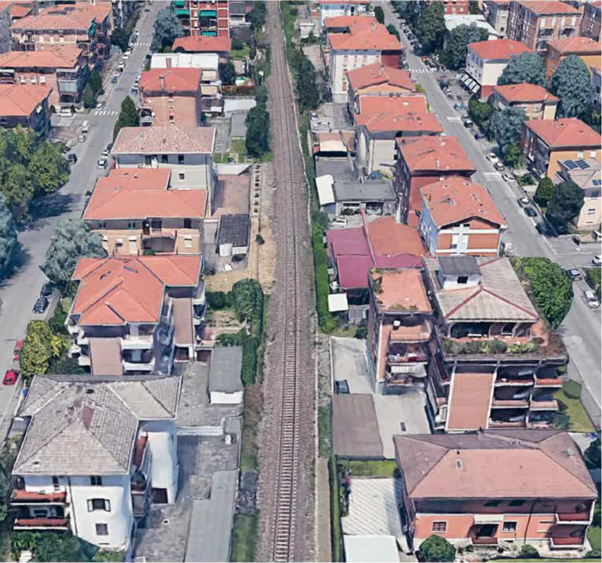
1. Area strategica
2. Tessuto edificato esistente
3. Perimetro dell’area di rigenerazione
1
2
3
Parametri urbanistici
Esempio
Superficie comparto circa 28.400 mq
Impronta edificato circa 8.600 mq
Volume edificato residenziale circa 120.000 mc
Numero medio di piani: 4
Superficie area intervento circa 1.256 mq
Impronta edificato circa 430 mq
Volume edificato residenziale circa 6.020 mc
Numero medio di piani stato di fatto: 4
Rc (Rapporto di copertura):
8.600/28.400 = 30.2%
Rc (Rapporto di copertura):
8.600/28.400 = 34.3%
Parametri urbanistici di progetto
Parametri urbanistici di progetto
Impronta edificato: circa 6.600 mq (-23%)
Sup Terr. del nuovo spazio pubblico: circa 5.112 mq
(pari al 18% dell’intera ST del comparto)
Volume edificabile residenziale: circa 161.700 mc
Numero medio di piani: 7
Impronta edificato: circa 288 mq (-23%)
Volume edificabile residenziale: circa 7.077 mc
Numero medio di piani: 7
Rc di progetto:
6.600/28.400 = 22.9%
Rc di progetto:
6.600/28.400 = 23.2%
REGOLE
Ciascuna trasformazione edilizia con sostituzione beneficia
dell’incremento volumentrico del numero di piani (fino a 6
o 7)
L’impronta al suolo dell’edificato dovrà essere contenuto
entro il valore massimo pari al 23%.
Ciascuna trasformazione edilizia attuata con la sostituzione
edilizia dovrà compartecipare alla costruzione del nuovo
spazio pubblico in ragione di un numero di mq. pari al 18%
della superficie territoriale dell’area interessata dall’inter-
vento
Tracciati direttori
della ricomposizione edificatoria del
tessuto produttivo e artigianale
Edificazione sotto quota rilevato
a destinazione servizi - commerciale di vicinato
Riassetto spazio pubblico e collegamento al
nuovo parco lineare
Nuovo spazio pubblico
in quota (rilevato ferroviario) parco lineare
PARCO LINEARE PONTREMOLESE
(SEGMENTO NORD)
DATI URBANISTICI
AREA COMPARTO
28.343 mq
AREA COMMERCIALE
5.660 mq.
PIAZZA ESISTENTE
2.985 mq.
PIAZZA NUOVA
1.993 mq
PERCORSO DI COLLEGAMENTO
881 mq
AREA COMMERCIALE / RESIDENZIALE
VIA FLEMMING - CAVEDAGNI
RESIDENZA /
TERZIARIO
SOPRA COMMERCIALE
COMMERCIALE
COMMERCIALE
SPAZIO PUBBLICO
AREE VERDI E DRENANTI
PARCHEGGIO
RESIDENZA
RESIDENZA
SCENARI COMPOSITIVI
PARCHEGGIO
INTERRATO
DATI URBANISTICI
AREA COMPARTO
33.904 mq
AREA AMBITO COMMERCIALE
30.880 mq
SC COMMERCIALE
15.641 mq.
PARCHEGGIO
9.598 mq
SLP RESIDENZIALE
3.300 mq
residenza
terziario
commerciale
park
perimetro area di
prossimità del
parco lineare
isola verde
piantumata
marciapiede con
cunette drenanti
strada di isolato
pista ciclabile con
cunette drenanti
aree destinate ad ospitare:
- laminazione
- piantumazione e verde
- spazio pubblico
residenza
terziario/comm.
artigianale/servizi
park
PARCO LINEARE DELLA EX-PONTREMOLESE
OBIETTIVI SPECIFICI DA PERSEGUIRE NEL GOVERNO DELLE TRASFORMAZIONI URBANE
ISOLATI
Il riconoscimento dei caratteri legati all’assetto morfotipologico dell’isolato di riferimento consente di riconoscere la
trama dei tracciati ordinatori lungo le cui direttrici dovranno svilupparsi gli interventi specificatamente orientati al rag-
giungimento degli obiettivi indicati.
RI-CONNETTERE
Ciascuna trasformazione edilizia ed urbanistica dovrà contemplare, in ragione dell’entità e della specifica ubicazione
dell’intervento proposto, una serie di opere finalizzate all’incremento della porosità urbana favorendo così la connes-
sione pedonale e ciclabile degli isolati e l’apertura di varchi a valenza ecosistemica per l’incremento delle connessioni
ecosistemiche alla scala territoriale tra ambiti a differente grado di urbanizzazione.
RIORDINO COMPOSITIVO
Attraverso gli interventi di sostizione urbana è possibile attuare un riordino della composizione urbana alla scala dell’in-
tero comparto attraverso la riorganizzazione della disposizione dei volumi lungo i tracciati direttori.
MIXITÈ URBANA
Negli isolati carratterizzati da una forte monofunzionalità urbana, in particolare quelli a carattere artigianale e pro-
duttivo, la disciplina del PUG favorisce la diversificazione funzionale consentendo l’inserimento di funzioni urbane
complementari (quali la residenza, il terziario, il commercio di vicinato) nelle aree artigianali a condizione che le attività
economiche siano compatibili con il mileau urbano.
MATRICE AMBIENTALE
Quota parte delle aree scoperte dovranno essere destinata alla piantumazione e alla realizzazione di superfici drenanti
finalizzate a garantire l’approvvigionamento delle falde acquifere, all’efficientamento della rete ecologica e alla inva-
rianza idralica e possibile valorizzazione delle superfici con tecniche Nature-Based Solutions (NBS).
A fianco: visualizzazione planimentrica del trac-
ciato “ex-pontremolese” convertito in parco
lineare.